Doc de
Contents
- 1 Nutzungsbedingungen
- 2 Kurzbeschreibung und Schnelleinstieg
- 3 Eine neue Patientin erfassen
- 4 Benutzeroberfläche einrichten
- 5 Konzepte
- 6 Menü und Toolbar
- 7 Views des Kernsystems
- 8 Plugins
- 9 Das Textsystem
- 10 Mehrmandantenbetrieb
- 11 Systemvoraussetzungen
- 12 Einstellungen
- 13 Weiterführende Themen
- 14 Überlegungen zur Datensicherheit
- 15 Index
Nutzungsbedingungen
Elexis[^^] ist ein offenes Projekt, welches in laufender Weiterentwicklung begriffen ist. Dasselbe gilt für dieses Handbuch. Die Entwicklung geht weiter, und das Handbuch wird meistens dem Programm etwas hinterherhinken. Es kann daher nicht garantiert werden, dass dieses Handbuch stets alle Programmeigenschaften korrekt und/oder vollständig beschreibt. Wenn Sie der Meinung sind, einen Fehler gefunden zu haben, melden Sie uns diesen bitte. Wenn Sie einen Fehler im handbuch selber korrigieren wolle, um so besser! Wichtig: Sie dürfen Elexis nur verwenden, wenn Sie mit dem folgenden Haftungsausschluss und der Lizenz einverstanden sind.
Haftungsausschluss
Ein Computerprogramm kann niemals garantiert fehlerfrei sein1. Dies gilt für ClosedSource ebenso, wie für OpenSource Projekte. Elexis wurde und wird in mehreren Arztpraxen eingesetzt und getestet. Soweit möglich wurden alle Fehler beseitigt. Es kann aber nicht garantiert werden, dass nicht eventuell noch weitere Fehler vorhanden sind. Wir müssen deswegen jede Verantwortung für direkte oder indirekte, materielle oder immaterielle Schäden, die aus der Verwendung oder der Nichtverwendbarkeit von Elexis entstehen, ablehnen. Wir garantieren auch nicht die Verwendbarkeit des Programms auf einem bestimmten Computer oder für einen bestimmten Zweck.
Lizenz
Sie dürfen Elexis auf beliebig vielen Computern einsetzen. Sie dürfen Kopien von Elexis an Andere weitergeben. Sie dürfen beliebige Veränderungen an Elexis vornehmen oder vornehmen lassen, ausgenommen den im nächsten Absatz genannten. Sie dürfen nicht: Copyrighthinweise aus dem Programm oder der Dokumentation entfernen oder verändern. Sie dürfen nicht ein eigenes Programm auf Basis von Elexis herstellen, ohne auf diese Basis hinzuweisen. Sie dürfen nicht ein anderes Programm oder ein Programm, welches aus Änderungen oder Erweiterungen von Elexis entstanden ist, ‘Elexis’ nennen.
Kurzbeschreibung und Schnelleinstieg
Elexis – die elektronische Praxis – ist
- ein Projekt zur gemeinschaftlichen Entwicklung eines quelloffenen (OpenSource) Praxisprogramms, speziell angepasst an Schweizer Verhältnisse.
- ein universelles Praxisprogramm: Das Programm ist für alle Medizinalberufe geeignet. Ob Arzt- oder Zahnarztpraxis, Physio- Ergo- Logopädie, Psychotherapie oder Homöopathie: Elexis lässt sich benutzerspezifisch flexibel anpassen und beliebig erweitern.
- Aus der Praxis für die Praxis: Elexis wird von Fachleuten aus dem Medizinbereich entwickelt und unter realen Praxisbedingungen getestet.
- lauffähig unter Windows, Linux und MacOS X. Auch in gemischten Umgebungen mit verschiedenen Computersystemen am selben Server.
- Quelloffen: Elexis ist kein proprietäres Programm, Sie sind somit nicht von einer Herstellerfirma abhängig. Interessenten haben jederzeit Zugriff auf den Quellcode und können bei Bedarf die Funktionalität des Programmes erweitern. Jedermann mit genügend Computerkenntnissen kann das System verstehen und weiterentwickeln. Die Lizenz, unter der Elexis vertrieben wird, erlaubt eine solche Weiterentwicklung durch Dritte ausdrücklich und ohne spezielle Bedingungen oder Kosten.
- Alles in einem: Krankengeschichte, Lagerbewirtschaftung, Bestellwesen, Abrechnung, Debitorenkontrolle, Agenda und vieles mehr.
- kontaktfreudig: Kann Daten anderer Programme (sofern von deren Hersteller vorgesehen) importieren und kann eigene Daten in Standardformate exportieren.
Unterstützung Elexis enthält alle Komponenten um direkt starten zu können. Eine elektronische Krankengeschichte ist allerdings ein komplexes Gebilde, und nicht vom Stand weg zu beherrschen. Wir versuchen Ihnen mit unserer Dokumentation den Einstieg zu erleichtern. Wenn Sie sich lieber nicht mit Computerinterna beschäftigen, bieten wir Ihnen auch Unterstützung in Form von Installations- und Wartungsverträgen an. Gerne machen wir Ihnen auf Anfrage eine Offerte. Forum Es existiert ein offenes Forum (http://www.elexis-forum.ch), wo Fragen und Diskussionen unter Anwendern und Interessenten möglich und willkommen sind. Medelexis AG Eine Gruppe Elexis-begeisterter Ärzte und die argomed Ärzte AG (http://www.argomed.ch) haben 2009 die Medelexis AG gegründet. Ziel der Firma ist einerseits die Entwicklung professioneller Supportangebote für nicht so PC-erfahrene Anwender und andererseits die Weiterentwicklung von Elexis und anderer OpenSource Software im Gesundheitswesen. Zur Finanzierung bietet die Medelexis AG eine um einige proprietäre Plugins erweiterte Elexs-Installation an, welche ausserdem vom Anwender selbst über einen einfach bedienbaren Konfigurator ausbaubar ist. Weitere Informationen unter http://www.medelexis.ch und www.elexis.ch/configurator. Zusatzplugins und -entwicklungen Neuerungen werden im Allgemeinen zunächst auf der Website (http://www.elexis.ch) beschrieben. Um auf dem Laufenden zu bleiben, welche neuen Plugins etc. existieren, schauen Sie am besten hin. und wieder dort vorbei. Eigenentwicklungen Falls Sie selber eine bestimmte Funktion benötigen, die in der Grundversion nicht vorhanden ist, beraten wir Sie gerne über Möglichkeiten und Kosten einer entsprechenden Entwicklung. Unabhängige Supporter Es gibt inzwischen in mehreren Regionen der Schweiz Firmen und Einzelpersonen, die Ihnen gerne eine Offerte für eine schlüsselfertige Elexis-Installation oder ein Komplettsystem inklusive Hardware machen. Sie finden eine Liste unter http://www.elexis.ch.
Eine neue Patientin erfassen
Eine Version für 3.0 finden Sie hier.
[tour] Starten Sie Elexis durch Doppelklick auf das Programmsymbol. Nach einem kurzen Moment erscheint ein Fenster etwa wie in Abb. [fig:startbild] 2. [ht] 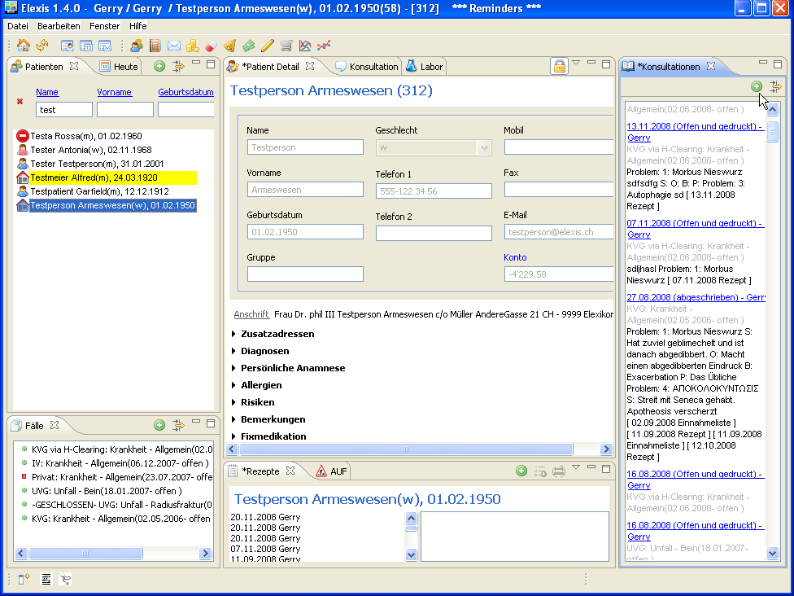 [fig:startbild]
Patientendaten erfassen
r 8cm 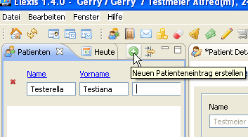 [fig:patname] Aktivieren sie mit einem Klick die Ansicht ‘Patienten’ und schreiben Sie in die Eingabefelder Name und Vorname der neuen Patientin. Falls die Patientin schon einmal erfasst worden ist erscheint ihr Name, in unserem Fall, wo keine Patientin dieses Namens vorhanden ist, werden unten keine Einträge angezeigt (s. Abb. [fig:patname])3. Klicken Sie dann auf das grüne Plus-Symbol oben rechts, um eine Patientin mit diesen Daten neu anzulegen. Es erscheint ein Dialogfenster (Abb. [fig:patdata]), wo Sie die Angaben in die entsprechenden Felder eingeben können. [ht] 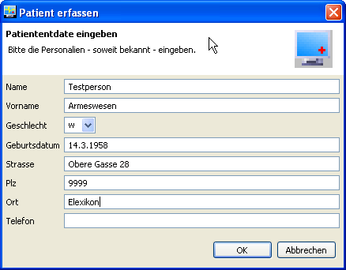 [fig:patdata] Sie brauchen die hier verlangten Daten nicht vollständig einzugeben, sondern einfach soweit Sie diese im Moment kennen. Sie müssen also im Notfalldienst nicht zuerst die vollständigen Daten eingeben, bevor Sie mit der Behandlung beginnen können. Erfassen Sie z.B. nur Name und Geburtsdatum und überlassen Sie den Rest Ihrer MPA. Für Elexis ist ein neuer Patient in dem Moment bekannt, wo Sie ‘OK’ klicken – egal wieviele Daten zu diesem Zeitpunkt eingegeben sind.
Falldaten erfassen
Bei einer neuen Patientin müssen Sie zunächst einen Fall erstellen, dem die Konsultation zugeordnet werden kann. [htbp] 0.4 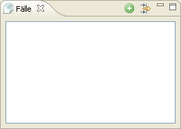 [fig:faelle1] 0.6 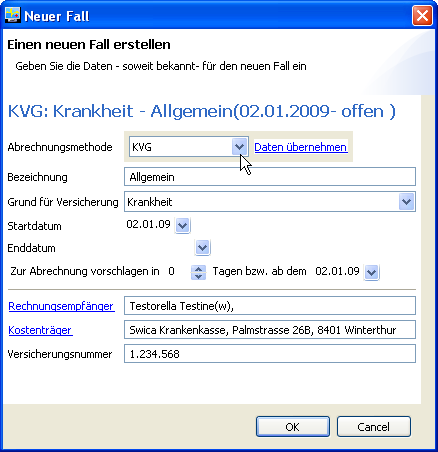 [fig:falldetail] Ein Fall sammelt alle Konsultationen, die mit einem gemeinsamen Abrechnungssystem erfasst werden. (Vgl. [settings:abrechnungssystem] auf S. ). Klicken Sie also in der Fälle-Ansicht (Abb. [fig:faelle1]) auf das grüne Plus-Symbol. Dadurch öffnet sich ein Dialog, in dem Sie wiederum die Angaben eintragen können, soweit diese Ihnen bekannt sind (Abb. [fig:falldetail]) Spätestens zur Rechnungsstellung müssen dann allerdings die notwendigen Angaben (Debitor, Kostenträger und Versicherungsnummer bzw. Fallnummer) eingegeben werden. Nach dem Klick auf OK haben Sie den neuen Fall erstellt. Bei weiteren Konsultationen kann man sich diesen Schritt natürlich sparen. Als nächstes erstellen wir eine neue Konsultation, wieder mit dem nun schon bekannten grünen Plus-Symbol (Abb. [fig:neuekons]. [ht] 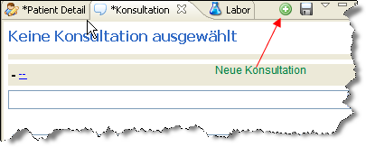 [fig:neuekons] Danach können wir mit dem KG-Eintrag beginnen (Abb. [fig:KG]).
Krankengeschichte führen
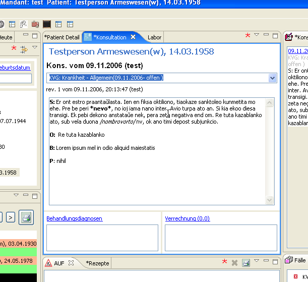 [fig:KG] Der KG-Eintrag kann einfache Textformatierungen enthalten, Textbausteine können beliebig definiert und über eine konfigurierbare shortcut-Taste aufgerufen werden. Die Verrechnung erfolgt dann entweder über ein Tastaturmakro oder per Maus. Nach Fertigstellung des Eintrags (auch vor oder während des Eintragens) können Sie durch Klicken auf Verrechnung die Leistungen-Ansicht öffnen (Abb. [fig:Verrechnung]). Analog können sie durch klicken auf Behandlungsdiagnosen die Diagnosen-Ansicht öffnen. [ht] 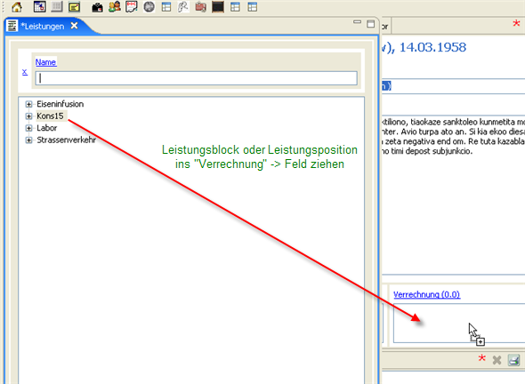 [fig:Verrechnung] Dieses Fenster enthält alle im System vorgesehenen Leistungscode-Systeme, sowie eine Seite mit selbstdefinierten Leistungsblöcken. Sie können entweder einen ganzen Block oder einzelne Leistungen aus dem Block oder aus einem anderen Leistungsfenster (Tarmed etc.) ins Verrechnung-Feld ziehen (drag and drop). Genau gleich lassen sich zur Konsultation auch Diagnosen zuordnen, auch hier hat man die Wahl zwischen allen im System integrierten Diagnosecodesystemen (beliebig anzupassen und erweiterbar).
Benutzeroberfläche einrichten
[customize]
Funktionsprinzip
Hervorstechendstes Merkmal vom Elexis ist die grosse Flexibilität. Wenn Sie ein anderes Praxisprogramm gewöhnt sind, wird Ihnen die Bedienung von Elexis vielleicht etwas ungewöhnlich vorkommen. Wir möchten deshalb hier zunächst einige grundsätzliche Konzepte erläutern.
Schreibtisch / Perspektive
Stellen Sie sich Ihren Arbeitstisch vor. Vermutlich werden Sie sich im Lauf der Zeit angewöhnt haben, bestimmte Dinge an einen bestimmten Ort auf Ihrem Schreibtisch zu legen, also Arbeitsfunktionen einem Ort zuzuordnen, wo sie sie jeweils (idealerweise) leicht wiederfinden. Ihre Anordnung ist nicht unbedingt dieselbe wie bei jemand anderem, der dasselbe Schreibtischmodell besitzt. Das Programmfenster von Elexis ist so ein Schreibtisch (s. fig. [fig:tour1].Es ist in keiner Weise festgelegt, welche Funktion wo zu finden ist, ja es ist nicht einmal festgelegt, welche Elemente überhaupt auf dem Schreibtisch erscheinen, und welche vielleicht irgendwo in einer Schublade verstaut sind und nur bei Bedarf hervorgeholt werden müssen. Ähnlich wie bei einem echten Schreibtisch kann es auch zu einem heillosen Durcheinander kommen, in dem man überhaupt nichts mehr findet. Ein gutes Ablageprinzip wird sich erst im Verlauf der Arbeit einspielen. [htp] 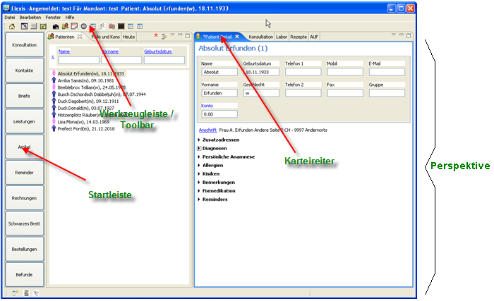 [fig:tour1] Eine Anordnung von Arbeitsflächen nennen wir eine ‘Perspektive’ (perspective). Die einzelnen Unterfenster bzw. Funktionseinheiten (oben ‘Patienten’ und ‘Patienten-Detail’), aus denen sich die Perspektive zusammensetzt bezeichnet man als ‘Ansicht’ (View).
Perspektive und Views
Oben (fig. [fig:tour1] sehen sie als Beispiel eine Perspektive, die für einen kleinen Bildschirm geeignet ist, es zeigt einen Screenshot auf einem 15-Zoll-TFT-Monitor. Die Ansichten Patienten(links) und Patient Detail(rechts) liegen obenauf, andere Ansichten sind dahinter angeordnet, so dass nur ein Karteireiter oben zu sehen ist. Auf einem grösseren Bildschirm würden Sie vermutlich eine andere Anordnung bevorzugen: fig. [fig:tour2] zeigt einen Screenshot auf einem 17-Zoll-TFT-Monitor mit mehreren Views gleichzeitig. [htp] 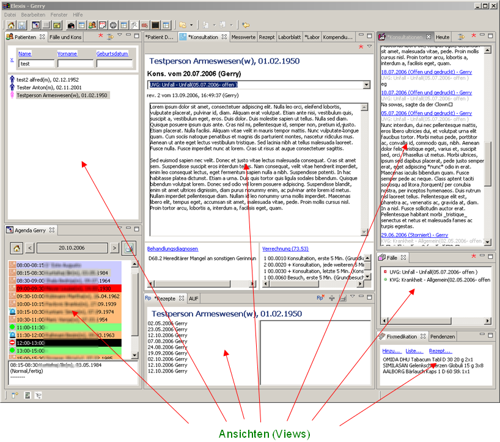 [fig:tour2]
Ansichten / Views
Jede Ansicht entspricht einer bestimmten Funktionalität. Im abgebildeten Fenster sehen sie die Ansicht einer Patientenliste (links) und die Details des ‘aktiven’ Patienten (rechts). Es gibt weitere Ansichten wie KG-Eintrag des aktuellen Patienten, eine Liste aller KG-Einträge, die Fixmedikation, die Rezepte,die Arbeitsunfähigkeitszeugnisse, die Agenda etc. Jede Ansicht ist eine definierte Sichtauf die vorhandenen Daten, daher der Name Ansicht. Sie lassen sich über die Reiter aktivieren. Die Reiter selber lassen sich beliebig anordnen, aktivieren oder deaktivieren. Egal wie Sie die Views angeordnet haben, jede View lässt sich zur besseren Übersicht jederzeit auf Vollbildgrösse bringen, indem man auf den Reiter doppelklickt (s. Abb. [fig:tour3]). [htp] 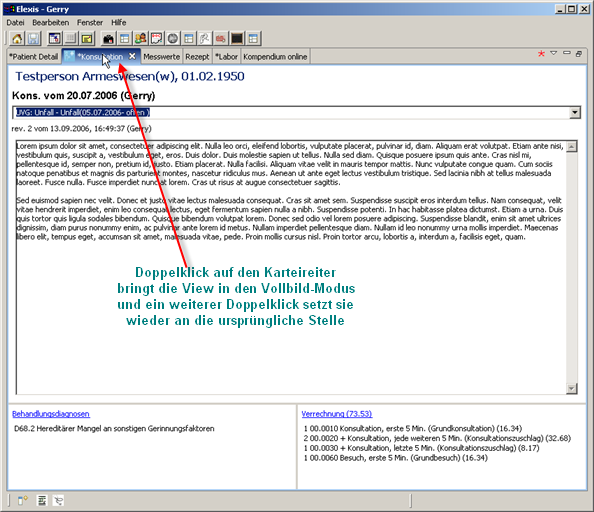 [fig:tour3]
Views und Perspektiven anpassen
In der Standard-Startperspektive ist links eine Startleiste zu sehen. Diese führt Sie zu vordefinierten Perspektiven – es erscheinen in diesen jeweils die passenden Ansichten. Die Werkzeugleiste führt, wie bei anderen Programmen üblich, zu verschiedenen Funktionen. Jede Ansicht hat einen Karteireiter, über den sie in den Vordergrund gebracht oder maximiert werden kann. =5000 Die Programmfenster-Inhalte und Zusammenstellungen der Ansichten lassen sich leicht Ihren indivicuellen Wünschen anpassen:
- Sie können nicht benötigte Ansichten entfernen damit sie mehr Platz für die verbleibenden Ansichten haben
- können Views in der Horizontalen und Vertikalen vergrössern oder verkleinern
- können Views an beliebige andere Stellen des Bildschirms schieben (indem Sie sie an den Reitern mit gedrückter linker Maustaste festhalten)
Jede Zusammenstellung kann als Perspektive gespeichert werden – und ist als solche auf einfache Art wieder aufrufbar.
Perspektiven einrichten und speichern
[tour:customize] Sie können nicht nur eine Perspektive erstellen, sondern beliebig viele. Ihre MPA braucht möglicherweise eine andere Perspektive als Sie selber, z.B. wünscht sie sich die Agenda gross. Oder Sie selber verwenden unterschiedliche Perspektiven, z.B. eine für Konsultationen und eine andere für die Buchhaltung oder wenn Sie einen Bericht schreiben. Perspektiven lassen sich mit Elexis in wenigen Schritten zusammenstellen:
Schritt 1: Benötigte Ansicht(en) öffnen
Wählen Sie im Menu Fenster – Ansicht – Andere. Es öffnet sich ein Dialog wie in Abb. [fig:cust1].
[htbp]
0.4
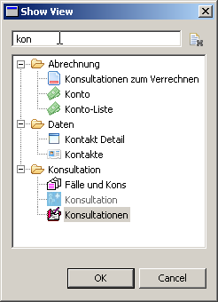 [fig:cust1]
0.5
Diese Dialogbox zeigt Ihnen sämtliche Views, die in Ihrer Elexis-Installation vorhanden sind (Welche und wieviele das sind, hängt von den installierten Plugins ab). Wenn Sie in der obersten Zeile den Anfang der gesuchten View zu tippen beginnen, wird die Liste automatisch gefiltert.
Wenn Sie den Namen der gesuchten View nicht wissen, können Sie hier natürlich auch einfach alle Views durchblättern.
Schritt 2: Die Ansichten an die gewünschte Stelle schieben und auf die gewünschte Grösse bringen:
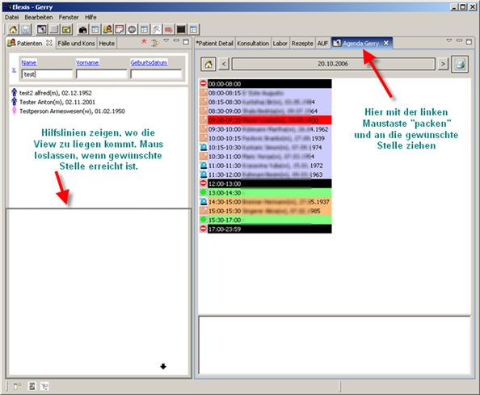
image
image
Schritt 3:Perspektive speichern
Wenn Sie möchten, dass Ihre so erstellte Perspektive auch bei späteren Programmstarts oder auf anderen Computern zur Verfügung steht, haben Sie mehrere Möglichkeiten:
- Wählen Sie im Menu Fenster – Perspektive – als Startperspektive speichern. Damit legen Sie fest, dass die eben zusammengestellte Perspektive fortan beim Anmelden erscheint.
- Fenster – Perspektive – speichern als…. Damit können Sie die aktuelle Perspektive unter einem frei wählbaren Namen abspeichern. Sie können sie zu einem späteren Zeitpunkt jederzeit mit Fenster – Perspektive – andere… mit diesem Namen wieder zurückholen.
- Fenster – Perspektive – speichern. In diesem Fall wird die aktuelle Perspektive unter ihrem bestehenden namen gespeichert.
- Und, last but not least, Wenn Sie unter Datei – Einstellungen – Anwender die Perspektive unter einem bestimmten Namen speichern, dann können Sie sie auch von einer anderen Arbeitsstation aus unter diesem Namen einlesen4. Diese Option eignet sich, um einheitliche Arbeitsumgebungen zuammenzustellen.
Oder: Perspektive zurücksetzen
Falls Ihnen die gemachten Änderungen doch nicht zusagen, oder wenn Sie beispielsweise versehntlich eine View geschlossen haben, können Sie ganz einfach zur gespeicherten Vesion der aktuellen Perspektive zurückkehren: Wählen Sie im Menu Fenster – Perspektive – Wiederherstellen. Dies geht natürlich nur, solange Sie Ihre Änderungen nicht gespeichert haben (Schritt 3).
Konzepte
Kontakte
[kontakt] In Elexis ist jede Person oder Firma, die in irgendeiner Beziehung zur Praxis steht, zunächst mal ein Kontakt. Kontakte werden in der Kontakt-Perspektive eingegeben oder geändert.
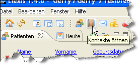
image
Es gibt folgende Typen von Kontakten:
- Person
- Mandant
- Anwender
- Patient
- Andere
- Organisation
- Labor
- Andere
Anwender und Mandanten
Jemand, der eine Rechnungsstelle (in der Schweiz z.B. eine eigene ZSR-Nummer) hat, ist ein Mandant. Jeder Vorgang in Elexis (Konsultation, Labor, Rezept etc.) läuft immer unter Verantwortung und auf Rechnung genau eines Mandanten. Jemand, der das Programm bedienen darf, ist ein Anwender. Ein Anwender arbeitet immer im Auftrag eines bestimmten Mandanten. Zu jedem Zeitpunkt gibt es in Elexis also einen aktuellen Mandanten und einen aktuellen Anwender. Mandant und Anwender können auch identisch sein (Wenn der Mandant selbst am PC arbeitet). Ein Anwender kann auch die Mandantenzuordnung ändern (Wenn eine MPA in einer Gruppenpraxis beispielsweise für unterschiedliche Mandantinnen arbeitet). Anwender haben bestimmte, individuell einstellbare Rechte, mit denen man sehr fein steuern kann, wer welche Aktionen innerhalb von Elexis steuern kann. Anwender können auch in Gruppen zusammengefasst sein, die bestimmte gemeinsame Rechte definieren (z.B. Gruppen MPAs oder Ärzte). Eine spezielle Gruppe ist die Gruppe Admin: Wer zu dieser Gruppe gehört, hat automatisch alle Rechte. Wichtig: Auch wenn Ihnen das zunächst unlogisch erscheinen mag: Auch der Chef sollte normalerweise nicht als Admin arbeiten. Der Grund ist, dass der Admin-Account auch irreversible Löschungen und andere sehr unangenehme Veränderungen erlaubt. Wie schnell hat man in der Hektik des Alltags mal einen falschen Knopf geklickt! Deswegen: Arbeiten Sie im Alltag mit einem Account, der genau diejenigen Rechte hat, die Sie auch im Alltag brauchen. Erstellen Sie für sich einen zweiten Account, welcher der Gruppe Admin zugeordnet ist, und melden Sie sich nur dann unter diesem Account an, wenn es wirklich notwendig ist. Das Konzept der Gruppen und Rechte ist ab Seite ff. genauer erklärt.
Konsultationen, Fälle, Garanten und Kostenträger
Jeder in Elexis festgehaltene Kontakt zwischen Praxispersonal und Patient ist eine Konsultation. Wenn die Konsultation verrechnet wird, dann geht die Verrechnung zugunsten desjenigen Mandanten, für welchen der eingeloggte Anwender tätig war. [definition:fall] Jede Konsultation ist auch einem Fall zugeordnet. Ein Fall ist hier eher eine versicherungstechnische, als eine medizinische Einheit: Der Fall sammelt alle Konsultationen, welche mit demselben Abrechnungssystem (s. [settings:abrechnungssystem] auf S. ) abgerechnet werden. Dies kann manchmal identisch mit dem medizinischen Fallbegriff sein (Ein Unfall, welcher über einen bestimmten Versicherer mit einer bestimmten Fallnummer abgerechnet wird), oder er kann auch keinen Zusammenhang mit einem medizinischen Fall haben (z.B. wird in der Schweiz im Allgemeinen ein allgemeiner Fall Krankheit erstellt werden, der alle KVG-Konsultationen sammelt). Ein Fall kann immer nur einen Patienten und ein Abrechnungssystem haben, kann aber durchaus Konsultationen mehrerer Mandanten beinhalten. (Es wird dann für jeden Mandanten eine separate Rechnung erstellt).
Sticker
[Etiketten] Patienten, Konsultationen und andere Datenbankinhalte können mit ‘Stickern’ markiert werden. Ein Sticker ist ein im Prinzip beliebiges Merkmal, das mit dem entsprechenden Datenbankobjekt verknüpft wird. Beispielsweise könnte ein Patient mit den Stickern ‘Hausarztmodell’, ‘MRSA’ oder anderen markiert werden. Ein solcher Sticker wird beim Aufruf des entsprechenden Obekts mit angezeigt. Sticker werden unter Datei-Einstellungen-Sticker definiert (S. Abb. [fig:etiketten1]). Es können beliebig viele Sticker definiert werden. Um einen neuen Sticker anzulegen, schreiben Sie den Text für den Sticker ins obere Feld und klicken dann auf ‘Neuer Sticker’. Der eben angelegte Sticker erscheint dann mit Standardwerten in der Liste. Markieren Sie ihn und geben Sie je nach Wunsch ein Bild (Format JPG oder PNG, 16×16 Pixel), eine Textfarbe und eine Hintergrundfarbe ein. Die Bedeutung des ‘Werts’ sehen Sie weiter unten. 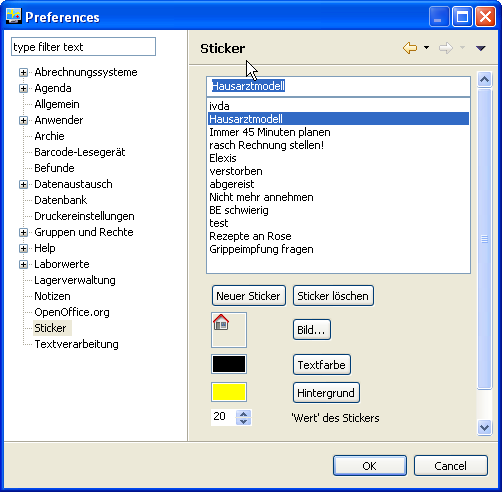 [fig:etiketten1] So erstellte Sticker können einem Patienten durch Rechtsklick in der Patientenliste und Auswahl von ‘Sticker…’ zugeordnet werden. Jeder Patient kann null bis beliebig viele Sticker erhalten. In der Patientenliste wird nun der entsprechende Eintrag mit dem dem Sticker zugeordenen Bild, Vordergrund- und Hintergrundfarbe angezeigt (Abb. [fig:etiketten2]). 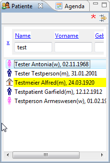 [fig:etiketten2] Hier sieht man nun auch denn Sinn des ‘Wert’-Attributs eines Stickers: Wenn ein Patient mehrere Sticker zugeordnet hat, dann wird in der Patientenliste immer diejenige mit dem höchsten ‘Wert’ angezeigt. Was für Zahlen Sie da konkret einsetzen, ist egal. Die abolute Grösse spielt keine Rolle, nur das Verhältnis zueinander. Wenn Sie einen Konsulaltionseintrag öffnen, sehen Sie alle zugeordneten Sticker. 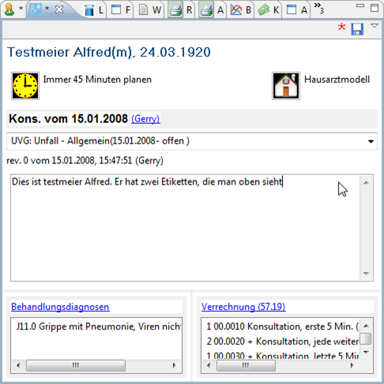 [fig:etiketten3]
Leistungsabrechnung
[concept:leistung] l 7.5cm 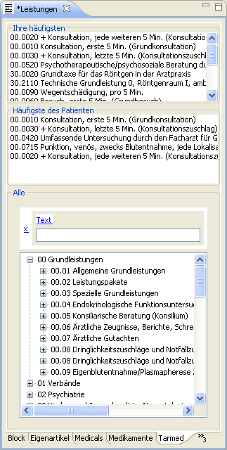 [fig:leistungen] Die Leistungscodes, die verrechnet werden können, werden einerseits von Plugins beigesteuert (z.B. Elexis-Arzttarife-Schweiz), andererseits durch von Ihnen selbst definierte Leistungsblöcke (s. weiter unten). Alle im System vorhandenen Leistungscodesysteme sind im Fenster Leistungen (Abb. [fig:leistungen]) untergebracht: Am unteren Rand des Fensters sehen Sie für jedes installierte Leistungscodesystem einen Reiter. Dieses Fenster erscheint jeweils dann, wenn Sie vom Konsultationsfenster aus Verrechnung anklicken. Der Aufbau ist für jedes Leistungscodesystem gleich: Im obersten Teilfenster stehen die von Ihnen am häufigsten angewendeten Codes dieses Leistungssystems, sind dadurch also im raschen Zugriff ohne suchen. Die Liste wird laufend aktualisiert, und je häufiger Sie einen bestimmten Code verwenden, desto weiter oben erscheint er beim nächsten Öffnen des Fensters. Im mittleren Teil erscheinen die bei diesem Patienten bisher am häufigsten verwendeten Codes, welche nach demselben Prinzip sortiert sind. Im untersten Teilfenster schliesslich steht das gesamte Leistungscodesystem in der vorgegebenen Systematik zur Verfügung. Um einen Code zu verrechnen, können Sie ihn aus irgendeinem der drei Abschnitte ins Verrechnung-Fenster ziehen, oder auch per Doppelklick anwählen. Manche Plugins können auch einen Optifier(Optimizer/Verifier) beinhalten, welcher Fehler erkennt bzw. Korrekturen anbringen kann. So wird etwa das Tarmed-Plugin einerseits z.B. die doppelte Verrechnung des Codes 00.0010 Konsultation erste 5 Minuten mit einer Fehlermeldung verweigern (Verifier), und andererseits wird es, wenn Sie den Code 00.0030 Konsultation letzte 5 Minuten abrechnen, automatisch auch den Code 00. 0010 dazunehmen, da 00.0030 ja immer mit 00.0010 kombiniert wird (Optimizer). Bei Artikeln, welche bei Direktabgabe auch von diesem Fenster aus verrechnet werden können, wird bei Verrechnung jeweils automatisch auch der Lagerbestand entsprechend nachgeführt.
Leistungsblöcke und Eigenleistungen
r
6cm
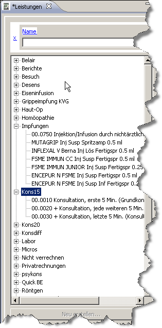 [fig:bloecke]
Als weitere Arbeitserleichterung erlaubt Elexis auch, mehrere Leistungscodes, auch aus ganz unterschiedlichen Codesystemen, zu Blöcken zusammenzufassen, die dann komplett oder teilweise verrechnet werden können. Solche Blöcke können nebst vordefinierten Leistungscodes aller installierten Codesysteme auch selbstdefinierte Elemente enthalten. In Abb. [fig:bloecke] sehen Sie einige Beispiele: kons15 ist ein Beispiel für einen Block, der üblicherweise als Ganzes verrechnet wird. Dies kann man machen, indem man den Block mit der Maus ins Verrechnungs-Fenster der Konsultation zieht. Oder, falls Sie lieber mit der Tastatur arbeiten, tippt man im Konsultationstext den Namen des Blocks, gefolgt von der Makroauslösetaste (standardmässig #). Die Eingabe von kons15# im Konsultationstext würde also in unserem Beispiel eine 15-minütige Tarmed-Konsultation verrechnen. Impfungen wäre ein Beispiel für einen Block, der eher als Zusammenfassung ähnlicher Elemente (als Zeitersparnis beim Heraussuchen) gedacht ist, welche
meist einzeln verrechnet werden. Hier zieht man einfach die einzelnen Unterelemente aus dem Block ins Verrechnungs-Fenster.
Um einen neuen Block zu erstellen, gibt man einen (frei wählbaren, aber eindeutigen) Namen für diesen Block ein und klickt anschliessend auf Neu erstellen…. Das Hinzufügen von Leistungen zum Block geschieht dann im Fenster Codes (s. Abb. [fig:bloecke2]). [htp] 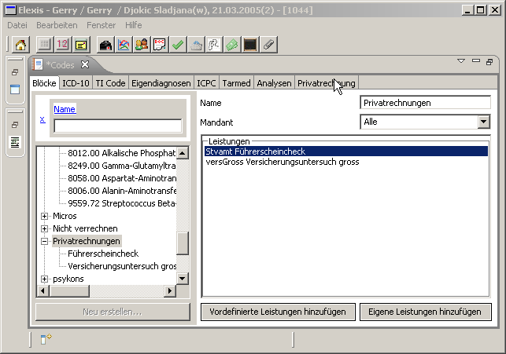 [fig:bloecke2] Sie können entweder vordefinierte Leistungen aus einem der installierten Codesysteme durch drag&drop hinzufügen, oder Sie können auch eigene Leistungen definieren. Hier müssen Sie auch Kosten und Preis in Rappen/Cents, sowie die für die Leistung budgetierte Zeit in Minuten angeben.
Artikel und Lager
Alles was eingekauft, gelagert, abgegeben oder rezeptiert werden kann, ist ein Artikel. Artikel sind in Klassen organisiert, beispielsweise Medikament, oder MiGeL oder Büromaterial. Elexis kann jeden Artikel, den es kennt, als Lagerartikel aufnehmen. Ein Lagerartikel ist ein Artikel, dessen Bestand monitorisiert wird, und der bei Bedarf auch halbautomatisch nachbestellt werden kann. Weitere Informationen zu Artikeln und Lager finden Sie bei der Beschreibung der entsprechenden View (S. ff.)
Import von externen Daten
Elexis ist grundsätzlich in der Lage, Daten aus beliebigen Quellen zu importieren. Allerdings muss natürlich das Format dieser Daten bekannt oder in bestimmter Weise standardisiert sein. Datenimport wird deswegen meist von Importer-Plugins bewerkstelligt. Es gibt Importer für Telefunbuch-Daten, für Stammdaten anderer Praxisprogramme, für externe Labors, für Laborgeräte und für andere medizinische Geräte, die ihre Daten zu einem Computer transferieren können, für MiGeL, Medikamente, Tarmed und andere Datenbanken usw. Eine Aufstellung erhältlicher Plugins finden Sie im Menu ‘Plugins’ auf http://www.elexis.ch. Zusätzliche Importer können meist relativ einfach programmiert werden, verlangen Sie ggf. einen Kostenvoranschlag.
Importer befinden sich meist im lokalen Menü der View, die die entsprechenden Daten anzeigt (z.B. Tarmed-Importer oder Labor-Importer). Eine Klasse von Importern, die keiner bestimmten View zugeordnet sind, hängen sich auch im Datei-Datenimport-Menü ein. Hier öffnet sich ein Dialog wie in Abb. [fig:importdlg].
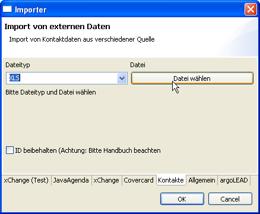
[fig:importdlg]
In den Reitern unten finden Sie alle installierten allgemeinen Importer. Welche das sind, hängt von den vorhandenen Plugins ab. Lediglich der in der Abbildung in den Vordergrund gebrachte ‘Kontakt-Importer’ ist immer vorhanden. Dieser Importer kann Kontakte aus externen Dateien importieren, sofern diese auf eine standardisierte Weise als Tabellen aufbereitet sind. Wählen Sie unter ‘Dateityp’, ob es sich um eine MicrosoftExcelTabelle (xls), um eine Character Separated Values-Tabelle (csv)oder um die Santésuisse-Tabelle der Versicherer und ihrer EAN-Codes handelt. Im Fall von xls muss die Datei eine Tabelle 0 mit folgenden Spalten enthalten:
- Spaltentitel & Erklärung
ID & eine (im Prinzip beliebige, innerhalb der Datei aber eindeutige) Identifikation
IstPerson & 1 wenn der Eintrag eine Person bezeichnet, 0 andernfalls (Organisation etc.)
IstPatient & 1 wenn der Eintrag einen Patienten bezeichnet, 0 andernfalls
Titel & Ein Titel, Anrede, Bezugsperson etc.
Bezeichnung1 & Bei Personen der Name
Bezeichnung2 & Bei Personen der Vorname
Zusatz &
Geburtsdatum & Im Format dd.mm.yyyy oder yyyy-mm-dd
Geschlecht & m oder f oder w oder ein Wort, das mit m oder f oder w anfängt.
E-Mail & die E-Mail-Adresse
Website & Eine WWW-Adresse
Telefon 1 & Primäres Telefon
Telefon 2 & weitere Nummer
Mobil & Mobiltelefon
Strasse & Strasse und Hausnr.
Plz & PLZ entweder als 1224 oder CH-1224 geschrieben. Muss im Eingabefile als Text formatiert sein
Ort &
Postadresse & Adresse, wie sie auf Adressetiketten erscheinen soll. Zeilensprünge als \backslashn
EAN & Die EAN als EAN13
Die erste Zeile der Tabelle muss die Spaltentitel genau in obiger Schreibweise enthalten, damit das Format erkannt werden kann. Jede der genannten Spalten muss vorhanden sein, darf aber leer sein. Die Datei muss als iso-8859-1 codiert sein (Das ist Standard unter Windows; bei der MAc-Version von Excel müsste die Exportcodierung ev. entsprechend angepasst werden). Wenn Sie den Dateityp festgelegt haben, Klicken Sie auf den Button ‘Datei wählen’ und suchen die entsprechende Importdatei auf. Setzen Sie ein Häkchen bei ‘ID beibehalten’ nur dann, wenn
- Jeder Datensatz im Feld ID eine ID hat
- Diese ID garantiert eindeutig ist, also mit keinem anderen Kontakt in Elexis kollidieren kann
- Sie diese ID unbedingt beibehalten wollen
Wenn Sie das Häkchen nicht setzen, was in den meisten Fällen empfohlen ist, dann wird Elexis beim Import für jeden Kontakt eine eigene eindeutige ID erstellen (genauso, als würde man den Kontakt manuell neu anlegen).
Klicken Sie dann OK, um den Import zu starten.
Mehrere Instanzen gleichzeitig
Sie können Elexis problemlos mehrfach starten und dann in verschiedenen Fenstern unterschiedliche Perspektiven oder verschiedene Patienten anzeigen. Einzelne Elemente können auch mit Cut&Paste zwischen den laufenden Instanzen ausgetauscht werden. Anwendungsbeispiele:
- Sie arbeiten an einem Patienteneintrag und es kommt ein Telefon betreffend eines anderen Patienten. Anstatt Ihre Arbeit zu verlassen, bringen Sie die zweite Elexis-Instanz in den Vordergrund und suchen dort den neuen Patienten auf.
- Die MPA möchte an ihrem Arbeitsplatz Agenda und Patientendaten gleichzeitig im Blick haben. Spendieren Sie ihr einen zweiten Monitor (statt eines zweiten PC’s), schliessen Sie beide Monitore an einer DualHead-fähigen Grafikkarte am selben PC an und schieben Sie in jeden Monitor eine eigene Instanz von Elexis.
- Während Elexis mit einem langwierigen Rechnungsdruck beschäftigt ist, möchten Sie nicht untätig herumsitzen. Kein Problem, starten Sie eine zweite Instanz von Elexis und arbeiten Sie dort weiter. (Sie könnten natürlich auch einen Kaffee trinken oder einen Spaziergang machen).
- Sie erstellen einen Brief, möchten aber einzelne Stellen aus einem anderen Brief herüberkopieren. Laden Sie in der einen Elexis-Instanz den alten Brief, erstellen Sie in der anderen den neuen Brief und kopieren Sie das gewünschte mit Cut&Paste.
Plugins
Dieses Konzept wird auf Seite genauer besprochen. Hier nur soviel: Elexis ist nach allen Seiten frei erweiterbar. Es gibt nicht nur eine vorgegebene Zahl von Modulen, sondern tatsächlich können jederzeit auch von Dritten neue Funktionen programmiert werden, von denen zum Zeitpunkt des Programmreleases noch gar nichts bekannt war. Dies geschieht in Form von sogenannten Plugins. Plugins können beispielsweise für Statistik, Buchhaltung, Import von Labordaten, Anbindung von Apparaten, Export von KG-Daten, neue Abrechnungssysteme, neue Diagnosesysteme usw. programmiert werden. Ein Elexis-Plugin ist also einfach ein Programm mit im Prinzip beliebigen Fähigkeiten, welches die Eigenschaft hat, mit Elexis zusammenarbeiten zu können. Es kann weder in diesem Handbuch noch sonstwo eine abschliessende Aufzählung aller Plugins geben, weil niemand wissen kann, welche Plugins von unabhängigen Anwendern bei unabhängigen Programmierern in Auftrag gegeben worden sind. Eine Auflistung zumindest der uns bekannten Plugins finden Sie jeweils auf http://www.elexis.ch
Menü und Toolbar
Menü
Das Menü ist – wie die meisten Elemente in Elexis- nicht fix vorgegeben. Plugins können eigene Menübefehle oder ganze Untermenüs hinzufügen. Das Folgende beschreibt deswegen nur diejenigen Menüpunkte, die in der Elexis-Basisinstallation vorhanden sind.
Datei – Benutzer: Sich als andere/n Anwender/in anmelden. Es öffnet sich eine Dialogbox, in der man Anwendernamen und Passwort eingeben kann. Wenn man Abbrechenklickt, dann wird man lediglich abgemeldet, es ist also kein Anwender mehr angemeldet. Da Elexis die meisten Aktionen mit dem Namen eines Anwenders verknüpft, und da auch die Benutzerrechte vom eingeloggten Anwender abhängen, empfiehlt es sich, für jeden Anwender auch tatsächlich einen eigenen Account einzurichten.
Datei – Mandant: Einen anderen Mandanten aktivieren. Hierbei bleibt der aktuelle Anwender bzw. die aktuelle Anwenderin unverändert, aber er/sie arbeitet für einen anderen Mandanten. Dies bedeutet unter anderem, dass die Abrechnung der verrechneten Leistungen und die letzendliche medizinische Verantwortung dafür auf diesen Mandanten geht. Es ist also wesentlich, dass etwa in Gruppenpraxen immer der richtige Mandant angemeldet ist. Elexis zeigt in der Titelzeile jeweils den aktuellen Anwendernamen und den aktuellen Mandantennamen an.
Datei – Verbindung: Die Verbindung zur Datenbank herstellen bzw. Ändern. Dies wird eigentlich nur beim Einrichten des Programms benötigt und kann dort nachgelesen werden.
Datei – Einstellungen: Zentrale Konfiguration. Dies ist unter Konfiguration (s. S. ff) näher beschrieben.
Datei – Datenimport: Hier können Fremddaten verschiedener Art importiert werden (Kontaktdaten, Daten anderer Praxisprogramm etc.). Die hier zur Verfügung stehenden Optionen hängen ganz von den installierten Import-Plugins ab.
Datei – Beenden: Dieser Menüpunkt sollte selbsterklärend sein.
Das Menü Bearbeiten ist ähnlich wie bei anderen Programmen für die Bedienung der Zwischenablage vorgesehen
Fenster – Perspektiven fixieren: Dies dient dazu, die aktuelle Perspektive vor versehentlichen Änderungen zu schützen. Solange vor diesem Menüpunkt ein Häkchen ist, können wesentliche Views nicht geschlossen werden.
Fenster – Perspektive – Perspektive speichern: Hiermit speichern Sie die aktuelle View-Anordnung unter demselben Perspektivennamen, den sie vorher hatte.
Fenster – Perspektive – Perspektive speichern als…: Hier können Sie die aktuelle View-Anordnung unter einem neuen Perspektivennamen speichern.
Fenster – Perspektive – Perspektive zurücksetzen: Damit wird die aktuelle Perspektive auf diejenige View-Anordnung zurückgesetzt, die sie beim letzten Speichern hatte. Macht also alle aktuellen Änderungen rückgängig.
Fenster – Perspektive – Als Startperspektive speichern: Die aktuelle Perspektive zur Startperspektive für den aktuellen Anwender erklären. Damit wird nach dem Einloggen des aktuellen Anwenders jeweils diese Perspektive eingestellt.
Fenster – Perspektive – Andere: Hier erscheint eine Dialogbox, mit der Sie alle im System vorhandenen Perspektiven erreichen können. Sie können die Liste durchblättern, oder im Textfeld den Namen der gesuchten Perspektive eintippen.
Fenster – Ansicht: In diesem Menu sind zunächst einige Sichten (Views) aufgelistet, die standardmässig zur aktuellen Perspektiven gehören. Anklicken eines Titels öffnet die betreffende Sicht.
Fenster – Ansicht – Andere: Es erscheint eine Dialogbox, mit der Sie alle im System vorhandenen Sichten/Views, gruppiert nach Themen, erreichen können. Sie können die Liste durchblättern, oder den Namen der gewünschten View soweit bekannt im Textfeld eintippen.
Toolbar
Die Toolbar (bzw. Werkzeugleiste) unterhalb des Menüs ist ebenfalls von Plugins oder durch Ihre persönlichen Einstellungen konfigurierbar. Sie stellt standardmässig Funktionen zum Aufruf von Perspektiven (s. S. [perspektiven]) und zum Drucken von Etiketten bereit. Fahren Sie einfach mit der Maus über einen Knopf und warten Sie einen Moment, dann wird die Funktion des betreffenden Knopfs als Text angezeigt.
Views des Kernsystems
Einleitung
Views (Ansichten) sind die zentralen Anzeige- und Bedienungselemente in Elexis. Eine View zeigt eine bestimmte Art von Daten in einer bestimmten Weise an und kann definierte Bearbeitungen dieser Daten ermöglichen. Diese Views können Sie je nach Bedürfnissen und Arbeitsgewohnheiten selbst zu sogenannten Perspektiven zusammenstellen und abspeichern. Man auch an verschiedenen Arbeitsplätzen verschiedene Perspektiven einrichten, da ja beispielsweise am Empfang, im Labor und im Arztzimmer unterschiedliche Arbeiten im Vordergrund stehen. Im Gegensatz zu anderen Praxisprogrammen wird bei Elexis die Benutzeroberfläche also nicht vom Hersteller, sondern vom Anwender des Programms definiert. In diesem Kapitel werden diejenigen Views beschrieben, die im Grundsystem von Elexis eingeschlossen sind. Eine solche Aufzählung kann nie abschliessend sein, da (von uns oder anderen) neu entwickelte Plugins jederzeit eigene Views mitbringen können. Diese müssten dann in der Dokumentation des betreffenden Plugins beschrieben sein.
Öffnen und Schliessen einer View
Alle im System vorhandenen Views (auch die, die von externen Plugins mitgebracht werden) sind unter dem Menüpunkt Fenster-Ansicht erreichbar. In diesem Menü finden sich manchmal einige Views, die für die aktuelle Perspektive zusammengestellt wurden, sowie immer ein Menüpunkt Andere… resp. Other…. Hier ist eine nach Themen gruppierte Liste aller Views zu finden (s. Abb. [fig:viewlist]). [htp] 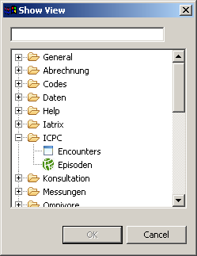 [fig:viewlist] Sie können entweder diese Liste durchblättern, oder Sie können den Namen der gesuchten View im Textfeld oben eintippen. Sobald Sie anfangen zu tippen, wird die Liste sofort auf die zu den getippten Buchstaben passenden Einträge gefiltert. Markieren Sie dann die gewünschte View und öffnen Sie sie entweder durch Doppelklick oder Klick auf OK. Um eine View zu schliessen genügt es, auf das X- Symbol im Karteireiter der betreffenden View zu klicken.
Öffnen und Speichern einer Perspektive
[perspektiven] Eine Perspektive ist wie oben gesagt eine benannte Zusammenstellung von Views. Elexis bringt einige vordefinierte Perspektiven mit, welche über die Startleiste resp. die Toolbar aufgerufen werden können. (Vgl auch Abb. [fig:toolbar]). Eine Perspektive hat als Startperspektive eine spezielle Bedeutung: Diese Perspektive wird immer automatisch nach dem Einloggen des entsprechenden Anwenders auf dem betreffenden Arbeitsplatz eingestellt, sowie nach Klick auf das ‘Home’-Symbol (der Button ganz links auf der Toolbar). Alle anderen (beliebig viele) Perspektiven können unter einem frei wählbaren Namen abgespeichert und wieder aufgerufen werden. Perspektiven sind Arbeitsplatz-Spezifisch (Eine auf einem Arbeitsplatz eingestellte Perspektive steht also nicht automatisch auf anderen Arbeitsplätzen zur Verfügung)6.
- Um die aktuell eingestellte View-Anordnung als Startperspektive zu speichern, wählen Sie den Menüpunkt Fenster – Perspektive – als Startperspektive speichern.
- Um die aktuelle Perspektive neu (z.B. mit veränderter Viewanordnung oder -Grösse) zu speichern, wählen Sie das Menü Fenster – Perspektive – Speichere Perspektive.
- Um die aktuelle View-Anordnung unter einem eigenen Perspektivennamen zu speichern, wählen Sie das Menü Fenster – Perspektive – Speichere Perspektive als…
- Um die aktuelle Perspektive wiederherzustellen (falls Ihnen die gemachten Veränderungen nicht zusagen, oder falls Sie versehentlich Views geschlossen haben), wählen Sie Fenster – Perspektive – Wiederherstellen
- Um zur Startperspektive zurückzukehren, klicken Sie auf das Haus-Symbol ganz links in der Toolbar
- Um eine früher gespeicherte Perspektive aufzurufen, wählen Sie Fenster – Perspektive – Andere und wählen die gewünschte Perspektive aus der Liste aus.
Stammdaten-Views
Patienten
Die Patientenliste dient sowohl der Anzeige existierender Patienteneinträge, als auch dem Erfassen neuer Einträge. Die Liste zeigt all diejenigen Kontakte an, die als Patient markiert sind. [ht] 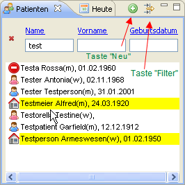 [fig:patlist] Die Eingabefelder oben (Name, Vorname, Geburtsdatum) dienen dem Begrenzen der Liste gemäss den gewünschten Parametern.
- Bei Name und Vorname gilt:
- Wenn Sie mindestens zwei Buchstaben eingeben, erscheinen in der Liste nur noch diejenigen Einträge, die mit diesen Buchstaben beginnen.
- Wenn Sie das Zeichen % und mindestens zwei weitere Buchstaben eingeben, dann erscheinen in der Liste diejenigen Einträge, die diese Zeichenfolge enthalten.
- Beim Geburtsdatum gilt:
- Wenn Sie mindestens 3 aufeinanderfolgende Ziffern eingeben, dann wird die Zahl als Jahreszahl interpretiert und es werden diejenigen Patienten ausgewählt, die das entsprechende Geburtsjahr haben.
- Wenn Sie zwei Ziffern, gefolgt von einem Punkt und ggf. weitere 2 Ziffern eingeben, dann werden diejenigen Patienten angezeigt, die den entsprechenden Geburtstag und ggf. Geburtsmonat haben. Beachten Sie bitte, dass Sie Tag und Monat zweistellig eingeben müssen, also z.B. 04.05. und nicht etwa 4.5.
Wenn keine Einträge existieren, die den eingegebenen Filterbedingungen entsprechen, dann wird in der Liste angezeigt: keine Daten. Sie können per Voreinstellungen die angezeigten Filterfelder beeinflussen (S. [userconfig] auf S. ).
Markierungen / Sticker
Sie können die Anzeige der Patienteneinträge anhand bestimmter Kriterien beeinflussen. Diese Technik nennen wir hier ‘Sticker’. Jeder Patient kann null bis mehrere Sticker haben, die dann sowohl in der Patientenliste als auch im Konsultationseintrag angezeigt werden können. Genauere Angaben dazu finden Sie unter [Etiketten] auf S. ;
Toolbar
Mit der Taste Neu (s. Abb. [fig:patlist]) können Sie einen neuen Patienten erfassen. Klick auf diesen Knopf öffnet die Patienteneingabe-Dialogbox. Diejenigen Felder, die Sie bereits eingegeben haben, sind vorgegeben, die anderen können Sie soweit eingeben, wie sie im Moment bekannt sind. Mit Klick auf OKwird der neue Patienteneintrag angelegt. Bei Klick auf Abbrechenwerden die eingegebenen Daten verworfen und es wird kein neuer Eintrag erstellt. Falls ein neuer Eintrag erstellt werden soll, und bereits ein Eintrag mit gleichen Daten existiert, dann erfolgt eine Rückfrage.
Mit der Taste Filter (s. Abb. [fig:patlist]) öffnen und Schliessen Sie eine Filterbox, in der Sie bestimmte Kriterien eingeben können, nach denen die Liste gefiltert wird.(s. Abb. [fig:patlistfilter]).
[ht]
0.5
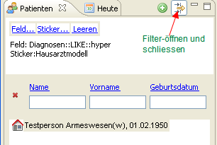 [fig:patlistfilter]
0.5
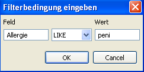 [fig:filterexpr]
Sie können den Filter auf verschiedene Weise beeinflussen:
- Nach Klick auf ‘Feld…’ öffnet sich eine Dialogbox wie in Abb. [fig:filterexpr]. Sie können hier beliebige Datenbankfelder abfragen. Hierbei bedeutet ‘=’: Der Ausdruck muss genau so sein, inklusive Gross/Kleinschrift. ‘LIKE’: Der Ausdruck muss so anfangen, Gross/Klein ist egal. ’REGEXP: Der Ausdruck soll als regulärer Ausdruck interpretiert werden. Eine Erläuterung dieses Konzepts würde hier aber zu weit führen.
- Nach Klick auf ‘Sticker’ öffnet sich eine Dialogbox, die alle im System definierten Sticker enthält. Sie können ein oder durch mehrfachen Aufruf auch mehrere auswählen.
- Sie können ein Script aus der Script-View (s. [Script] auf S. ins Filterfeld hineinziehen, welches beliebige Bedingungen errechnen kann.
Die Filterbedingungen werden strikt von oben nach unten abgearbeitet. Also der als zweites eingegebene Filterausdruck wird überhaupt nur dann ausgewertet, wenn der erste passiert wurde. Es ist deswegen sinnvoll, weniger rechenintensive Filter (z.B. Sticker) oben und rechenintensivere (z.B. Scripts) weiter unten einzusetzen. Klicken Sie dann auf einen der Spaltenköpfe oder auf das ‘x’, um die Liste neu – diesmal beeinflusst durch den Filter- einzulesen. Um eine Filterbedingung wieder zu entfernen können Sie sie rechts anklicken und ‘entfernen’ klicken. Um alle zu entfernen, klicken Sie auf ‘leeren’. Um den Filter nur temporär ausziuschalten, ohne ohn zu leeren, schliessen Sie ihn durch Klick auf den Filter-Knopf.
Kontextmenü
Das Kontextmenü erscheint, wenn Sie auf einem Patienteneintrag mit der rechten Maustaste klicken. Es enthält folgende Einträge:
- Sticker… Sie können dem Patienten so einen Sticker (S. [Etiketten]) zuweisen oder entfernen.
- Patient löschen (s. oben)7
- KG exportieren. Falls ein Export-Plugin installiert ist, wird die KG des aktuell markierten Patienten über dieses Plugin exportiert. Falls mehrere Export-Plugins definiert sind, erscheint zunächst eine Dialogbox, mit der sie das gewünschte Ziel bzw. Format auswählen können.8
Patient-Detail
Diese View (Abb. [fig:patdetail] zeigt Details des momentan ausgewählten Patienten resp. der momentan ausgewählten Patientin an [t] 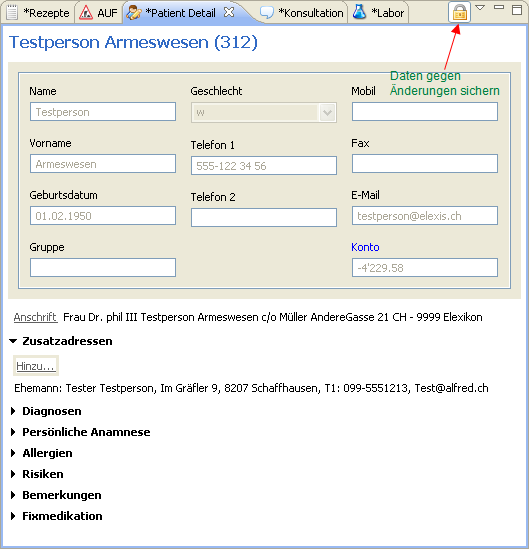 [fig:patdetail] Sie sehen, dass die einzelnen Einträge grau erscheinen und nicht geändert werden können . Wenn Sie auf das Schloss-Symbol rechts oben klicken, können Sie die View entsperren (sofern Sie die entsprechenden Rechte besitzen). Dann können alle Felder können durch einfaches Überschreiben geändert werden. Eine Änderung wird in dem Moment gespeichert, in dem ein Feld wieder verlassen wird. (Explizites Speichern ist in Elexis nie notwendig). Bei erneutem Klick auf das Schloss, oder bei Auswahl eines anderen Patienten, wird die Sicherung gegen versehentliches Überschreiben wieder eingeschaltet. Die Felder im oberen Block sind alle einzeilige Textfelder und können direkt geändert werden, bis auf das Feld Konto, welches nicht direkt beschreibbar ist. Dieses Feld stellt den Saldo aller Forderungen an diesen bzw. Zahlungen von diesem Patienten dar. Wenn der aktuell eingeloggte Anwender Verrechnungs-Rechte besitzt, kann er den blauen Text Konto anklicken, dann öffnet sich ein Dialog, in dem einzelne Buchungen eingegeben werden können. Achtung: Normalerweise erfolgen Buchungen automatisch durch Erstellen von Rechnungen und Einlesen von ESR-Files. Manuelle Buchungen können zu Inkonsistenzen in der Buchhaltung führen. Führen Sie also nur dann manuelle Buchungen durch, wenn Sie sich über die Konsequenzen exakt bewusst sind. Das Feld Anschrift zeigt die Postanschrift9 des Patienten an. Diese kann durch Klick auf den blauen Text Anschrift geändert werden. Die darunterstehenden Felder sind alle aufklappbar: Standardmässig ist nur der Titel sichtbar, durch Klick darauf öffnet sich das Feld.
- Das Feld Zusatzadressendient dazu, Kontakte, die in irgendeiner Beziehung zum Patienten stehen, zu erfassen. Beispielsweise Angehörige, Ämter, weitere Ärzte etc. Klick auf Hinzu öffnet eine Kontaktauswahl-Box, aus der die gewünschte Person oder Organisation ausgewählt werden kann. Danach erscheint eine Eingabebox, in der die Beziehung des eben ausgewählten Kontakts zum Patienten beschrieben werden kann.
Mit Rechtsklick auf einen Eintrag in diesem Feld öffnet sich ein Kontextmenü, mit dem man den vollständigen Eintrag anzeigen, oder den Eintrag entfernen kann.
- Die Felder Diagnose, Persönliche Anamnese, Allergien, Risiken und Bemerkungen können direkt beschrieben werden und werden wie gewohnt sofort beim Verlassen gespeichert.
- Das Feld Fixmedikationentspricht der View Fixmedikation.
Kontakte
Diese View (Abb. [fig:kontaktlist]) zeigt eine Liste aller in Elexis vorhandenen Kontakte an. Ein Kontakt ist jede Person oder jede Organisation, welche in irgendeiner Beziehung zu unserer Praxis steht. Das sind beispielsweise Patienten, Kollegen, Spitäler, Versicherungen, Labors, Lieferanten usw. [htp] 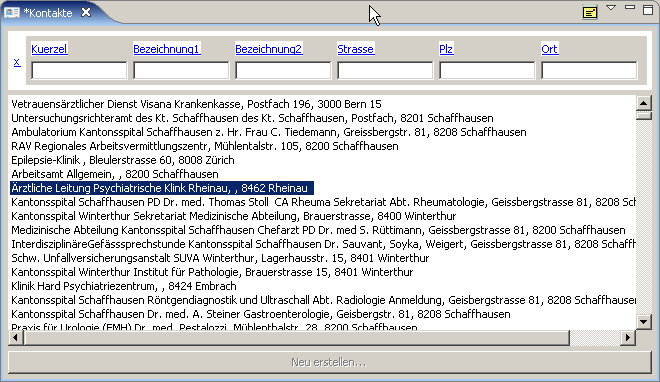 [fig:kontaktlist] Mit Klick auf das Briefumschlag-Symbol rechts oben können Sie eine Adressetikette für den betreffenden Kontakt ausdrucken.
Kontakt-Detail
Hier werden die Details zum aktuell ausgewählten Kontakt angezeigt und können geändert werden (Abb. [fig:kontaktdetail]). [htp] 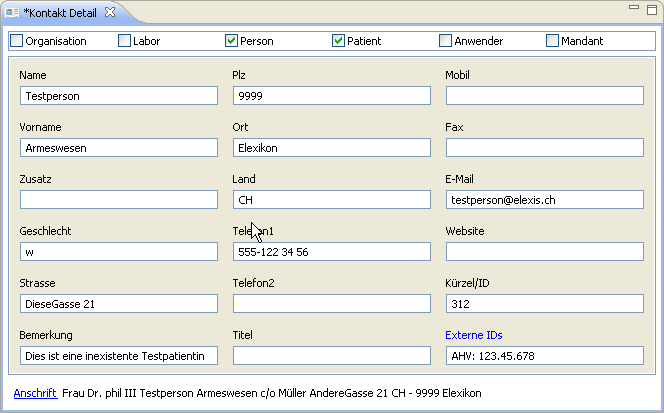 [fig:kontaktdetail] In den Checkboxen der obersten Zeile können Sie den Typ des betreffenden Kontakts festlegen. Beachten Sie, dass ein Kontakt auch mehrere Typen haben kann (Beispielsweise kann jemand Anwender und auch Patient sein). Hingegen kann ein Kontakt natürlich nur entweder eine Organisation oder aber eine Person sein. Achten Sie darauf, dies und bei Personen auch das Geschlecht (m oder w) korrekt zu erfassen, da Textformatvorlagen diese Informationen auswerten, um die korrekten Formulierungen auszuwählen. Das Feld ‘Kürzel/ID’ enthält bei Patienten die Patientennummer und sollte daher nicht geändert werden. Bei anderen Kontakten kann es sinnvoll sein, hier ein Kürzel zum schnellen auffinden einzusetzen. Beispielsweise könnten Ärzte mit der präfix ‘az’, gefolgt von der Spezialität gefolgt von den Initialen eingetragen werden, Krankenkassen mit der Präfix ‘kk’ etc. So wäre der Internist Dr. Erst Meier beispielsweise als azInnEM gespeichert, die Swica Schaffhausen als kkSwicaSH. Die EInträge müssen nicht eindeutig sein und man muss das auch nicht so zu machen; es hilft einem lediglich z.B. beim Briefe schreiben rascher den Adressaten zu finden etc. Das Feld ‘Externe ID’ dient dazu eine im Prinzip beliebig grosse Anzahl von extern vergebenen Identifikationen (XID) festzuhalten. Durch Klick auf das blaue ‘Externe ID’ öffnet sich ein Dialog in dem alle eingetragenen XID’s dargestellt werden. Im Kontaktdetail angezeigt wird immer der ‘beste’ d.h. ‘eindeutigste’ der zur Verfügung stehenden Identifikatoren. Beispiele für XID’s sind etwa EAN, BAG-Nummer, Sozialversicherungsnummer/AHV-Nummer etc. In der untersten Zeile steht die Postanschrift des betreffenden Kontakts. Dies ist die Adresse, wie sie beispielsweise im Adressfeld von Briefen oder Rechnungen oder auf Adressetiketten erscheinen soll. Mit Klick auf das blaue Wort Anschriftöffnet sich die Anschrifteingabe-Dialogbox (Abb. [fig:anschrift]), wo Sie beliebigen Text eingeben können. (Klick auf den Button Postanschrift erstellt eine Standard-Anschrift aus den vorhandenen Adressangaben) [htp] 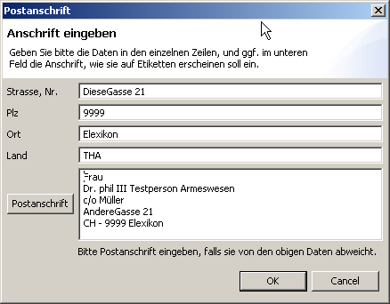 [fig:anschrift]
Artikel
[view:artikel] Ein Artikelist jedes Objekt, das auf Lager genommen und/oder abgegeben werden kann. Es gibt einerseits vordefinierte Artikel (z.B. die Liste aller zugelassenen Medikamente), andererseits auch Eigenartikel. Elexis kann den Lagerbestand von Lagerartikeln verwalten und halbautomatisch Bestellungen zur Neige gehender Artikel vornehmen.
Artikelliste
In Abb. [fig:artikel] ist eine Artikelauswahl-Liste und die Artikeldetaildarstellung nebeneinander zu sehen. [htp] 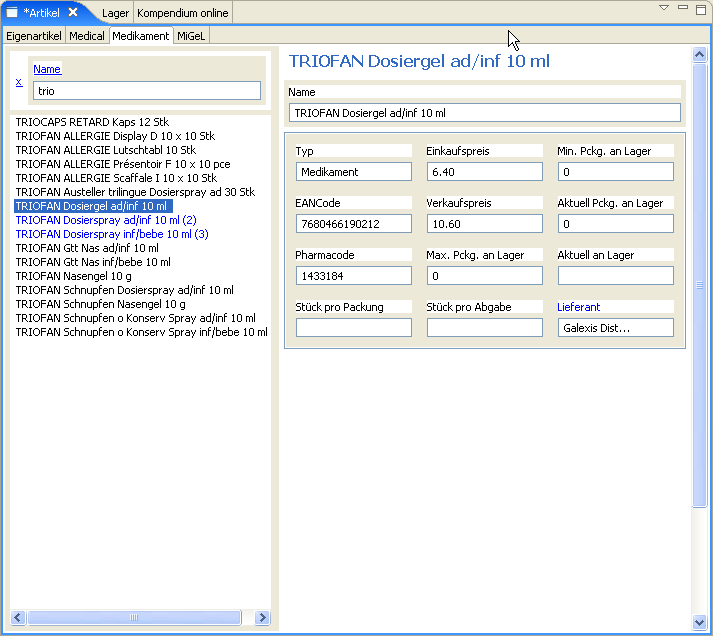 [fig:artikel] Die Liste links können Sie in gewohnter Weise filtern, indem Sie einige Buchstaben des gewünschten Artikelnamens eingeben. In der Detailansicht sehen Sie Einzelheiten zum gerade ausgewählten Artikel. (In Perspektiven, wo die Liste allein dargestellt ist, können Sie mit der rechten Maustaste und Bearbeiten zur Detailansicht gelangen.) Ein Artikel wird dadurch zum Lagerartikel, dass Sie ihm einen Mindestbestand grösser als Null zuweisen. Geben Sie ausserdem einen Höchstbestand höher als der Mindestbestand ein und weisen Sie dem Feld Istbestand den korrekten Wert zu. Elexis wird bei einer halbautomatischen Bestellung von jedem Artikel, dessen Istbestand unter dem Mindestbestand ist, soviele Exemplare bestellen, um auf den Höchstbestand zu kommen. Bei manchen Artikeltypen wird üblicherweise nicht eine ganze Verpackungseinheit auf einmal abgegeben, beispielsweise Ampullen. Hierfür sind die Felder Stück pro Packungund Stück pro Abgabevorgesehen. Angenommen ein Artikel wird in Packungen zu 10 Stück eingekauft, aber einzeln abgegeben. In diesem Fall können Sie bei Stück pro Abgabe eine 1 setzen, bei Stück pro Packung eine 10. Wenn dieser Artikel dann einem Patienten verrechnet wird, dann wird automatisch 1/10 des Verpackungs-Verkaufspreises berechnet und auch nur 1/10 einer Packung aus dem Lager ausgebucht. Die Angabe Aktuell an Lager meint dann die Zahl der einzelnen Artikel, während Aktuell Pck. an Lager für die Zahl der unangebrochenen Packungen steht.
Lager und Bestellung
Wie oben beschrieben, kann Elexis Ihr Warenlager halbautomatisch bewirtschaften. Wann immer Sie einem Patienten einen Artikel verrechnen, wird dieser Artikel automatisch aus dem Lagerbestand ausgebucht. Sobald der Bestand eines Lagerartikels unter den von Ihnen definierten Mindestbestand fällt, weiss Elexis, dass dieser Artikel nachbestellt werden muss. Nebst dieser automatischen Erkennung können Sie selbstverständlich Bestellungen auch manuell erstellen und/oder ändern. Diese Funktionen sind in der View Bestellung erreichbar (s. fig. [fig:bestellungen]). [htp] 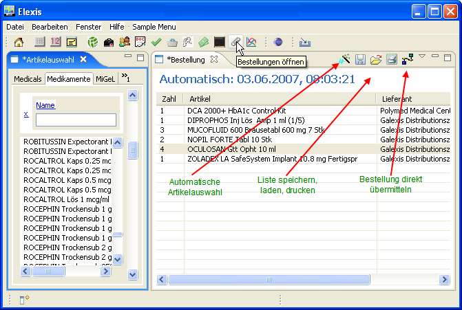 [fig:bestellungen] Links finden Sie die schon bekannten Artikelauswahlfenster für alle Artikelkategorien, für die Sie Plugins haben (Normalerweise Medikamente, Medicals, MiGeL und Eigenartikel). Rechts ist das Feld Bestellung, welches anfangs leer ist. Sie haben nun folgende Möglichkeiten:
- Mit Klick auf das Zauberstab-Symbol werden automatisch diejenigen Artikel der Bestellung zugefügt, von welchen weniger als der Mindestbestand an Lager ist. Es werden jeweils soviele bestellt, dass der für diesen Artikel definierte Höchstbestand erreicht wird.
- Sie können aus einem der Fenster links Artikel in die Bestellung herüberziehen.
- Sie können auf einen der Artikel in der Bestelliste mit der rechten Maustase klicken, und den Artikel aus der Liste entfernen oder die Zahl ändern.
- Sie können die Bestellung erst mal abspeichern und später weiterbearbeiten.
- Sie können eine früüher gespeicherte Bestellung wieder laden.
- Sie können die Bestellung ausdrucken. Dafür ist eine System-Textvorlage (s. S. ) namens Bestellung notwendig, welche an einer Stelle den Platzhalter [Bestellung] enthält (s. Abb. [fig:bestell2]).
- Last but not least können Sie, falls Sie ein entsprechendes Plugin für Ihren Lieferanten haben, die Bestellung direkt via Internet oder Modem absenden. Ein entsprechendes Plugin für Galexis ist bereits verfügbar, weitere werden entwickelt.
[hb] 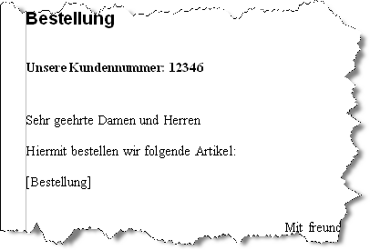
[fig:bestell2]
Konsultationsbezogene Views
Fälle
Diese View (Abb. [fig:faelle2] listet alle für den aktuell selektierten Patienten existierenden Fälle. l 6.8cm 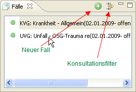 [fig:faelle2] Das Symbol links von der Fallbezeichnung gibt an, ob alle für die Verrechnung des Falles notwendigen Daten vorhanden sind: Wenn es grün ist, sollte die Rechnungserstellung möglich sein, wenn es rot ist, fehlen noch eine oder mehrere Angaben. Welche Angaben mindestens notwendig sind, hängt vom Abrechnungssystem ab. So ist für Fälle, die nach dem KVG abgerechnet werden, die Angabe eines Rechnungsempfängers, eines Versicherers und der Versichertennummer notwendig. Bei Fällen, die nach UVG abgerechnet werden, muss eine Fallnummer vorhanden sein. Bei Privatrechnungen wird mindestens ein Rechnungsempfänger anzugeben sein. [filter:fall] Klick auf das Filtersymbol in der Titelzeile der View führt dazu, dass nu noch diejenigen Konsultationen in der Konsultationsliste (siehe [view:konsultationen]) angezeigt werden, welche zum gerade ausgewählten Fall gehören. Wenn ein anderer Fall angeklickt wird, wird die Liste erneut gefiltert. Erneuter Klick auf das Filter-Symbol schaltet den Filter wieder aus. Rechtsklick auf einen Fall öffnet dessen Kontextmenü. Dieses enthält die folgenden Punkte:
Fall löschen
. Dies ist nur möglich, wenn Sie die dazu notwendigen Rechte haben, und wenn zu diesem Fall keine Konsultationen mehr existieren.
Fall bearbeiten
. Dies öffnet eine weitere View, in der Details zum aktuell ausgewählten Fall eingegeben werden können.
Fall wieder öffnen
. Damit kann man einen bereits geschlossenen10 Fall wieder öffnen.
Rechnung erstellen
. Hiermit lässt sich über alle unverrechneten Konsultationen des aktuellen Falls und des aktuellen Mandanten (je nach Berechtigung auch mehrere Mandanten) eine Rechnung erstellen. Dies ist eine Abkürzung des normalen Wegs der Rechnungserstellung und eignet sich vor allem für Sofortrechnungen einzelner Konsultationen oder Leistungen.
=5000
Fälle und Kons
l 7cm 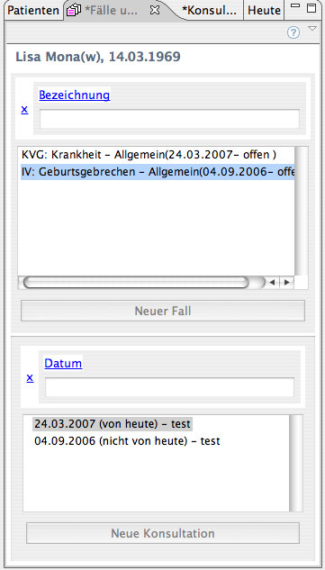 [fig:fallkons] Diese View (Abb. [fig:fallkons] listet synoptisch Fälle und dazugehörige Konsultationen (Nur Titel ohne Texte) auf. Wenn im oberen Bereich ein Fall angeklickt wird, werden im unteren Bereich die zu diesem Fall gehörenden Konsultationen angezeigt. Wenn eine Konsultation angeklickt wird, wird diese Konsultation in der Konsultation-View (S. [konsview] s. ) angezeigt. Um einen neuen Fall zu erstellen, geben Sie einen Titel für diesen Fall ein und klicken dann auf neuer Fall. Um eine neue Konsultation einzugeben, wählen Sie den dazugehörigen Fall aus und klicken auf Neue Konsultation Anmerkung: Sie werden festgestellt haben, dass diese View und die vorher besprochene Fälle-View bis zu einem gewissen Punkt redundant sind. Das ist auch so. Sie können getrennte Views für Fälle und Konsultationen bevorzugen, oder eine View in der beides enthalten ist. In der Regel werden Sie nicht beide Konzepte anwenden, sondern dasjenige, welches Ihnen besser gefällt – Elexis lässt Ihnen die Wahl.
Konsultationen
[view:konsultationen]
L
7.5cm
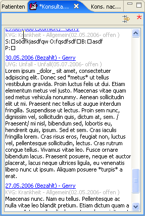 [fig:konslisteview]
Dies ist eine Auflistung aller bisherigen Konsultationen des aktuell selektierten Patienten, unabhängig vom jeweiligen Fall. Zu jeder Konsultation wird der Text ohne Formatierungen angezeigt. (S. Abb. [fig:konslisteview]).
Klick auf den (blauen) Titel einer Konsultation wählt diese Konsultation in der Konsultation-View (s. S. ) aus.
Klick auf das Filter-Symbol rechts oben öffnet den Filter-Dialog (s. Abb. [fig:konsfilter]). Hier können Sie bestimmte Kriterien eingeben, nach denen die angezeigten Konsultationen gefiltert werden sollen (d.h. es werden nur noch diejenigen Konsultationen angezeigt, die den Filterbedingungen entsprechen). Im oberen Feld können Sie angeben, ob nur Konsultationen eines bestimmten Falls oder aller Fälle angezeigt werden sollen. Im unteren Feld können Sie Suchbegriffe eingeben, welche im Konsultationstext vorkommen müssen. Mehrere Suchbegriffe können mit AND, OR, NOT, AND NOT und OR NOT miteinander verknüpft werden. Beispielsweise findet Lorem AND NOT ipsum nur solche Konsultationen, deren Text Lorem, nicht aber ipsumenthält. Ganz unten können Sie schliesslich noch angeben, ob Gross/Kleinschreibung beachtet werden soll, oder ob Suchbegriffe als reguläre Ausdrücke betrachtet werden sollen. Eine genaue Erklärung dieses Themas würde hier zu weit führen; Sie finden sehr viel Literatur dazu mit den Stichwörtern Regular Expressionoder Pattern Matching. Diese Technik erlaubt es, den Suchbegriff mit verschiedensten Platzhaltern zu beschreiben. So würde z.B. M[ae][iy]e?r nach allen Meiers, Mayrs etc. in allen Schreibweisen suchen. Anmerkung: Das Filtern der Konsultationen mit diesem Verfahren kann, da der Text jeder Konsultstion komplett durchsucht wird, einige Sekunden dauern. Wenn man lediglich nach Fällen oder Problemen filtern möchte, ist der entsprechende Fallfilter (S. ) oder Problemliste-Filter (S. )im Allgemeinen effizienter. [ht] 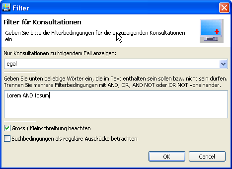 [fig:konsfilter]
Konsultation
[konsview] Detailansicht eines Konsultationseintrags (S. Abb. [fig:konsdetail]). [ht] 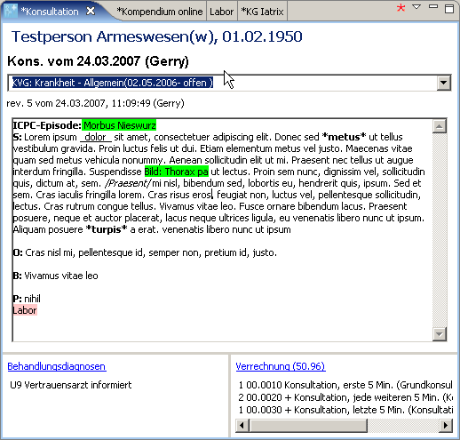 [fig:konsdetail] Sie haben im Textfeld folgende zusätzlichen Möglichkeiten:
- Makros
- Schreiben Sie einen beliebigen Text, markieren Sie diesen Text mit der linken Maustaste, klicken Sie dann mit der rechten Maustaste und wählen Sie "‘als Makro…"’. eben Sie dem Makro einen beliebigen Namen. Wenn Sie nun zukünftig den Namen des Makros gefolgt von # tippen, wird dieser Text durch den vorher definierten Inhalt des Makros ersetzt.
- Abrechnen
- Wenn Sie den Namen eines Abrechnungsblocks tippen, gefolgt von #, dann wird dieser Block verrechnet, ebenso, wie wenn Sie ihn mit der Maus ins Verrechnungs-Feld gezogen hätten.
- Textauszeichnungen
- Es können auch einige einfache Textauszeichnungen gemacht werden: Ein Wort am Anfang einer Zeile, welches von einem Doppelpunkt gefolgt ist, wird fett gedruckt. Ebenso ein Wort zwischen zwei *. Ein Wort zwischen zwei / wird kursiv geschrieben.
AUF
Diese View dient der Festlegung einer Arbeitsunfähigkeit. (Abb [fig:auf]) . 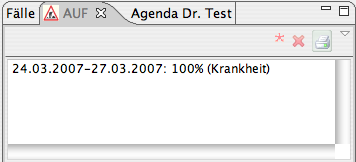 [fig:auf] Eine AUF bezieht sich immer auf einen bestimmten Fall. Wenn kein Fall markiert ist, werden Sie aufgefordert, zunächst einen anzugeben. Wenn Sie auf das Neu-Symbol (roter Stern) klicken, erscheint ein Dialog, in dem Sie Anfang und Ende der neuen Arbeitsunfähigkeit festlegen können. Klick auf das Drucker-Symbol öffnet eine Text-View, in der Sie noch manuelle Änderungen am AUF-Text ergänzen können, bevor Sie das Zeugnis definitiv ausdrucken oder aufs Fax senden.
Rezepte
In dieser View werden Rezepte aufgenommen. Klicken Sie auf das Neu-Symbol (grünes plus) und es wird ein neues Rezept mit dem Aktuellen Datum erstellt. Ziehen Sie Artikel mittels Drag&Drop aus einer Artikelliste oder der Dauermedikations-View in dieses Rezept. Mit Klick auf das Drucker- Symbol öffnen Sie eine Text-View, in der Sie noch manuelle Änderungen anbringen können, bevor Sie das Rezept definitiv auf den Drucker oder ein Faxgerät oder in einen Export-Konnektor senden. Hierzu muss eine Textvorlage namens Rezeptexistieren, welche an einer Stelle den Platzhalter [Rezeptzeilen] enthält. Dort werden die ausgewählten Artikel eingefügt.
Falldetail
[falldetail] Diese View (Abb. [fig:falldetail]) dient zum Einstellen der Details eines Falls (Eine Dialogbox mit derselben View wird geöffnet, wenn man einen neuen Fall (s. [definition:fall] S. ) erstellt).
[ht] 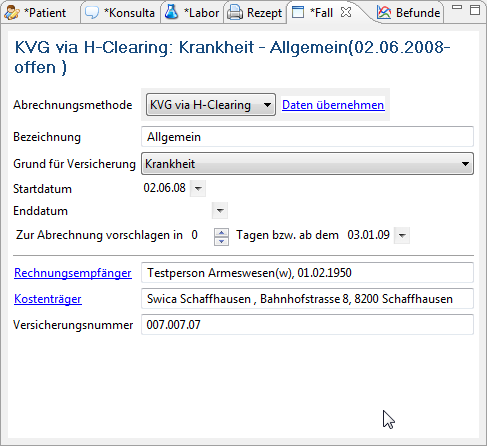
[fig:falldetail]
In der obersten Auswahlbox geben Sie an, welches Abrechnungssystem (S. auch [settings:abrechnungssystem] auf Seite ) für diesen Fall angewendet werden soll. Darunter steht eine Bezeichnung für den fall, die Sie frei wählen können. Diese dient nur Ihrer eigenen Information, damit Sie verschiedene Fälle desselben Patienten einfacher auseinanderhalten können. Die nächste Zeile, ‘Grund für die Versicherung’ ist eine Angabe, die auf den zu diesem fall erstellten Rechnungen stehen wird (Falls die Rechnungsvorlage ein entsprechendes Feld enthält). Das Startdatum ist üblicherweise das Datum der ersten Konsultation, oder bei Unfällen, das Unfalldatum. Das Enddatum hingegen bezeichnet das Datum, wen der Fall abgeschlossen wird. Ein Fall, welcher ein Enddatum hat, wird in der Fall-Liste (Abb. [fig:faelle2]) als ‘GESCHLOSSEN’ markiert. Zu einem solchen Fall können keine Konsultationen mehr erstellt werden. In der Regel sollte ein Fall nur abgeschlossen werden, wenn es ein Unfall ist, welcher abgeschlossen ist, oder wenn der Patient den Versicherer wechselt und die Abrechnungsdaten darum ändern. Die nächste Zeile, Rechnungsempfänger, ist zwingend, damit überhaupt eine Rechnung erstellt werden kann. Dies muss ein bereits existierender Kontakt (z.B. der Patient selbst) sein. Alle weiteren Zeilen sind je nach gewähltem Abrechnungssystem unterschiedlich. Oft wird auch eine Zeile ‘Kostenträger’ vorhanden sein 11.
Diagnosen
[view:diagnosen] Diese View (Abb. [fig:diagnosen]) dient dazu, Diagnosen auszuwählen und einer Konsultation zuzuordnen. l 7cm 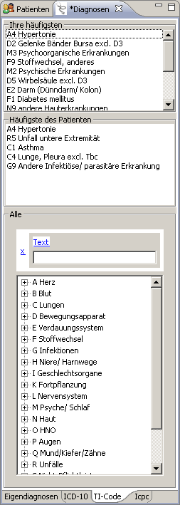 [fig:diagnosen] Unten sehen Sie eine Reihe von Reitern, die den installierten Diagnosecode-Plugins entsprechen (standardmässig TI-Code, ICD-10, und ICPC-2). Um eine Diagnose auszuwählen, wählen Sie zunächst aus diesen Reitern das entsprechende Codesystem und dann den Code. Die Auswahl kann durch Drag&Drop oder durch Doppelklick erfolgen. Für jedes Codesystem sehen Sie ein dreigeteiltes Fenster: Im obersten Bereich sind Ihre (d.h. des aktuell eingeloggten Anwenders) am häufigsten eingesetzten Diagnosen zu sehen; im mittleren Teil diejenigen Diagnosen, die beim aktuell ausgewählten Patienten bisher am häufigsten verwendet worden sind, und um unteren Teil die gesamte Systematik des gewählten Codesystems. Auf diese Weise haben Sie stets Zugriff auf die am häufigsten benötigten Codes und werden nur noch selten die ganze Systematik durchsuchen müssen.
Laboranzeige-View
Bei Elexis werden sowohl interne als auch externe Laborbefunde, sowohl automatisch eingelesene als auch manuell eigegebene Befunde in derselben Sicht angezeigt. Die Anzeige eines Befundes wird bestimmt durch
- Ein Laboritem, zu dem dieser Befund gehört
- Ein Datum, an dem dieser Befund erhoben wurde
- Einen Patienten, zu dem dieser Befund gehört
Das Laboritem definiert, wie und wo der Laborbefund angezeigt werden soll, und zu welchem Typ von Laborwerten er gehört. Das Erstellen von Labritems ist in der Regel nur bei der Installation des Programms notwendig, bzw. dann, wenn Sie neue Laborparameter in Ihre Standardbesimmungen aufnehmen möchten. Das genaue Vorgehen ist unter Konfiguration (S. genauer beschrieben. [htp] 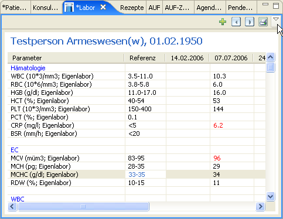 [fig:labview]
Manuelle Eingabe
Um Laborwerte manuell einzutragen, gehen Sie so vor:
- Wenn für das gewünschte Datum noch keine Spalte exstiert, klicken Sie auf das grüne Pluszeichen rechts oben, um ein Datum anzugeben.
- klicken Sie auf die Zeile und Spalte, wo Sie einen Laborwert eingeben möchten. Tippen Sie den Wert ein und verlassen Sie das Feld mit der Eingabetaste, oder der Pfeil-nach-unten-Taste.
Wenn ein Laborparameter numerisch ist, und der eingegebene Wert ausserhalb des Referenzbereichs ist, wird der Wert in rot angezeigt. Sie können diese Anzeige auch manuell ein- und ausschalten, indem Sie den Wert mit der rechten Maustaste anklicken und das Häkchen vor pathologisch setzen oder löschen.
Automatisches Einlesen
Elexis kann Laborwerte selbstverständlich auch automatisch einlesen. Hierfür dient das View-Menu rechts oben:
r
7cm
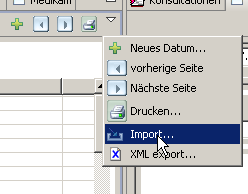
image
Klicken Sie auf import und wählen Sie in der dann erscheinenden Dialogbox die Quelle für die einzulesenden Laborwerte aus. Was für Quellen hier angeboten werden, hängt von den vorhandenen Laborimport-Plugins ab. In Frage kommen Laborgeräte und verschiedene externe Labors. Eine aktuelle Liste aller vorhandenen Laborimport-Plugins finden Sie auf http://www.elexis.ch
Laborblatt drucken
Um ein Laborblatt auszudrucken, klicken Sie auf das Drucker-Symbol rechts oben. Dies erstellt eine Tabelle innerhalb einer System-Textvorlage Laborblatt, welche einen Platzhalter [Laborwerte] enthalten muss (s. auch [textvorlagen]).
Labor Neu
Diese View dient dazu, alle Laborwerte anzuzeigen, welche noch nicht als gesehen markiert worden sind, und erlaubt es auch gleich, sie als gesehen zu markieren (S. Abb. [fig:labneu]).
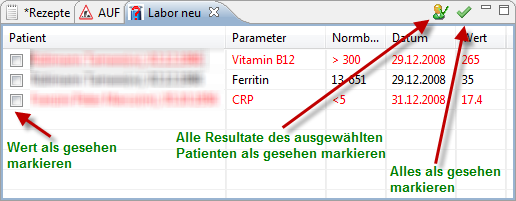
[fig:labneu]
Werte ausserhalb des Referenzbereichs werden rot dargestellt. Man kann gesehene Werte mit einem Häkchen in der Checkbox links markieren. Nach einiger Zeit werden diese dann aus der Liste entfernt (Solange sie noch nicht entfernt sind, kann man die Markierung mit einem erneuten Klick wieder löschen). Werte die älter als 96 Stunden sind, werden automatisch aus der Liste entfernt. Wenn man einen Eintrag markiert wird das Laborblatt des betreffenden Patienten aktiviert (sofern eine Labor-View geöffnet ist). Man kann entweder einen einzelnen Wert oder alle Resultate des aktuell markierten Patienten, oder alle angezeigten Resultate als gelesen markieren. Um die Werte einzeln oder gesamthaft als gesehen zu markieren, ist das Recht Daten/Patient/Labor abhaken erforderlich (s. [sec:gruppen], S. ff.)
Abrechnungsbezogene Views
Konsultationen nach Datum
l 7.3cm 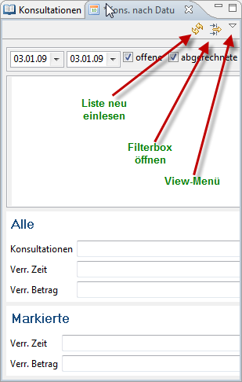 [fig:heute] Diese View (Abb. [fig:heute]) dient dazu, Konsultationen eines bestimmten Zeitraums (standardmässig des aktuellen Tages) darzustellen. Sie gibt einen Überblick über Verrechnung und verrechnete Zeit jeder Konsultation einzeln und der Summe davon. Durch Anklicken der entsprechenden Checkbox können Sie angeben, ob offene12 oder abgerechnete Konsultationen (oder beides) gezählt werden sollen. In den Datumsfeldern können Sie Start- und Enddatum des gewünschten Zeitraums angeben. Nach jeder Änderung müssen Sie auf den ‘Neu einlesen’-Knopf klicken, damit die Liste neu gezählt wird. Im unteren Abschnitt der View sehen Sie die Gesamtzahl der Konsultationen im gewählten Zeitraum, sowie die (vom Abrechnungssystem her vorgegebene) verrechnete Zeit und den verrechneten Betrag. Im Feld darunter sehen Sie dieselben Angaben für die aktuell markierte Konsultation. Sie können diese View also auch verwenden, um Abends kurz die Konsultationen des Tages durchzugehen um unverrechnete oder falsch verrechnete zu korrigieren. Ausserdem erlaubt diese View einfache statistische Funktionen: Wenn Sie die Taste ‘Filter’ klicken, öffnet sich im oberen Teil der View eine Filterbox. Sie können aus einem Verrechnungsfenster diejenigen Positionen in diese Box ziehen, die Sie zählen wollen. Beim nächsten Einlesen zählt die View dann nur noch solche Konsultationen, bei denen einer der gewünschten Codes verrechnet wurde und listet dann (beim Ausdrucken, s. weiter unten), die Codes und Gesamtbeträge separat auf. Im View-Menü finden Sie die Option ‘Liste drucken’. Dadurch öffnet sich ein Fenster mit einer Tabelle, welche die angezeigten Konsultationen auflistet und ausdrucken lässt. Für detailliertere Statistiken können Sie ebenfalls im View-Menü die Option ‘Statistik’ auswählen. Dies liefert eine Datei im CSV13- Format, die mit anderen Programmen wie OpenOffice.org calc oder MicrosoftExceleingelesen und statistisch aufbereitet werden kann. Diese Datei enthält alle abgerechneten Positionen mit Häufigkeit, Kosten und Umsatz.
Konsultationen zum Verrechnen
Diese View (s. fig. [fig:konsv]) dient dazu, diejenigen Konsultationen auszuwählen, von welchen eine Rechnung erstellt werden soll. Es werden dabei nur die Konsultationen des aktuellen Mandanten angezeigt. [hb] 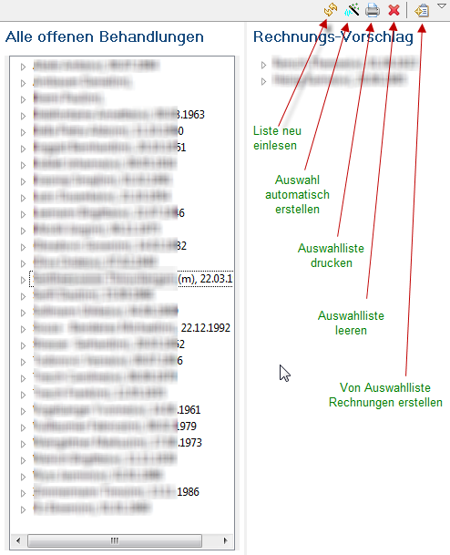 [fig:konsv] Hierzu gibt es folgende Möglichkeiten:
- Automatische Auswahl (Zauberstab-Icon): Dabei werden die Konsultationen nach bestimmten Regeln automatisch ausgewählt und in die Auswahlliste übertragen. Dies wird weiter unten (Rechnungsautomatik) genauer ausgeführt.
- Patientennamen aus der Liste in die Auswahl ziehen: Dadurch werden alle Konsultationen aller Fälle des gewählten Patienten zur Abrechnung markiert.
- Fälle aus der Liste in die Auswahl ziehen: Dadurch werden alle Konsultationen der gewählten Fälle zur Abrechnung markiert.
- Konsultationen aus der Liste in die Auswahl ziehen: Dadurch werden nur die gewählten Konsultationen zur Abrechnung vorgemerkt.
Bei allen Methoden können Sie die Auswahl nachträglich noch beliebig ändern. Sie können weitere Elemente zufügen, oder Sie können (nach Rechtsklick auf ein Element in der Auswahl) Elemente entfernen, oder Sie können die ganze Auswahl wieder löschen. Zu diesem Zeitpunkt sind noch keinerlei Änderungen der Daten erfolgt. Wenn Sie die Auswahl fertig erstellt haben, können Sie auf Rechnungen erstellenklicken, dann werden Rechnungen für alle in der Auswahl befindlichen Elemente erstellt. Dabei werden immer alle Konsultationen, die zu einem Fall gehören, zusammengefasst. Wenn von einem Patienten also mehrere Fälle in der Auswahl sind, werden auch mehrere Rechnungen erstellt.
Rechnungsautomatk
[auto] Hiermit werden Konsultationen nach bestimmten wählbaren Kriterien zum Abrechnen vorgeschlagen (S. Abb. [fig:rnautomatik]).
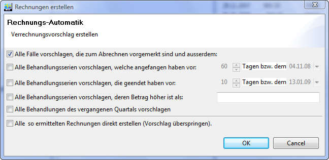
[fig:rnautomatik]
- Alle Fälle vorschlagen, die zum Abrechnen vorgemerkt sind: Wenn Sie diese Checkbox anklicken werden die Konsultationen jener Fälle ausgewählt, bei denen Sie ein Abrechnungsdatum im Fall-Detail spezifiziert hatten (Vgl. Abb. [fig:falldetail]).
- Alle Behandlungsserien vorschlagen, welche angefangen haben vor…: Damit werden sämtliche unverrechneten Konsultationen eines Falls (bis heute) ausgewählt, sofern mindestens eine der Konsulationen vor dem Stichtag stattgefunden hat.
- Alle Behandlungsserien vorschlagen, die geendet haben vor…: Damit werden sämtliche unverrechneten Konsultationen eine Falls ausgewählt, sofern die letzte Konsultation vor dem Stichtag stattgefunden hat.
- Alle Behandlungsserien vorschlagen, deren Betrag höher ist als…: Alle unverrechneten Konsultationen eines Falls werden ausgewählt, sofern deren Gesamtbetrag höher als der genannte Grenzwert ist.
- Alle Behandlungen des vergangenen Quartals vorschlagen: Hierbei wird das letzte Kalenderquartal abgerechnet. Es gelten also die Stichtage 31.3., 30.6, 30.9. und 31.12.
Bei allen Optionen gilt, dass sie nur ausgewertet werden, wenn das Häkchen in der Checkbox gesetzt ist. Es genügt also nicht, einen Wert einzutragen. Die verschiedenen Optionen gelten additiv: Es wird also am Schluss jede Konsultation ausgewählt, für die mindestens eine der aktiven Kriterien zutrifft.
Rechnungen
[ht] 
[fig:rechnungen]
In dieser View (Abb. [fig:rechnungen]) sehen Sie die erstellten Rechnungen. Eine Rechnung hat immer einen bestimmten Status:
- Offen
- Unmittelbar nach dem Erstellen.
- Offen und gedruckt
- Die Rechnung wurde mindestens einmal ausgegeben (über den Drucker oder eine andere Exportmethode). Ab diesem Zeitpunkt beginnt die Zahlungsfrist zu laufen. (Elexis kann allerdings nicht feststellen, ob beispielsweise der Drucker die Rechnung nicht korrekt ausgedruckt hat, oder ob sie nicht abgeschickt wurde. Deshalb liegt in diesem Punkt eine potentielle Fehlerquelle)
- Zahlungserinnerung
- Die Zahlungserinnerung wurde erstellt, aber noch nicht ausgedruckt
- ZE gedruckt
- Die Zahlungserinnerung wurdr ausgedruckt
- 2. Mahnung erstellt, 2. Mahnung gedruckt, 3. Mahnung erstellt, 3. Mahnung gedruckt
- : analog
- Teilweise bezahlt
- Es ist (mindestens) eine Zahlung eingebucht, welche aber nicht den ganzen Rechnungsbetrag abdeckt.
- bezahlt
- Der Rechnungsbetrag wurde (in einer oder mehreren Buchungen) vollständig bezahlt
- zuviel bezahlt
- Auch das kommt vor.
- Teilverlust
- Ein Teil des Rechnungsbetrages wird abgeschrieben (Im Gegensatz zu Teilweise bezahlt rechnen Sie hier nicht mehr mit einer weiteren Zahlung)
- Totalverlust
- Der Rechnungsbetrag wird komplett abgeschrieben
- In Betreibung
- Genau das.
- Storniert
- Eine einmal erstellte Rechnung kann nicht mehr gelöscht werden. Das muss so sein, weil sonst die Situation möglich wäre, dass jemand eine nicht mehr existierende Rechnung reklamiert, oder dass Rückfragen zu einer inexistenten Rechnung kämen. Wenn eine Rechnung aus irgendeinem Grund ungültig ist (Fehler, Erlassen des Betrags etc.), dann muss sie stattdessen storniert werden. Stornieren hat in allen praktischen Belangen denselben Effekt wie löschen, ausser, dass die Rechnungsnummer vergeben bleibt und dass die Rechnung später wieder betrachtet werden kann.
- fehlerhaft
- Wenn ein Rechnungsausgabemodul feststellt, dass eine Rechnung fehlerhaft ist (beispielsweise könnte das TrustX-Modul monieren, dass nicht alle EAN-Nummern angegeben sind), dann erhält die betreffende Rechnung den Status fehlerhaft und kann so korrigiert werden.
- zu drucken
- Diese Einstellung findet alle Rechnungen, die offen, aber noch nicht gedruckt sind (also auch ungedruckte Mahnungen etc.)
- ausstehend
- Zusammenfassung aller ‘offen und gedruckt’, ‘ZE gedruckt’, ‘2.Mahnung gedruckt’, ‘3. Mahnung gedruckt’, ‘Teilweise bezahlt’ und ‘In Betreibung’. Also alle Rechnungen, von denen noch Zahlungen erwartet werden.
- Mahnstopp
- Genau das.
Die Rechnungsliste kann nach bestimmten Kriterien selektiert werden. Um die Liste mit den geänderten Optionen neu einzulesen, klicken Sie jeweils auf den ‘Liste neu einlesen’-Knopf. Um die Rechnungen mit einem bestimmten Status anzuzeigen, wählen Sie diesen Status in der Combox links oben aus(S. Abb. [fig:rechnungen]). Um nur die Rechnungen eines bestimmten Patienten anzuzeigen, klicken Sie auf die blaue Schrift Patient. Es öffnet sich die bekannte Kontaktauswahl-Dialogbox. Wählen Sie dort einen Patienten aus und klicken Sie ok, oder klicken Sie auf Abbrechen, um wieder alle Patienten anzuzeigen.
Um nur eine bestimmte Rechnungsnummer auszuwählen, geben Sie diese Nummer im Feld Rn-Nummer ein und drücken die Eingabetaste oder klicken ‘neu einlesen’. Um Rechnungen mit einem bestimmten Betrag zu suchen (z.B. um eine unklare Zahlung zuzuordnen), geben Sie den Betrag ein und drücken die Eingabetaste.
Wenn Sie auf das ‘Filter’-Symbol klicken, erhalten Sie weitere Darstellungsoptionen.
l
7cm
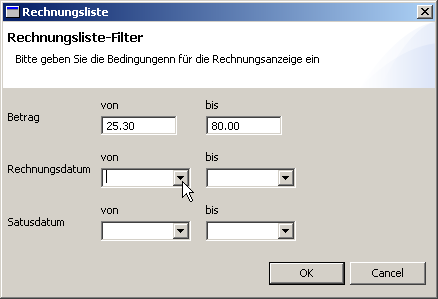
image
Die Felder Betrag von/bis dienen dazu, Rechnungen mit einem bestimmten Betrag auszufiltern. Sie können auch nur eins der beiden Felder eingeben, damit wird das andere zur offenen Grenze. Die Felder Rechnungsdatum von und Rechnungsdatum bis dienen dazu, nur Rechnungen auszuwählen, welche zwischen diesen Daten erstellt wurden. Im Unterschied dazu dienen die Felder Statusdatum von/bis dazu, Rechnungen auszufiltern, deren letzte Statusänderung zwischen den genannten Daten lag. Auch hier können Sie jeweils nur eins der beiden Daten eingeben und das andere offenlassen. Wenn Sie den Dialog mit OK verlassen, wird die Liste anhand Ihrer Kriterien neu eingelesen. Solange der Filter-Knopf eingerastet ist, sind alle folgenden Einlese-Operationen mit dem Filter UND-Verknüpft. Wenn Sie also beispielsweise Statusdatum bis 30.10.2007 gefiltert haben, und dann das Statusfeld auf "2. Mahnung gedruckt" setzen und neu einlesen, dann werden Ihnen alle Rechnungen angezeigt, welche vor dem 30.10.2007 auf den Status ‘2. Mahnung gedruckt’ gesetzt wurden. Unten sehen Sie jeweils die Zahl der mit diesen Kriterien vorhandenen Rechnungen, sowie die Summen.
Das Viewmenu (Dreieck rechts oben, s. Abb. [fig:rechnungen]) hat folgende Optionen:
- Alle expandieren und Alle einklappen
- Öffnet bzw. schliesst alle angezeigten Einträge.
- Liste drucken
- Dies druckt eine Liste aller im Moment in der Anzeige markierten Patienten bzw. Rechnungen. Hierzu muss eine System-Druckvorlage namens ‘Liste’ vorhanden sein, die ein Feld [Liste] enthält.
Rechnungen ändern
Wenn Sie eine Rechnung der Liste mit der rechten Maustaste anklicken, können Sie diese Rechnung ändern:
- Ausgeben
- Die Rechnung einzeln ausgeben (s. unten)
- Buchung/Zahlung hinzufügen
- Hier können Sie manuell Buchungen eingeben, z.B. wenn eine Barzahlung oder Anzahlung erfolgt ist. (Normalerweise erfolgen Buchungen via ESR automatisch).
- Gebühr zuschlagen
- Manuell z.B. Mahngebühr zufügen
- Status ändern
- Hier kann der Rechnungsstatus manuell geändert werden. Die meisten Statusänderungen erkennt Elexis automatisch. So werden z.B. beim Einlesen einer ESR-Datei von der Bank alle bezahlten Rechnungen automatisch auf bezahlt gesetzt etc. Manche Statusänderungen können aber nur manuell gemacht werden. Zum Beispiel kann Elexis den Unterschied zwischen Teilweise bezahlt und Teilverlust nicht automatisch erkennen, weil dies ja eine bewusste Entscheidung des Gläubigers ist. Dasselbe gilt für In Betreibung und Totalverlust. Von diesen Fällen abgesehen, sollten Sie aber vorsichtig sein mit manuellen Statusänderungen, da hierbei beispielsweise keine Buchungskorrekturen erfolgen.
- Mahnstufe erhöhen
- Hierdurch wird die Mahnstufe jeweils um eins erhöht bis max. Dritte Mahnung.
- Stornieren
- Damit wird die markierte Rechnung storniert. Man hat dabei die Möglichkeit, Behandlungen wieder freizugeben (z.B. wenn die Rechnung fehlerhaft war und neu erstellt werden soll), oder blockiert zu lassen (Wenn diese Behandlungen definitiv nicht verrechnet werden sollen).
Rechnungen ausgeben
Mit dem Button Rechnungen ausgeben werden alle markierten Rechnungen ausgegeben. (Um eine Rechnung zu markieren, klicken Sie mit der linken Maustaste auf diese. Um mehrere Rechnungen zu markieren, klicken Sie mit gedrückter Ctrl (bzw. Mac-) Taste auf die gewünschten Rechnungen. Um eine ganze Reihe zu markieren, klicken Sie zuerst auf die erste, dann mit gedrückter Shift-Taste auf die letzte Rechnung aus der Reihe.) Es wird also nicht die ganze Liste ausgegeben, sondern nur die markierten Rechnungen! Die möglichen Ziele der Rechnungsausgabe hängt von den installierten Abrechnungs-Plugins ab. Es kann zum Beispiel ein Drucker sein, der Tarmed-Rechnungen ausdruckt. Es kann aber auch eine XML-Datei oder direkt ein Trust-Center sein. Nähere Angaben dazu finden Sie in den entsprechenden Kapiteln (Tarmed: S. ). Mit Klick auf das Zauberstab-Icon schliesslich setzen Sie die Mahnungen-Automatik in Gang. Diese wählt Rechnungen anhand der im unten rechts angezeigten Feld aus, erhöht die Mahnstufe, fügt wie gewünscht Gebühren zu und fasst diese Rechnungen als zu drucken zusammen.
Konto
In dieser View sehen Sie alle Kontobewegungen eines bestimmten Patienten. Rechnungen werden als negative, Zahlungen und Storno als positive Buchungen erfasst, so dass Sie einfach über mehrere Rechnungen und Zahlungen hinweg erkennen können, wo Sie finanziell mit dem betreffenden Klienten stehen.
Konto-Liste
Diese Liste zeigt alle Kontobewegungen insgesamt an.
Leistungen
Diese View funktioniert ähnlich wie die Diagnosen-View (S. [view:diagnosen] auf S. ): Es werden je nach installierten Abrechnungs-Plugins Reiter für jedes Abrechnungssystem angezeigt. Genauere Angaben sind unter [concept:leistung] auf S. .
Diverse Views
Datenanzeige
Dies ist eine View, die beliebige Felder der Elexis-Datenbank anzeigen kann. Mehrere Exemplare dieser View können (mit unterschiedlichen oder denselben Inhalten) in einer Perspektive eingebunden werden (S. Abb. [figure1]). [hb] 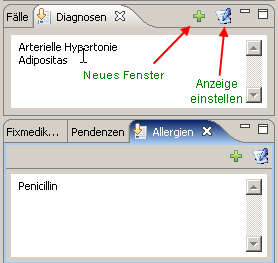 [figure1] Durch Klick auf den + – Button können Sie ein weiteres Exemplar der View öffnen, durch Druck auf den Editieren-Button können Sie die anzuzeigenden Daten einstellen. [hb] 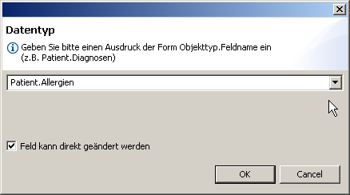 [figure2] Es erscheint dann eine Dialogbox wie in Abb. [figure2]. Sie können hier jeden Datentyp einsetzen, der auch in Textvorlagen als Platzhalter verwendet werden kann (Vgl. S. ). Wenn Sie die Checkbox ‘Feld kann geändert werden’ ankreuzen, dann können die Daten (ausreichende Rechte vorausgesetzt) direkt durch Schreiben in dieses Fenster geändert werden. Die Anordnung und der Inhalt der Datenanzeige-Views werden beim Verlassen von Elexis, oder bei Betätigen der Menüaktion ‘Perspektive speichern’ gespeichert.
Fixmedikation
Diese View zeigt die Fix- oder Dauermedikation des aktuell selektierten Patienten an (S. Abb. [fig:fixmedi]) [htp] [fig:fixmedi] Sie können Medikamente aus dem Artikel-Fenster oder aus einem Rezept in diese View ziehen, und Sie können auch Artikel aus der Fixmedikation in ein Rezept ziehen. Mit Klick auf Hinzu… öffnen Sie die Artikel-View. Mit Klick auf Liste… erstellen Sie eine Einnahmeliste für den Patienten. Dazu muss eine Textvorlage namens Einnahmeliste existieren, und diese muss an einer Stelle den Platzhalter [Medikamentenliste] enthalten. Mit Klick auf Rezept erstellen Sie ein Rezept mit der Dauermedikation. Hierzu muss eine Textvorlage namens Rezeptexistieren, welche an einer Stelle den Platzhalter [Rezeptzeilen] enthält.
Medikamenten-Verlauf
Diese View zeigt alle Medikamente, die beim aktuellen Patienten je verschrieben oder abgegeben worden sind, mit Datum und Dosierung (falls angegeben). Durch Klick auf die entsprechenden Spaltenköpfe können Sie nac Abgabedatum oder Medinamen sortieren. Bei Medikamenten aus der Fixmedikation wird ausserdem, falls gegeben, das Stopdatum angezeigt.
Kompendium online
Wenn Sie eine aktive Internet-Verbindung haben, dann wird in dieser View das Arzneimittel-Kompendium der Schweiz angezeigt.
Open Drug Database
Diese View zeigt bei aktiver Internet-Verbindung die entsprechende Site an, die Sie z.. für die Suche nach Generika oder Interaktionen verwenden können.
Pendenzen
Erinnerungen, Reminders, Pendenzen: Diese View zeigt Ihnen Dinge an, an die Sie denken mochten oder sollten (s. Abb. [fig:pendenzen]). l 7.5cm [fig:pendenzen] Eine Pendenz hat ein Fälligkeitsdatum und einen Status (geplant, fällig, überfällig, erledigt, bleibt unerledigt). Es gibt folgende Typen von Pendenzen:
- Aufträge für eine bestimmte Person oder Aufträge an alle.
- Erinnerungen, die immer angezeigt werden, sobald ihr Fälligkeitsdatum erreicht oder überschritten ist.
- Erinnerungen, die nur dann angezeigt werden, wenn sie fällig sind und wenn ein bestimmter Patient ausgewählt ist.
- Pendenzen, die nicht nur angezeigt werden, sondern die auch direkt eine bestimmte Aktion auslösen können (z.B. einen Serienbrief schreiben).
Wenn ein Patient fällige Pendenzen hat, dann wird in der Patientenliste das Pendenzen-Symbol angezeigt (s. Abb. [fig:pendenzen]) Um eine neue Pendenz zu erstellen, klicken Sie auf das Symbol Neue Pendenz(roter Stern). Es erscheint dann eine Dialogbox, in der Sie Text, typ, verantwortliche Person, Fälligkeitsdatum und anfänglichen Status der Pendenz eingeben können. Doppelklick auf eine Pendenz öffnet diese zum Bearbeiten. Es erscheint dieselbe Dialogbox.
Plugins
Warum Plugins?
[expl:plugins] Die Erfahrung mit älteren Programmen zeigte, dass diese immer schwieriger zu warten und zu erweitern waren, je mehr Funktionen eingebaut wurden. Eine bestimmte Funktion nachträglich zu ändern (z.B. ein neues Abrechnungssystem) bedingte einen enormen Aufwand und war fehlerträchtig. Ausserdem konnten Änderungen und Erweiterungen nur von der Herstellerfirma selbst programmiert werden, da der gesamte Programmcode ja an einem Stück war. Wenn man nun eine Funktion brauchte, die selten benötigt wird, musste man sehr tief in die Tasche greifen (sofern die Firma überhaupt Interesse daran hatte, eine bestimmte Funktion nur für einen einzelnen Kunden zu implementieren). Hier kommt das Plugin-System ins Spiel. Entwickelt wurde es ursprünglich für Eclipse, wo es ähnliche Anforderungen gab,wie bei Elexis: Eine Vielzahl potentieller Erweiterungen, von denen aber längst nicht jeder Anwender alle braucht, und die zum Zeitpunkt der Herstellung noch gar nicht alle bekannt sein können. Das Plugin-Konzept hat sich mittlerweile etabliert und einen hohen Reifegrad erreicht. Grundsätzlich gilt: Möglichst viele Stellen im Programm werden von vornherein mit sogenannten Erweiterungspunkten ausgestattet. Das sind wohldokumentierte Steckkontakte, an denen sich Plugins einstöpseln können. Der Hersteller des Plugins braucht dabei nicht mehr zu kennen, als die Dokumentation des Erweiterungspunktes. Er braucht das Hauptprogramm weder zu kennen noch sich in dessen Quellcode einzuarbeiten. Ein Plugin kann nur eine winzige einzelne Funktion implementieren, oder es kann ein eigenständiges Programm sein, das lediglich eine gewisse Zusammenarbeit mit dem Hauptprogramm braucht. Bei Elexis wurden beispielsweise die Abrechnungs- und Diagnosecodesysteme als Plugins realisiert, damit jederzeit neue Codesysteme ohne Änderung des Hauptprogramm eingebaut werden können. Auch die einzubindende Textverarbeitung und die Möglichkeiten, Daten aus Fremdprogramm, Labors und Apparaten zu importieren, sind als Plugin realisiert.
Ein Plugin installieren
Die Installation eines Plugins ist denkbar einfach: Man muss es nur ins plugins-Verzeichnis von Elexis kopieren und Elexis neu starten.
Ein Plugin deinstallieren
Die Deinstallation ist ebenso einfach: Man muss bloss das Plugin aus dem plugins-Verzeichnis zu löschen und Elexis neu zu starten.
Liste der Plugins
Eine Liste aller uns bekannten Plugins finden Sie im Internet unter
http://www.elexis.ch/jp/content/view/105/78/.
Eine solche Liste kann niemals vollständig sein, da wir einerseits gar nicht unbedingt alle Plugins kennen (Dritte könnten eigene Plugins entwickeln, ohne uns davon etwas zu erzählen), und da andererseits ständig neue Plugins entwickelt werden. Einige wichtige Plugins sind in den Kapiteln [Agenda]ff. beschrieben; bei den anderen ist die Dokumentation auf der Website zu finden. Standardmässig sind bei der Elexis-Komplettinstallation, die Sie von der Website downloaden können, folgende Plugins enthalten:
- elexis-artikel-schweiz
- Plugin zur Einbindung des Galdat-Artikeltammes (separates Abonnement notwendig) und der MiGeL-Liste
- elexis-arzttarife-schweiz
- Plugin zur Einbindung von Tarmed und EAL-Tarif.
- elexis-diagnosecodes-schweiz
- Plugin zur Einbindung von ICD-10 und TI-Code.
- elexis-medikamente-BAG
- Plugin zur Einbindung der Spezialitätenliste.
- elexis-icpc
- Plugin zur Einbindung des ICPC-Codes (Lizenz muss separat besorgt werden)
- elexis-agenda
- Mehrmandantenfähige und mehrplatzfähige Agenda
- noatext
- Einbindung der Office-Suite OpenOffice
- elexis-nachrichten
- Plugin zum Senden einfacher Textnachrichten zwischen Arbeitsplätzen
- medshare-directories
- Plugin zum Einlesen von Adressdaten aus öffentlich zugänglichen Verzeichnissen.
- elexis-bildanzeige
- Plugin zur Einbinden von Bildern im Konsultationstext
- elexis-omnivore
- Plugin zum Zuordnen beliebiger Dokumente zu Patienten
Elexis-Agenda
[Agenda] Mehrbenutzerfähige Agenda zum Einbinden in Elexis. Dieses Plugin ist Teil der Standard-Distribution. Dieser Artikel beschreibt die Konfiguration und Verwendung der Agenda.
Konfiguration
Wählen Sie im Menü Datei -Einstellungen. Wenn das Agenda-Plugin installiert ist, findet sich dort eine Rubrik Agenda:
image
Im oberen Abschnitt Bereiche können Sie angeben, wieviele und welche Agenden parallel geführt werden sollen. Dies kann beispielsweise eine eigene Agenda für jeden Arzt einer Gemeinschaftspraxis, oder auch bestimmte Ressourcen sein (z.B. Arzt, EKG, Labor, Ergometrie etc.). Menge und Titel der Bereiche sind ganz von den spezifischen Bedürfnissen Ihrer Praxis abhängig.
Darunter,Termintypen können Sie angeben, welche verschiedene Arten von Terminen es bei Ihnen geben soll. Ein Termintyp ist alles, was eingetragen werden kann. Also beispielsweise auch Teamsitzung, Akupunktur, Check-Up, Fortbildung usw. Termintypen werden später unterschiedlich angezeigt und können unterschiedliche Zeitvorgaben haben. Die ersten beiden Einträge, frei und gesperrt, müssen mit dieser Bedeutung in dieser Reihenfolge angegeben sein, dürfen aber anders genannt werden (z.B. leer und reserviert). Die anderen Zeilen können Sie beliebig benennen und es können beliebig viele sein.
Das unterste Feld, Terminstatus, ist ebenfalls ganz von den spezifischen Gegebenheiten Ihrer Praxis abhängig. Auch hier sind die zwei obersten Einträge in ihrer Bedeutung vorgegeben (können aber anders benannt werden), während die anderen völlig frei sind. Man könnte hier z.B. auch abgesagt, wartet auf Labor, wartet auf Arzt etc. eingeben.
Die nächste Einstellungsseite der Agenda betrifft die Icons, mit denen die verschiedenen Termintypen angezeigt werden sollen.
image
(Falls hier noch nicht Ihre gewählten Termintypen auftauchen, müssen Sie Elexis beenden und neu starten, um sie korrekt einzulesen). Klicken Sie auf Ändern und wählen Sie ein Bild im .*gif, *png oder *.ico Format aus.
Der nächste Abschnitt betrifft die Anzeigefarben für Termintypen und -Status:
image
Nach Doppelklick auf ein Feld können Sie die Farbe für dieses Feld auswählen.
image
Die obere Reihe betrifft die Termintypen. Die hier angezeigten Farben werden im Termineingabedialog angezeigt. Die untere Reihe ist der Terminstatus; diese Farben werden in der normalen Agenda-Anzeige dargestellt
Der nächste Abschnitt der Agenda-Einstellungen betrifft die Tageseinteilung:
Hier wird eingestellt, welche Zeiträume für jeden Wochentag standardmässig für jeden Agenda-Bereich planbar sind. Dies kann nachträglich natürlich für jeden Tag auch separat geändert werden; hier geht es um die Vorgaben.
Wählen Sie oben den gewünschten Bereich, und geben Sie hier jeweils Beginn- und Ende für jeden nicht planbaren Zeitraum an. Diese Zeiträume werden später mit dem Termintyp gesperrt besetzt. Sie können beliebig viele dieser Zeiträume für jeden Wochentag eingeben.
Der letzte Abschnitt der Agenda-Einstellungen betrifft die Vorgabe-Zeitdauer für jeden Termintyp:
Hier sehen Sie für jeden Bereich und jeden Termintyp eine Zeitangabe in Minuten. Sie können jedes Feld durch Anklicken und Überschreiben ändern. Diese Zeit wird die Agenda jeweils standardmässig für die entsprechenden Termintypen vorgeben (kann aber jeweils manuell geändert werden). Wenn Sie an einer Stelle 0 eingeben, dann wird dieser Termintyp beim entsprechenden Bereich gar nicht angeboten. Die oberste Zeile ist die Standarddauer, die immer dann angewendet wird, wenn keine spezifische Dauer gefunden werden kann.
Des weiteren können Sie einige Einstellungen zum Druck von Terminkarten vornehmen. Diese Einstellungen finden Sie unter Druck.
image
Die Standard-Vorlage für den Ausdruck von Terminkarten heisst Terminkarte. Sie können eine beliebige andere Systemvorlage wählen. Die Termine werden beim Platzhalter [Termine] eingesetzt.
Beim Ausdruck einer Terminkarte erscheint ein Fenster mit der vorbereiteten Terminkarte. Sie können die Terminkarte aus der Textverarbeitung heraus drucken.
Möchten Sie, dass die Terminkarte direkt auf dem Drucker ausgegeben wird, markieren Sie Direkt drucken. Sie können nun den Drucker und optional den gewünschten Schacht auswählen. Falls Sie keinen Schacht auswählen, wird der in der Vorlage gespeicherte Schacht oder der Standard-Schacht des ausgewählten Druckers verwendet.
image
Damit sind Sie mit der Konfiguration der Agenda fertig. Drücken Sie auf OK und beenden Sie Elexis. Ab dem nächsten Programmstart stehen die neuen Einstellungen zur Verfügung. Die nächsten Abschnitte befassen sich kurz mit der Bedienung der Agenda.
Bedienung der Agenda
Die Agenda-View (Abb. [fig:agenda1]) wird standardmässig nicht angezeigt. Um sie auf den Bildschirm zu holen, wählen Sie im Menu Fenster-Ansicht-Andere, tippen Sie im Filterfeld oben Agenda, wählen Sie die Agenda aus und klicken Sie OK. Ziehen Sie danach das Agenda-Fenster an die gewünschte Position der Perspektive, wie in erste Schritte [tour:customize] auf S. beschrieben. [fig:agenda1] Im Oberen Bereich können Sie das Datum einstellen. Klick auf das Haus führt zum heutigen Tag, Klick auf die Pfeile einen Tag vor oder zurück, Klick auf den mittleren Bereich zu einem Kalender, auf dem man das Datum auswählen kann. Klick auf das Dreieck rechts oben öffnet das View-Menu, in dem man den aktuell anzuzeigenden Bereich und die Tagesgrenzen einstellen kann. Im Hauptbereich sehen Sie die Agendaeinträge mit den Unter Terminstatus definierten Farben und mit jeweils dem Bild, das für den betreffenden Termintyp definiert wurde. Grün sind die noch freien Zeiträume. Beachten Sie, dass diese Agenda die Zeiträume nicht proportional zu ihrer Dauer anzeigt. Dies ist zwar am Anfang etwas gewöhnungsbedürftig, aber es hat sich bewährt, da man so auf kleinem Raum den ganzen Tag anzeigen kann Im untersten Bereich schliesslich sehen Sie weitere Informationen zum aktuell ausgewählten Termin. Wenn Sie auf einem freien Zeitraum doppelklicken, können Sie einen neuen Termin eingeben, wenn Sie auf einen Termin doppelklicken, können Sie diesen Termin ändern. In beiden Fällen geht das Dialogfenster Abb. [fig:termineingabe] auf. [ht] [fig:termineingabe] Diese recht komplexe Dialogbox ist in mehrere Bereiche unterteilt:
- Oben links ein Kalender, in dem sie einen anderen Tag auswählen können
- Oben in der Mitte Felder für Anfangszeit, Endzeit und Dauer des aktuell ausgewählten Termins,
- darunter eine Liste der Termine, die bereits eingesetzt wurden (man kann einen oder mehrere Termine auf einmal einsetzen)
- Oben rechts eine Checkbox gesperrt, diese verhindert spätere Änderungen des Termins,
- darunter einen Knopf einsetzen, mit der man einen Termin einsetzen kann. Danach kann man einen anderen Tag und/oder andere Zeiten wählen, um einen weiteren Termin in diese Serie einzusetzen. (Wenn man nur einen Termin setzen möchte, kann man stattdessen auch gleich auf OK drücken)
- Im Mittleren Bereich ist der Tagesbalken, welcher die Aufteilung des aktuell ausgewählten Tages anzeigt. Die Farben entsprechen den Termintypen, wie Sie sie in der Konfiguration eingegeben haben. Der graue Schieber symbolisiert den aktuell eingestellten Zeitraum. Sie können den Schieber mit der Maus beliebig hin- und herziehen.
- Die Uhrzeiten-Anzeige unterhalb des Tagesbalkens gibt das Raster vor, in dem der Schieber verschoben werden kann,. Durch Anklicken dieser Zeile können Sie das Raster verändern.
- Darunter sind schliesslich die Personalien des ausgewählten Patienten, sowie Typ, Status und Text zum aktuellen Termin. Wenn Sie nicht einen Patienten, sondern freien Text eingeben wollen, können Sie auf die Zeile Personalien klicken und können dann selbst die Angaben verändern.
Mit Klick auf OK wird der aktuelle Termin gesetzt und der Dialog wieder geschlossen. Wenn Sie einen Termin mit der rechten Maustaste anklicken, öffnet sich ein Kontextmenü, in dem Sie verschiedene Details zum Termin ändern können. Am wichtigsten wohl die Veränderungen des Terminstatus: Da eine solche Änderung auf alle im Netz angeschlossenen PC’s repliziert wird, kann von den anderen Stationen aus festgestellt werden, dass z.B. jemand eingetroffen ist. Wenn Sie für einen einzelnen Tag die reservierten Zeiträume ändern wollen, können Sie im Viewmenü oben Tagesgrenzen auswählen. Es erscheint dann folgender Dialog: Hier können Sie (wie in den Einstellungen beschrieben) für den aktuellen Tag die Sperrzeiten einstellen.
Mehrere Agendafenster gleichzeitig
Sie können ohne weiteres auch mehrere Agendafenster gleichzeitig darstellen, um etwa verschiedene Bereiche oder verschiedene Tage anzuzeigen.
image
Grösseres Fenster
Ihre MPA möchte vielleicht auf ihrem Bildschirm eine Agenda, die mehr Informationen auf einen Blick liefert. Hierfür ist die View Agenda gross geeignet: Wie Sie sehen, werden hier alle relevanten Informationen synoptisch dargestellt. Ansonsten ist die Funktion genau identisch; Sie können ohne weiteres auch beide Agenda-Viewtypen gleichzeitig benutzen
Terminkarten drucken
Im View-Menü der Agenda können Sie Patienten-Termine drucken wählen, um eine Terminkarte für den ausgewählten Patienten zu drucken. Die Zugehörige Formatvorlage heisst Terminkarte. Weitere Informationen zur Konfiguration finden Sie weiter oben. Beim Ausdruck einer Terminkarte erscheint ein Fenster mit der vorbereiteten Terminkarte. Sie können die Terminkarte aus der Textverarbeitung heraus drucken. Das Fenster können Sie danach durch Klicken auf OK oder Abbrechen wieder schliessen.
Elexis-Befunde
[befunde] Einbindung textorientierter datierter Befundserien (z.B. Gewicht, BZ, Quick, Röntgenbefunde etc.).
Konfiguration
[htbp] 0.35 [fig:befundesettings] 0.65 Wenn das Plugin installiert ist, finden Sie im Menu Datei-Einstellungen eine Rubrik Befunde. Diese wird anfangs leer sein (Abb. [fig:befundesettings]). Um einen neuen Befundparameter hinzuzufügen, klicken Sie auf Hinzufügen. Sie werden nach dem Namen dieses Parameters gefragt, wir wählen Röntgen. Danach erscheint eine Karteikarte mit diesem Parameter, die wir jetzt noch mit den einzutragenden Datenspalten versehen müssen. [htbp] 0.35 [fig:befundesettings] 0.65 Klicken Sie nach jeder Zeile auf Apply bzw. Anwenden: Wenn ein Feld mehrzeilig sein soll, klicken Sie die entsprechende Checkbox an. Eine Variante mit mehr als zwei Spalten sehen Sie in Abb. [fig:befunde4].: [htbp] 0.35 [fig:befunde4] [fig:befunde4] 0.65 Werte können auch errechnet statt direkt eingegeben werden. Geben Sie hierzu einfach einen Ausdruck der Form Resultat=Formel ein, wobei Sie sich mit Fx auf andere Felder derselben Seite beziehen können. Im Beispiel links errechnen wir den BMI aus den eingegebenen Werten für Grösse und Gewicht. Das Resultat wird allerdings standardmässig auf 9 Stellen genau ausgegeben, deswegen runden wir es hier auf eine Stelle.
Anwendung
image
Sie sehen dann die konfigurierten Messparameter:
image
Um eine neue Messung einzugeben, klicken Sie auf das grüne Pluszeichen rechts oben.
image
Sie sehen jetzt Ihre bei der Konfiguration angegebenen Messzeilen, ein- oder mehrzeilig. Mit Klick auf OK wird der neue Eintrag übernommen. Mit Doppelklick können Sie ihn wieder öffnen.
Im Fall eines berechneten Wertes können Sie die Rechnung durch Klicken auf den blauen Titel auslösen:
image
Text-Platzhalter
Befunde können auch in Platzhalter von Textdokumenten eingefügt werden. Sie müssen hierzu die Syntax wie unter ‘Daten aus externen Plugins’ beschrieben ([datenfelderextern], S. ) anwenden. Der Schlüsselname des Befunde-Plugins ist Befunde-Data. Um beispielsweise eine Tabelle mit dem Gewichtsverlauf des aktuellen Patienten im aktuellen Dokument einzufügen, setzen Sie folgenden Platzhalter ein:
[Befunde-Data:Patient:all:Gewicht] (um eine Tabelle mit allen Messungen auszugeben)
[Befunde-Data:Patient:last:Gewicht] (Um nur die letzte Messung auszugeben)
Elexis-Arzttarife-Schweiz
[arzttarife] Da Elexis ein universelles Praxisprogramm ist, ist die Abrechnung nach Tarmed nur eines von beliebig vielen möglichen Abrechnungssystemen. Konsequenterweise ist deshalb sowohl die Leistungserfassung, als auch die Rechnungserstellung nicht im Kernsystem enthalten, sondern in Plugins ausgelagert. Da Elexis aber ein Schweizer Programm ist, ist dieses Plugin natürlich Teil der Standarddistribution.
Einstellungen
[fig:tarmed1]
Sobald das Tarmed-Plugin installiert ist (was standardmässig immer der Fall ist), können bei den Abrechnungssystemen (s. Abb. [fig:tarmed1]) Tarmedleistungen und Tarmeddrucker ausgewählt werden. Standardmässig werden beim ersten Erstellen eines Falls die Abrechnungssysteme KVG, UVG, IV, VVG und MV eingerichtet; weitere können Sie manuell hinzufügen bzw. werden von Plugins erstellt (z.B. Covercard). Weitere Hinweise zu den Abrechnungssystemen finden Sie im Anhang unter [settings:abrechnungssystem] auf S. . Wichtig: Achten Sie darauf, die für Ihren Kanton gültigen Taxpunktwerte einzutragen bevor Sie die ersten Leistungen verrechnen. Denken Sie bei einer Änderung des Taxpunktwerts bitte auch daran, dies hier nachzutragen, bevor Sie Leistungen verrechnen, für die der neue Taxpunktwert gilt. Nachträgliche Änderungen schon gedruckter Rechnungen sind sehr mühsam. Vergessen Sie auch nicht, unter ‘Labortarif’ den aktuell gültigen TP-Wert einzusetzen.
Ein Taxpunktwert gilt immer ab einem bestimmten Datum und für so lange, bis ein neuer Taxpunktwert eingegeben wird. Ein einmal eingesetzter Wert kann nicht mehr geändert oder gelöscht werden (da sonst früher damit berechnete Leistungen ungültig würden). Man kann aber jederzeit einen neuen Taxpunktwert ab einem bestimmten Datum hinzufügen, indem man den entsprechenden Knopf klickt. Wenn Sie den Abschnitt Tarmed öffnen, erscheint der Punkt Rechnungseinstellungen (Abb. [fig:tarmed2]). Dort können Sie für jeden Mandanten einzeln einstellen, wie die Rechnungsdetails aussehen sollen.
[fig:tarmed2]
Wählen Sie in der oberen Combobox einen Mandanten aus. Klicken Sie dann auf das Wort Leistungserbringer. Es erscheint eine Liste mit allem, was Tarmed von Ihnen wissen will:
image
- Anrede – nunja, das war ja noch einfach
- Titel – ebenso
- Kanton: Der Kanton, in dem Sie Ihre unter dieser Mandantenbezeichnung erfassten Leistungen erbringen. Falls Sie in mehreren Kantonen tätig sind, sollten Sie für jeden Kanton einen eigenen Mandanten anlegen.
- EAN – Tarmed sagt: Sie sind ein Artikel. Hier müssen Sie Ihre Europäische Artikelnummer eingeben. Dies muss zwingend eine 13-Stellige Ziffernfolge sein.
- NIF – Die IV sagt: Sie sind ein NIF-Träger (was auch immer das sein soll). Hier müssen Sie Ihre NIF eingeben.
- KSK – Santésuisse sagt: Sie sind ein Konkordatsnummernträger – Hier müssen Sie Ihre Konkordats- bzw. ZSR- Nummer eintragen, und zwar ohne Trennzeichen . Es muss immer ein Buchstabe gefolgt von 6 Zahlen sein.
- Zwischenbemerkung: Elexis ist hier bewusst ausbaufähig designt. Also falls irgendwelchen Bürokraten noch ein weiteres Nummernsystem einfallen sollte, mit dem wir uns auch noch klassifizieren müssen – kein Problem. Elexis kann Sie unter beliebig viele Codesysteme eintragen. Aber weiter:
- TarmedESR5OrEsr9 – Das ESR-System (5-oder 9-stellige Teilnehmernummer). Steht in Ihrer ESR-Vereinbarung. Meistens wird esr9 stimmen.
- TarmedESRPlus – esr16or27 ist richtig, wenn Sie den Betrag in der ESR-Zeile eincodieren möchten/können (dies ist der Normalfall), esr16or27plus müssen Sie angeben, wenn der Kunde den Betrag manuell eingeben müssen soll.
- TarmedSpezialität – Ihre Spezialität, unter der Sie mit diesem Mandanten abrechnen
Klicken Sie dann je nach Ihren Verhältnissen auf das Wort Bankverbindung oder Postkonto
image
Bei Bankverbindung wählen Sie anschliessend noch durch Klick auf Finanzinstitut Ihre (hoffentlich schon als Kontakt erfasste) Bank aus. Danach müssen noch zwei Details zum ESR-Vertrag ergänzt werden: TarmedERSParticipantNumber – Die ESR-Teilnehmernummer Ihrer Bank (dort zu erfragen) TarmedESRIdentity – Ihre BESR-Kundennummer, die Sie ebenfalls von der Bank erfragen müssen Bitte beachten: Sie werden keine gültige Tarmed-Rechnung ausdrucken oder ans Trust-Center übermitteln können, bevor Sie nicht alle diese Daten korrekt eingetragen haben. Dafür kann Elexis nichts, das sind Anforderungen von Tarmed.
Drucker-Einstellungen
Für den Ausdruck von Rechnungen verwendet Elexis den Drucker, der in der Vorlage gespeichert ist. Um diesen zu ändern, muss die jeweilge Vorlage geöffnet werden, und dann unter Datei/Druckereinstellung der Drucker gewählt werden. Danach sollte die Vorlage auf dem neuen Drucker ausgegeben werden. Zusätzlich zum Drucker kann der zu verwendende Schacht konfiguriert werden.
Die Rechnung
Wie oben bereits angedeutet, kann eine Tarmed-Rechnung sehr unterschiedlich sein:
- Eine XML-Datei, geeignet zur Übermittlung an ein TrustCenter
- Eine Datei geeignet zur Übermittlung an die Ärztekasse
- Ein Tarmed-Rechnungsformular auf Papier, geeignet für Tiers-Payant-Systeme
- Eine Seite mit Einzahlungsschein und ein separater Rückerstattungsbeleg für Tiers-Garant-Systeme
Welche dieser Methoden die Richtige ist, hängt von Ihrem Kanton, Ihren vertraglichen Regelungen und dem spezifischen Fall ab, für den die Rechnung ist. So werden UVG-Fälle jeweils im Tiers Payant abgewickelt, während KVG-Fälle in den meisten (aber nicht allen) Kantonen Tiers Garant laufen, was von Krankenkassenseite aber teilweise durch einzelne Tiers-Payant-Verträge wieder verkompliziert wird. Die bottomline ist: Elexis kann Ihnen da nicht helfen, wird aber die korrekte Rechnungsform erstellen, wenn Sie unter Fall Detail die korrekten Angaben gemacht haben.
Views dieses Plugins
Dieses Plugin arbeitet mit der existierenden Rechnungen-View des Kernsystems zusammen. Es bringt nur eine eigene View zum Verbuchen der Zahlungseingänge mit:
ESR
[fig:esr]
In Abb. [fig:esr] sehen Sie die View zum Einlesen von ESR-Dateien. Ihre Bank wird Ihnen, wenn Sie die entsprechende Vereinbarung unterzeichnet haben, ESR-Dateien zum Abholen per Internet bereitstellen. Diese ESR-Dateien enthalten die Zahlungseingänge zu Ihren Rechnungen. Elexis kann die ESR-Dateien einlesen und die bezahlten Beträge automatisch den entsprechenden Rechnungen gutschreiben.
Das Textsystem
Einleitung
Für das Erstellen von Briefen, Rezepten, Zeugnissen etc. greift Elexis standardmässig auf ein vollwertiges Büroprogramm zurück: OpenOffice. Dies muss zwar nicht zwingend so sein, da das Textsystem von Elexis als Plugin ausgeführt wird. Man könnte also auch ein Plugin erstellen (lassen), das MicrosoftOffice oder irgendein anderes Textsystem benutzt. Wir möchten hier aber nur auf das standardmässig verwendete OpenOffice eingehen. OpenOffice.org geht auf das in den 80er Jahren entwickelte StarOffice zurück und ist heute eine Office-Suite analog zu Microsoft Office, mit dem Unterschied, dass es quelloffen und für mehrere Betriebssysteme erhältlich ist. Im Installer der Windows-Version von Elexis ist bereits eine geeignete OpenOffice.org Version integriert. Bei Linux kann man in der Regel auf die OpenOffice-Version zurückgreifen, die standardmässig bei Linux eingeschlossen ist. Beim Macintosh funktioniert die Integration leider noch nicht. Beachten Sie, dass nur eine OpenOffice-Version im System installiert sein sollte. Andernfalls kann es Konflikte zwischen den Versionen geben. Nach der Installation von OpenOffice und Elexis müssen Sie die beiden Programme noch miteinander bekannt machen. Dies geschieht innerhalb von Elexis, indem Sie das Textplugin so konfigurieren, dass es auf OpenOffice zugreift (Das Plugin NOA-Text14muss hierzu installiert sein, was standardmässig der Fall ist. Wählen Sie im Menu Datei – Einstellungen – Textverarbeitung Es erscheint eine Dialogbox wie in Abb [fig:text1]. Wählen Sie dort [htp] [fig:text1] NOA-Text. Gehen Sie dann zum Feld OpenOffice.org (S. Abb. [fig:text2] und wählen Sie durch Klick auf definierenden Pfad zu Ihrer OpenOffice-Installation aus. [htp] [fig:text2] Ab dem, nächsten Start von Elexis sollte OpenOffice dann zur Verfügung stehen (Bei der ersten Verwendung werden Sie noch den Lizenzbedingungen von OpenOffice.org zustimmen müssen)
Vorlagen
[textvorlagen] In Elexis erstellte Dokumente basieren immer auf bestimmten Vorlagen. Eine Vorlage enthält einerseits das Aussehen des Dokuments (Briefkopf etc.), andererseits bestimmte Platzhalter, in die beim Erstellen des Dokuments dann die entsprechenden Daten eingefügt werden. Eine Vorlage ist einfach ein mit OpenOffice erstelltes Dokument mit dem gewünschten Aussehen. Platzhalter werden als gewöhnlicher, in eckige Klammern gesetzter Text der Form [Datentyp.Feld] eingetragen, wie z.B. [Patient.Vorname]. Eine Auflistung der möglichen Platzhalter finden Sie auf Seite Es gibt zwei Typen von Vorlagen:
Systemvorlagen
sind Vorlagen, die für bestimmte Programmfunktionen benötigt werden. So kann beispielsweise ein Rezept nur auf der Basis einer Systemvorlage namens Rezept gedruckt werden. Systemvorlagen müssen einen bestimmten Namen haben (eben z.B. Rezept), und meistens an einer Stelle einen speziellen Platzhalter, der angibt, wo der Inhalt eingefügt werden soll.
Benutzervorlagen
sind Vorlagen, die beliebig erstellt und benannt werden können, und die beliebige Felder (oder gar keine) enthalten können. Benutzervorlagen können beispielsweise für Konsiliarberichte, Zuweisungen etc. erstellt werden.
Systemvorlagen
[systemvorlagen] Folgende Systemvorlagen werden im Basis-System genutzt (Plugins können ggf. auch eigene Systemvorlagen definieren):
Rezept
Ein Rezept, meist auf A5 oder A6 gedruckt. Die Gestaltung erfolgt nach eigene Geschmack bzw. gemäss gesetzlichen Vorgaben, falls vorhanden. An der Stelle, wo später die Medikamente eingefügt werden soll, muss ein Platzhalter [Rezeptzeilen] stehen.
AUF-Zeugnis
Ein Arbeitsunfähigkeitszeugnis, ebenfalls gemäss örtlichem Usus frei gestaltbar. Die Eckdaten können mit den Platzhaltern [AUF.von], [AUF.bis] und [AUF.Prozent] eingetragen werden.
Laborblatt
Dies dient zum Ausdrucken der im System vorhandenen Laborwerte. Das Blatt ist frei gestaltbar, an einer Stelle muss der Platzhalter [Laborwerte] stehen.
Einnahmeliste
Eine Medikamentenliste für den Patienten. Frei gestaltbar, an einer Stelle muss der Platzhalter [Medikamentenliste] stehen.
Bestellung
Eine Bestellung zur Übermittlung per Brief, Fax oder Mail. Frei gestaltbar, an einer Stelle muss der Platzhalter [Bestellung] stehen.
AgendaListe
Ein Ausdruck der Agenda eines Bereiches für einen Tage. Frei gestaltbar, an einer Stelle muss der Platzhalter [Termine] stehen
Abrechnungsliste
Eine Liste aller in einem bestimmten Zeitraum erfolgten Abrechnungen (s. ). Frei gestaltbar, an einer Stelle muss der Platzhalter [Liste] stehen.
Terminkarte
Eine Liste der Termine eines Patienten. Frei gestaltbar, an einer Stelle muss der Platzhalter [Termine] stehen.
Tarmedrechnung_EZ
(Alle Tarmedrechnung_xx Vorlagen sind vom Arzttarife-Schweiz-Plugin beigesteuert) Rechnung mit Einzahlungsschein, meist der beim Patienten verbleibende Teil. Muss auf einem A4-Blatt sein. Die oberen zwei Drittel sind frei gestaltbar, an einer Stelle muss der Platzhalter [Leistungen] stehen- Das untere Drittel muss frei bleiben, dort wird der Einzahlungsschein gedruckt.
Tarmedrechnung_M1
Erste Mahnung mit Einzahlungsschein. Gestaltung s. Tarmedrechnung_EZ.
Tarmedrechnung_M2
Zweite Mahnung.
Tarmedrechnung_M3
Dritte Mahnung.
Tarmedrechnung_S1
Erste Seite des Tarmed-Formulars. Die Gestaltung ist fix vorgegeben, nur die persönlichen Daten können geändert werden (Dabei darf das Layout nicht verschoben werden).
Tarmedrechnung_S2
Folgeseite des Tarmed-Formulars. Die Gestaltung ist ebenfalls fix vorgegeben.
Benutzervorlagen
Benutzervorlagen können beliebig erstellt und benannt werden.
Platzhalter für Datentypen
[Platzhalter] Diese Platzhalter können beispielsweise in Textdokumentvorlagen eingesetzt werden, in eckige Klammern gesetzt, also z.B.[Patient.Name]. Sie können auch in der View ‘Datenansicht’ als Datenquellen eingesetzt werden. Die folgende Liste erhebt keinen Anspruch auf Vollständigkeit; insbesondere können durch Plugins zusätzliche Felder eingeführt werden.
- Anwender.Name
- Name des aktuell eingeloggten Anwenders
- Anwender.Vorname
- Vorname des aktuell eingeloggten Anwenders
- Anwender.Titel
- Titel des aktuell eingeloggten Anwenders
- Anwender.Kuerzel
- Initialen des aktuell eingeloggten Anwenders
- Anwender.Label
- Login-Name des aktuell eingeloggten Anwenders
- Mandant.Name,Vorname,Titel,Kuerzel,Label
- dieselben Felder, wie bei Anwender, bezogen auf den aktuell aktiven Mandanten.
- Mandant.EAN
- Die EAN des aktuell aktiven Mandanten. Nur vorhanden, wenn das Plugin Arzttarife Schweiz geladen ist.
- Mandant.KSK
- Die KSK (bzw. ZSR)-Nummer des aktuell aktiven Mandanten. Nur vorhanden, wenn das Plugin Arzttarife Schweiz geladen ist.
- Patient.Name,Vorname,Titel
- Name etc.des aktuell selektierten Patienten
- Patient.Geburtsdatum
- Geburtsdatum des aktuell selektierten Patienten
- Patient.PatientNr
- Die interne Patientennummer des aktuell selektierten Patienten.
- Patient.Diagnosen
- Diagnosen wie auf dem Titelblatt genannt
- Patient.Allergien
- Allergien wie auf dem Titelblatt
- Patient.Strasse, Patient.Plz, Patient.Ort
- Adresse des aktuell selektierten Patienten.
- Patient.PersAnamnese
- Anamnese wie auf dem Titelblatt
- Patient.Telefon1, Patient.Telefon2, Patient.Natel
- Telefonnummern
- Patient.Medikation
- Aktuelle Fixmedikation des aktuell selektierten Patienten
- AUF.von
- Beginn der aktuell ausgewählten Arbeitsunfähigkeit
- AUF.bis
- Ende der aktuell ausgewählten Arbeitsunfähigkeit
- AUF.Prozent
- Prozentsatz der aktuell ausgewählten AUF
- AUF.Grund
- Grund der aktuellen AUF (Unfall Krankheit)
- AUF.Zusatz
- Allfälliger Zusatztext
- Fall.ArbeitgeberName
- Name des Arbeitgebers, wenn eingetragen
- Fall.Kostenträger
- Bezeichnung des Kostenträgers
- Fall.Versicherungsnummer
- Versicherungsnummer, wenn angegeben
- Rechnung.RnNummer
- Nummer der aktuellen Rechnung
- Rechnung.RnDatum
- Rechnungsdatum
- Rechnung.RnDatumVon
- Datum der ersten Konsultation dieser Rechnung
- Rechnung.RnDatumBis
- Datum der letzten Konsultation dieser Rechnung
- Konsultation.Datum
- Datum der aktuell ausgewählten Konsultation
- Konsultation.Eintrag
- Text der aktuell ausgewählten Konsultation
- Konsultation.Diagnose
- Diagnosen der aktuell ausgewählten Konsultation
Geschlechtsspezifische Formulierungen
Auch dies sind eine Art Platzhalter, welche aus alternativen Formulierungen bestehen:
[Datenobjekt:mw:Formulierung Mann/Formulierung Frau]
oder
[Datenobjekt:wm:Formulierung Frau/Formulierung Mann]
oder
[Datenobjekt:mwn:Formulierung Mann/Formulierung Frau/Formulierung neutral]
Wenn die das Datenobjekt eine männliche Person beschreibt, wird die Formulierung Mann verwendet, wenn es eine weibliche Person bezeichnet, die Formulierung Frau, wenn es gar keine Person bezeichnet oder wenn das Geschlecht nicht eingetragen ist, die Formulierung neutral. Beispiele
- Sehr [Adressat:mwn:geehrter Herr [Adressat.Name]/geehrte Frau [Adressat.Name]/geehrte Damen und Herren]
- Bitte um Aufgebot [Patient:wm:der obengenannten Patientin/des obengenannten Patienten]
Daten aus externen Plugins
] Wenn vom jeweiligen Hersteller vorgesehen, können auch Daten externer Plugins in Platzhalter eingebunden werden. Dabei ist allerdings eine etwas andere Syntax zu beachten, als bei den ‘gewöhnlichen’ Platzhaltern. Dies kommt daher, dass sich Platzhalter sonst immer auf das aktuell selektierte Objekt eines bestimmten Typs beziehen, was ja bei Daten aus externen Plugins nicht möglich ist, da Elexis deren Daten nicht kennt. Bei externen Daten gibt es dagegen:
- Den Titel des Plugins, der die bereitstellt
- Den Namen des Datenobjekts
- Eine Auswahl der Werte mit diesem Namen (Es könnten ja beispielsweise Serien von mehreren Daten sein. die genauen Optionen dieses Parameters hängen vom bereitstellenden Plugin ab.
- Eine Bezeichnung der Daten, die bereitgestellt werden sollen
- Möglicherweise Parameter, die für die Anwahl dieser Daten benötigt werden. Auch dieser Parameter hängt vom bereitstellenden Plugin ab.
Dementsprechend besteht ein Platzhalter für Daten aus Plugins aus vier bis fünf Teilen, die durch : getrennt sind.
[pluginName:objektName:auswahl:daten] oder
[pluginName:objektName:auswahl:daten:parameter]
Als Beispiele sei auf die Beschreibung des Plugins ‘Befunde’ hingewiesen ([befunde], S. ).
Mehrmandantenbetrieb
Einführung
Elexis ist von Haus aus auf Mehrbenutzer- und Mehrmandantenbetrieb ausgelegt. Es gibt dabei keine Beschränkung der Zahl der Anwender oder Mandanten. Es sind auch keine besonderen Vorkehrungen notwendig, um vom Einzel- auf den Mehrbenutzerbetrieb umzustellen. In diesem Kapitel müssen deshalb lediglich einige Konzepte vorgestellt werden, welche im Mehrbenutzer- und Mehrmandantenbetrieb nützlich sein können.
Gruppen/Rollen und Rechte
[sec:gruppen] Sobald mehr als ein Anwender auf den gemeinsamen Datenbestand zugreift, stellt sich die Frage, welche Daten jeder Anwender lesen, schreiben oder löschen können soll. Im Allgemeinen gilt das Prinzip, dass jeder das kann, was er zur Erledigung seiner Arbeit braucht, aber möglichst nicht mehr. Dies reduziert die Möglichkeit von Fehlbedienungen und erleichtert im Problemfall die Suche nach den Ursachen. Bei Elexis kann jeder Anwender Mitglied eine oder mehrere Rollen15 ausüben. Eine Rolle ist ein frei wählbarer Bezeichner, der keine weitere Funktion hat als die, Anwender mit gemeinsamen Rechten zusammenzufassen. In einer grösseren Arztpraxis könnte es beispielsweise die Rollen ‘MPA’, ‘Labor’, ‘Arzt’ und ‘Buchhaltung’ geben, in einer Einzelpraxis vielleicht nur die Rollen ‘MPA’ und ‘Arzt’. Elexis bringt als Standardausstattung die Rollen ‘Anwender’ und ‘Admin’ mit. Sobald Anwender und Rollen definiert sind, können die Rechte verteilt werden. Dieser Schritt ist unter Standardbedingungen nicht unbedingt notwendig, da die normalerweise existierenden Rechte oft schon für diese Zwecke richtig definiert sind. Die Verteilung von Zugriffsrechten erfolgt über das Menü Datei – Einstellungen – Gruppen und Rechte – Zugriffsteuerung (S. [fig:zugriff]). [htp] [fig:zugriff] Wie Sie erkennen können, sind die Rechte benannt und hierarchisch angeordnet – Das Recht Vorlagen ändern ist offensichtlich dem Recht Dokumente untergeordnet. Im unteren Abschnitt des Fensters sehen Sie alle im System vorhandenen Gruppen und Anwender. Die Regel ist nun so:
- Wer ein Recht hat, hat implizit auch alle diesem Recht untergeordneten Rechte.
- Wer ein Recht hat, hat aber nicht automatisch die diesem Recht übergeordneten Rechte.
- Jeder hat die Rechte aller Gruppen, denen er angehört, und zusätzlich diejenigen Rechte, die ihm individuell zugesprochen wurden.
- Wer zur Gruppe Admingehört, hat sämtliche Rechte, auch wenn sie ihm nicht explizit erteilt wurden.
- Wer das Recht Zugriff – Rechte erteilenhat, kann sebst Zugriffsrechte verwalten, auch wenn er kein Administrator ist.
Man kann Zugriffrechte also an Gruppen/Rollen oder an einzelne Anwender erteilen. Jedes Recht kann an keine oder beliebig viele Rollen und/oder Anwender erteilt werden. Dies geschieht, indem man zunächst das Recht im oberen Feld anklickt, und dann im untern Feld m it der linken Maustaste oder [STRG]+linke Maustaste eine oder mehrere Gruppen oder Anwender auswählt. Wichtig:Beherzigen Sie bitte folgende Grundregel: Niemand, auch der Chef nicht, sollte für die tägliche Arbeit als Admin angemeldet sein oder die Rolle ‘Admin’ haben. Die Gefahr, mal schnell einen Fehler zu machen, der wichtige Daten löscht, ist zu gross. Erstellen Sie als Praxisoberhaupt für sich selbst zwei verschiedene Benutzerkonten (accounts):
- Einen normalen Benutzer (z.B. Dr. Test), der die Rolle oder Ärzte, aber jedenfalls nicht Admin hat, und der genau diejenigen Recht hat, die er für die Alltagsarbeti braucht.
- Einen Administratorbenutzer (z.B. Praxisadmin), der die Rolle Admin hat, und dessen Passwort Sie strikt für sich behalten, auch wenn Sie allen Mitarbeitern und Mitarbeiterinnen voll vertrauen. Logen Sie sich mit diesem account nur dann ein, wenn Sie wirklich mal Dinge tun müssen, die mit dem normalen Account nicht möglich sind.
Definierbare Anwendereinstellungen
In einer kleinen Praxis wird oft die Möglichkeit von Elexis geschätzt, den Arbeitsplatz ganz individuell einzurichten. Die MPA kann ihren Bildschirm mit anderen Farben und anderen Layouts gestalten, als die Ärztin. In einem grösseren Betrieb, in dem vielleicht auch die Anwender zwischen verschiedenen Arbeitsplätzen wechseln müssen, ist dagegen oft eine einheitliche Gestaltung für alle, oder zumindest eine einheitliche Gestaltung je Funktionsgruppe erwünscht. Elexis kommt diesem Wunsch mit konfigurierbaren Farben und Layouts entgegen.
Individuelle Programmeinstellungen
In den Unterseiten von Datei – Einstellungen – Anwender können Sie Farbdesigns, Tastenkürzel und Art der Schnellstartleiste definieren. Sie können diese Einstellungen unter einem frei definierbaren Namen speichern. Geben Sie dazu einen Namen ein und klicken Sie auf Einstellungen speichern nach. Von einer anderen Arbeitsstation oder einem anderen Benutzeraccount aus können Sie dieselben Einstellungen unter diesem Lamen wieder laden. Geben Sie dazu den Namen ein und klicken Sie auf Einstellungen laden von….
Definierbare Perspektivenlayouts
Die Fensteranordnung, also die Perspektive, mit der Sie normalerweise arbeiten, lässt sich ja auch individuell einstellen. Diese EInstellung ist an den Arbeitsplatz gebunden (da sie ja auch von der Art des angeschlossenen Monitors abhängt). Sie können aber auch die Perspektivenanordung unter einem Namen speichern, um sie auf einen anderen Arbeitsplatz zu replizieren. Geben Sie einfach den gewünschten Namen ein und klicken Sie auf Arbeitsplatzeinstellungen speichern nach…. Um die Perspektive auf einen anderen Arbeitsplatz zu kopieren, geben Sie dort unter Datei – Einstellungen – Anwender den vorher vergebenen Namen ein und klicken auf Arbeitsplatzeinstellungen laden von.
Systemvoraussetzungen
Mindestanforderungen an die Hardware
[systemvoraussetzungen]
- Ein halbwegs aktueller PC (mind. 1 Ghz Taktfrequenz, mind. 1 GB RAM (empfohlen: 2 GB), mind. 1GB Harddiskplatz
- Eine Grafikkarte, die mindestens 1024×768 Pixel (empfohlen: 1280×1024) anzeigen kann und ein dazu passender Monitor (z.B. 19-Zoll TFT oder grösser).
- Empfohlen: Ein Drucker mit Schacht für A5-Papier (Rezepte, AUF-Zeugnisse) und ein oder zwei A4-Schächten (Für Briefe und Rechnungen)
- Empfohlen: Ein Etikettendrucker.
- Wichtig: Ein externes Laufwerk zur Datensicherung.
- Wichtig: Von einer Hardware-Firewall geschützter Internet-Zugang (Personal Firewall ist ausdrücklich nicht empfohlen) (s. S. ).
Unterstützte Betriebssysteme
Elexis ist prinzipiell unter jedem Betriebssystem lauffähig, für das ein Java Runtime Environment Version 1.6 oder höher erhältlich ist. Im Speziellen sind das:
- Windows 2000, XP, Vista, 7
- Macintosh OS ab 10.6 (Snow Leopard)
- Linux (SuSE ab 10.0 oder Xubuntu/Kubuntu ab 8.10)
Auf diesen Betriebssystemen sollte sich Elexis direkt mit einer der bereitgestellten Komplettversionen installieren lassen. Für andere Betriebssysteme kann mehr oder weniger Handarbeit notwendig sein. Bitte beachten Sie, dass unsere Pauschalangebote und Wartungsverträge jeweils nur mit einem System möglich sind, das obengenannte Hard- und Softwareanforderungen erfüllt.
Einstellungen
[settings] Die Einstellungen sind alle im selben Dialog zusammengefasst, welcher unter Datei-Einstellungen erreicht werden kann (Abb. [fig:settingsmain]). [h] [fig:settingsmain] Wie üblich in Elexis ist der genaue Inhalt dieses Dialogs davon abhängig, welche Plugins installiert sind. Mit den Reitern auf der linken Seite wählt man einen Bereich aus, für den man Einstellungen ändern möchte. Wir gehen hier auf diejenigen Seiten ein, die zur Grundausstattung von Elexis gehören. Grundsätzlich sollten alle Einstellungen Ab Werkvernünftige Grundeinstellungen aufweisen, so dass es zunächst nicht nötig ist, hier etwas zu ändern. Sie brauchen daher dieses Kapitel auch nicht unbedingt weiterzulesen.
Abrechnungssysteme
[settings:abrechnungssystem] Auf dieser Seite legen Sie fest, welche Arten von Abrechnungssystemen in Ihrer Praxis verwendet werden. Da Elexis ein universelles Programm ist, welches nicht nur Ärzte, sondern auch Angehörige anderer Gesundheitsberufe unterstützen kann, ist das Abrechnungssystem sehr offen und gehalten. Das bedeutet, dass anfänglich eine entsprechende Konfiguration notwendig ist. Die Verrechnung von Leistungen hat drei grundsätzliche Elemente:
- Ein Codesystem, also vereinfacht gesagt ein Konzept, um einzelne Leistungen und deren Wert zu benennen. Beispiel: Tarmed, Akupunkturtarif usw.
- Ein Garantenkonzept, also wer bekommt die Rechnung, wer bezahlt letztlich usw. Beispiele: Tiers Garant, Privatrechnung etc.
- Ein Rechnungskonzept: Wie muss die Rechnung aussehen, auf welchem Weg wird sie versandt (elektronisch, Papier)
Eine Kombination aus Codesystem,Garantenkonzept und Rechnungskonzept nennen wir hier Abrechnungssystem. Man kann in Elexis beliebig viele Abrechnungssysteme definieren, welche parallel existieren und je nach Bedarf verwendet werden können. Jedes Abrechnungssystem hat bestimmte Eigenschaften: l 5cm [fig:abr1] Der Name ist frei wählbar, Leistungscode-System und Standard-Rechnungsausgabe können aus den installierten Plugins gewählt werden (Für nicht vorhandene Abrechnungssysteme müssten entsprechende Plugins erstellt werden). Der Multiplikator ist ein Faktor, der auf jede einzelne Position angewendet wird, wenn sie verrechnet wird. Man kann also verschiedene Abrechnungssysteme mit demselbem Leistungscode-System, aber verschiedenen Multiplikatoren (Taxpunkten) haben. Mit Hinzufügen kann man einen Multiplikator definieren, welcher immer ab einem bestimmten Datum gilt. Und schliesslich sind je nach Abrechnungssystem bestimmte Angaben notwendig, um die Leistungen zu verrechnen, beispielsweise Rechnungsempfänger, Kostenträger, Nummern etc. Elexis macht hier keine Vorschriften, Sie können eingeben, was immer Sie wollen. Es sind die Datentypen Text, Kontakt und Datum möglich. (Bei UVG-Versicherungen beispielsweise auch Unfalldatum).
Allgemein
Auf dieser Seite werden allgemeine Einstellungen für den Programmablauf definiert. Es sind dies:
Einstellungen zum Log
Das Log ist das Logbuch eines Programmes. Hier werden verschiedene Information zum Programmablauf gespeichert, welche z.B. bei der Fehlersuche nützlich sein können.
- Logdatei: Der Ort, an den die Log-Informationen gespeichert werden. Dies sollte normalerweise eine Datei elexis.log in Ihrem Datenverzeichnis sein. Der Wert none ist nur sinnvoll, wenn Sie Elexis aus einer Entwicklungsumgebung heraus starten.
- Log-Stufe: Wieviele Meldungen ausgegeben werden sollen. Auf Stufe 1 werden nur die allerschlimmsten Fehler, die einen Programmabbruch erzwingen, ausgegeben. Auf Stufe 5 werden sehr viele Meldungen, die nur in speziellenj Fällen sinnvoll sind, ins Log geschrieben. Wir empfehlen für den Normalbetrieb Stufe 2 oder 3.
- Alert-Stufe: Meldungen, die den entsprechenden Schweregrad haben, werden nicht nur ins Log geschrieben, sondern gleich am Bildschirm angezeigt. Achtung: Wenn Sie hier eine zu hohe Stufe angeben, werden Sie ständig durch aufpoppende Meldungsboxen irritiert werden. Wir empfehlen Stufe 1.
- Tabellenname für Trace: Trace bedeutet, dass alle Aktionen in einer speziellen Tabelle aufgezeichnet werden. Es lässt sich damit später nachvollziehen, von welcher Arbeitsstation aus zu welchem Zeitpunkt welche Aktion mit Elexis durchgeführt wurde. Dies erlaubt eine sehr genaue Kontrolle der Vorgänge, kostet aber natürlich Arbeitsgeschwindigkeit und Speicherplatz. Wir empfehlen im Normalfall die Einstellung none.
- Bevorzugte Sprache: Diese Einstellung definiert nicht, welche Sprachversion von Elexis ausgeführt wird (Das wird anhand der Betriebssystemeinstellungen und ggf. Startparameter entschieden), sondern vielmehr, welche Tarmed- und ICD-Versionen etc. importiert werden.
- Speicherdauer im Cache: Dies ist eine sehr technische Einstellung. Es geht darum, wie lange aus der Datenbank gelesene Objekte gültig bleiben sollen, bevor sie erneut gelesen werden. Wenn viele Arbeitsstationen im Netz sind, geben Sie hier besser kürzere Zeiten an (z.B. 5 Sekunden), wenn Sie von zuhause über eine langsame Internet-Verbindung auf Elexis zugreifen, eher eine längere Zeit (z.B. 300 Sekunden).
- Aktualisierungsintervall: Nach welcher Zeitspanne soll Elexis jeweils seine Views aktualisieren. Wenn beispielsweise die MPA einen Patienten der Agenda auf eingetroffen setzt, dann dauert es maximal soviele Sekunden, bis diese Statusänderung auf Ihrem Bildschirm sichtbar ist. Wenn Sie zu kurze Zeiten angeben, wird die Netzwerkbelastung unnötig hoch.
Anwender
In diesem Zweig der Einstellungen sind anwenderspezifische Einstellungen untergebracht. Wenn Sie einheitliche Einstellungen möchten, können Sie auch einen Einstellungssatz unter einem frei wählbaren Namen speichern und von einem anderen Anwenderaccount oder Abreitsstation aus wieder unter diesem Namen laden. Die Buttons Einstellungen laden von… bzw. Einstellungen speichern nach… betreffen hierbei die anwenderspetifischen Einstellungen(im Wesentlichen alles was im Zweig Anwender der Einstellungen vorhanden ist), während die Buttons Arbeitsplatzeinstellungen … die auf der lokalen Station gespeicherten Perspektivenlayouts betreffen.
Anwender – Ansicht
[userconfig] Hier sind verschiedene Ansichtsoptionen zusammengefasst:
- Erweiterbare Felder: Hier geht es um die ‘aufklappbaren’ Felder in manchen Views, z.B. der Patient-Detail View die Felder Diagnosen oder Bemerkungen etc. Man kann festlegen, dass solche Felder immer erstmal geschlosse oder immer erstmal geöffnet sein sollen, oder dass sie sich ihren letzten Zustand merken sollen.
- Anzuzeigende Felder in Patientenliste: Dies definiert die Filterfelder mit denen man in der Patientenliste Patienten suchen kann. Standardmässig werden Name, Vorname und Geburtsdatum als Filterkriterien angeboten, man kann aber auch PatientNr anzeigen lassen.
- Zusatzfelder im Patient-Detail-Blatt: Hier können Sie beliebige zuätzliche Text-Angaben erfassen, die Sie für einen Patienten erfassen können wollen, und die nicht mit Bemerkungen oder Etiketten erfasst werden können. Geben Sie einfach pro Zeile einen Namen für einen abzuspeichernden Datentyp ein.
Anwender – Schriftarten
Hier können Sie die Standardschriftart und -grösse für alle View-Inhalte angeben. Einzelne Views und Plugins können immer noch andere Schriftarten einstellen, aber dies ist die Standardvorgabe.
Datenaustausch
Dies ist eine Sammelkategorie für Einstellungen von Plugins, die Datenaustausch von und nach Elexis anbieten. Ob und welche Einstellungsseiten hier zu finden sind, hängt von den installierten Transport-Plugins ab.
Datenbank
Anzeige von Einstellungsdetails der aktuellen Datenbankverbindung
Druckereinstellungen
Hier kann man für jede Papierart den dazugehörigen Drucker und -Schacht auswählen. Beim Labeldrucker kann man ausserdem einstellen, ob der Druckerauswahldiealog überhaupt jedesmal vor dem Drucken angezeigt werden soll (wenn man z.B. mehrere Labeldrucker hat).
Diese Einstellungen sind für das Versenden von E-Mails aus Elexis wichtig. Dies wird inbesondere beim automatischen Versenden von Fehlermeldungen verwendet.
Gruppen und Rechte
Dies ist die zentrale Benutzerverwaltung. Auf diesen Einstellungsseiten können Anwender und Mandanten eingerichtet und die Zugriffsrechte verteilt werden. Das Konzept der Gruppen ist auf Seite genauer erläutert. Legen Sie zunächst unter Gruppen und Rechte fest, welche Anwendergruppen Sie benötigen. Um einen neuen Anwender oder Mandanten einzurichten, müssen Sie diesen zunächst als Kontakt erfassen, und dort unter Kontakt-Details als Anwender bzw. Mandant kennzeichnen. Dann können Sie unter Gruppen und Rechte – Mandanten dem Mandanten einen Benutzernamen und ein Passwort zuordnen, und angeben, welchen Gruppen er zugehörig sein soll. Unter Gruppen und Rechte – Anwender können Sie dasselbe für Anwender angeben, ausserdem noch, für welchen Mandant dieser Anwender normalerweise tätig ist. Unter Gruppen und Rechte – Zugriffsteuerung können für jede Gruppe und jeden Anwender einzeln Rechte zugeordnet werden. (S. [sec:gruppen]).
Laborwerte
[config:labor] Hier können die in der Praxis benötigten Laborparameter definiert werden. Dies kann manuell geschehen, oder, bei Laborimport-Plugins können Laboritems auch automatisch mit den vom Labor gelieferten Angaben erstellt werden. Jedes Laboritems ist durch folgende Eckdaten gekennzeichnet:
- Einen Namen
- Ein Kürzel
- Das Labor, von dem es stammt
- Den Normbereich, gegeben durch die Methode, z.T. auch geschlechts- alters- zyklusabhängig
- Eine Gruppe, unter der des aufgelistet wird (z.B. Hämatologie)
- Eine Sequenznummer, die angibt, an welcher Stelle innerhalb der Gruppe es einsortiert wird.
- einen Typ (numerisch, absolut, text, Formel)
Jedes Laborresultat ist durch ein solches Item, ein Datum und einen Patienten eindeutig identifiziert. Es kann deswegen durchaus mehrere Items für ein- und denselben Parameter geben. Beispielsweise kann es ein Item Vitamin B12 von verschiedenen Labors geben, welche nicht zwingend denselben Normbereich haben müssen. Sie können die Liste der Tabelle durch Klick auf die Spaltenköpfe umsortieren. Mit Neuer Laborparameter können Sie manuell ein neues Item erstellen16 und die oben genannten Angaben eingeben. Hier ist es sehr wichtig, dass Sie sich im Voraus genau überlegen, welche Laborparameter Sie benötigen, und wie Sie diese gruppiert haben wollen. [htp] [fig:labor1] In Abb. [fig:labor1] sehen Sie den Dialog zum Anlegen eines neuen bzw. Ändern eines existierenden Items. Ganz oben geben Sie da Labor ein, von dem es stammt (Das Labor muss bereits als Kontakt erfasst sein). Kürzel und Titel sind die Anzeige des Items. Als Typ wählen Sie Zahl, Text (Für Parameter, die sich nicht als Zahl darstellen lassen, z.B. Bakteriologiebefunde), Absolut für Parameter, die nur positiv oder negativ sein können und Formel für Resultate, die errechnet werden sollen (z.B. LDL-Cholesterin gem. Friedewald- Dies ist weiter unten ([ref:formel]) genauer erklärt). Unter ReferenzM geben Sie den Referenzbereich für Männer, unter ReferenzF für Frauen ein 17, unter Einheit entsprechend die Masseinheit für den Parameter. Unter Gruppe geben Sie an, wo dieser Parameter gruppiert sein soll. Bereits existierende Gruppen sind in der Combobox schon enthalten und können einfach ausgewählt werden. Um eine neue Gruppe zu erstellen, können Sie den Namen einfach eintippen. Der Gruppenname muss folgendes Format haben: Ein- oder mehrere Buchstaben, ein Leerzeichen, dann ein beliebiger Text. Die räfix entscheidet über die Sortierung auf dem Laborblatt. So wird die Gruppe A Hämatologie oberhalb von B Elektrolyte zu stehen kommen, und DA Leberwerte vor DC Nierenparameter. Die Bennenung und die Reihenfolge der Gruppen bleibt ganz Ihnen überlassen. Unter Sequenz-Nr schliesslich geben Sie ein, wo innerhalb der Gruppe dieser Parameter auf dem Laborblatt stehen soll. Dies muss eine Zahl sein. Hierbei kommt es nicht auf den Abstand der Zahlen der einzelnen Items an, sondern nur auf die Grösse relativ zueinander. Es ist empfehlenswert, die Zahlen nicht unmittelbar aufeinanderfolgend zu wählen, damit man später ev. leicht noch etwas dazwischenfügen kann.
Berechnete Laborwerte (Typ Formel)
[ref:formel] Ein Laborparameter vom Typ Formel wird nicht eingetragen oder eingelesen, sondern mit einer im Prinzip beliebigen Formel berechnet. In der Regel wird man sich dabei auf andere Laborwerte beziehen, von welchen der zu errechnende Parameter abhängig ist. Als Beispiel wollen wir hier einen Parameter für LDL, berechnet nach der Friedewald-Formel, erstellen. Diese Fromel benötigt als Parameter die Werte für Gesamtcholesterin, Triglyceride und HDL-Cholesterin, sie lautet ja: Gesamtcholesterin-HDL-(TG/2.2). Für user Beispiel seien diese anderen Parameter so vorhanden:
- Gesamtcholesterin in Gruppe G Fettstoffwechsel, Sequenznummer 10
- HDL-Cholesterin in Gruppe G Fettstoffwechsel, Sequenznummer 20
- Triglyceride in Gruppe G Fettstoffwechsel, Sequenznummer 40
Wir erstellen jetzt einen neuen Parameter namens LDL (errechnet) in Gruppe G und geben ihm z.B. die Sequenznummer 21 (hier sehen Sie, dass es gut war, dass wir bei den vorherigen Sequenznummern Lücken gelassen haben) (Abb. [fig:labor2]).
[htp]
[fig:labor2]
Dann Klicken Sie bitte auf die Typbezeichnung Formel_. Es öffnet sich ein Eingabedialog zum Eingeben der Formel:
!images/docde/labor3(image)!
Um uns in der Formel auf andere Laborparameter zu beziehen, verwenden wir deren Gruppenindex (also das was vor dem Leerzeichen in der Gruppenbezeichnung steht) und Sequenznummer, getrennt durch einen Unterstrich. Um Gesamtcholesterin zu referenzieren, wählen wir also die Bezeichnung G_20. Die Friedewald-Formel wird damit zu G_10-G_20-(G_40/2.2). Dies würde dann allerdings auf 9 Stellen genau ausgegeben. Deshalb runden wir in unserem Beispiel mittels Math.round noch auf 2 Stellen.
Wenn jetzt die Laborwerte, auf die sich die Formel bezieht, eingegeben werden, dann wird Elexis jeweils versuchen, die Formel auszuwerten. Wenn das nicht gelingt, weil beispielsweise noch nicht alle benötigten Parameter eingegeben sind, wird ?formel? eingesetzt (S. Abb. [fig:labor4]). [htp] [fig:labor4] Erst wenn alle benötigten Parameter vorhanden sind, wird der errechnete Wert eingesetzt (Abb. [fig:labor5]). [htp] [fig:labor5]
Leistungscodes
Dies ist wieder eine Sammelrubrik, die je nach vorhandenen Plugins für die Leistungsabrechnung unterschiedlich gefüllt sein kann. In der Schweiz ist hier standardmässig Labortarif und Tarmed vorhanden. Diese sind auf Seite genauer erklärt.
Textverarbeitung
Auch die verwendete Textverarbeitung für Briefe etc. ist in Elexis ja durch Plugins frei definierbar. Welche Textverarbeitung verwendet werden soll, kann hier eingestellt werden. Diese Einstellung sollte normalerweise nicht mehr verändert werden, wenn erste Dokumente erstellt wurden, da diese sonst eventuell nicht mehr ohne weiteres lesbar wären. Wir empfehlen, unter Windows das Plugin NOAText und unter Linux Office-Wrapper zu verwenden.
Weiterführende Themen
Scripting
[Script] Elexis kann durch Scripts erweitert werden. Scripts sind sofort ausührbare Miniprogramme, die bestimmte einfache Aufgaben erledigen können. Als Scriptinterpreter wird Beanshell (http://www.beanshell.org) verwendet. Eine genauere Beschreibung dieses Konzepts würde hier zuweit führen; lesen Sie ggf. auf http://www.rgw.ch/elexis/dox/elexis-scripting.pdf nach und hier: http://www.elexis-forum.ch/viewtopic.php?t=107 finden Sie einige Beispiele. Zum Editieren, Aufbewahren und Starten von Scripts gibt es die View ‘Scripts’.
Überlegungen zur Datensicherheit
[sicherheit] Aufzeichnungen sensibler Daten, wie es Patientendaten immer sind, müssen mit besonderer Sorgfalt aufbewahrt und gesichert werden. Dieser Artikel beschreibt einige Konzepte zur Datensicherheit. Sensible Daten, wie sie in einer Arztpraxis anfallen, müssen:
- Gegen Verlust gesichert sein
- Gegen (versehentliche oder absichtliche) Verfälschung oder Veränderungen gesichert sein.
- Gegen unbefugte Einsichtsnahme gesichert sein
Auf diese Punkte werden wir im Folgenden näher eingehen.
Sicherheit vor Datenverlust
Grundsätzlich besteht bei einem Computersystem jederzeit die Gefahr eines kompletten oder teilweisen Verlusts aller der gespeicherten Daten. Dies kann durch Fehler der Hardware passieren (beispielsweise haben Festplatten nur eine begrenzte Lebensdauer von einigen Jahren im Dauerbetrieb und können dann unvermittelt unlesbar werden, weil wichtige Sektoren zerstört sind). Es kann auch durch äussere Einflüsse passieren (beispielsweise durch eine Spannungsspitze oder einen Ausfall im Stromnetz, während gerade wichtige Schreiboperationen stattfinden). Und nicht zuletzt können vorher nicht erkannte Fehler in den beteiligten Programmen sich plötzlich zeigen und zu Datenverlusten führen. Aus all diesen Gründen muss man sich überlegen:
- Wie lang ist der Zeitraum, für den ich Daten notfalls manuell rekonstruieren könnte, bzw. deren Verlust ich verschmerzen könnte.
- Wie teuer kommt mich eine manuelle Rekonstruktion dieser Daten.
- Wie teuer kommen mich unwiederbringlich verlorene Daten.
Aus diesen Überlegungen kann man dann abschätzen, wie teuer eine automatische Datensicherungslösung sein darf, und wie häufig sie angewendet werden soll. Bei einer lebhaft genutzen Arztpraxisanwendung, bei der ein Datenverlust peinlich und allenfalls sogar juristisch relevant sein könnte, kann eine Sicherung stündlich bis mehrmals täglich durchaus sinnvoll sein. In jedem Fall ist eine mindestens einmal tägliche Sicherung dringend zu empfehlen. Wie diese Sicherung im einzelnen funktioniert, hängt von der verwendeten Datenbank ab. Falls Sie den entsprechenden Vorgang bei Ihrer Datenbank nicht kennen oder nicht selbst durchführen können, empfehlen wir Ihnen dringend, Support einzukaufen – - der Verzicht auf Datensicherung kann schwer zu tragende Folgen haben.
Sicherheit vor Datenverfälschungen
Eine computerbasierte Datenbank ist hier gegenüber der Papier-Krankengeschichte im Nachteil: Veränderungen an einem handschriftlichen Eintrag sind im Allgemeinen leicht zu erkennen, während man einem Datensatz im Computer nicht ansieht, ob er noch im Originalzustand ist… Elexis begegnet diesem Problem mit dem Konzept der Versionierung: Eine Änderung eines KG-Eintrags überschreibt nie den ursprünglichen Datensatz, sondern erstellt eine neue Version dieses Datensatzes, welche mit aktuellem Datum, Zeit und aktuell eingeloggtem Benutzer markiert wird. Die vorherigen Versionen können bei Bedarf sehr leicht angesehen und/oder wiederhergestellt werden. Ein normaler Benutzer hat keine Möglichkeit, einen Eintrag unwiederbringlich zu löschen. Aus praktischen Gründen hat aber der Administrator als einziger standardmässig doch diese Möglichkeit. So können grob falsche Einträge doch gelöscht werden, oder die Datenbank kann von Zeit zu Zeit bereinigt werden, um das System schlanker zu machen. Gegen einen allfälligen
Vorwurf, Dokumente verfälscht zu haben, kann man sich bei diesem Konzept beispielsweise schützen, indem man vor jeder derartigen Bereinigung eine Kopie der Datenbank auf ein nur beschreibbares Medium überträgt und dieses Medium mit einem zuverlässigen Zeitstempel versieht oder notariell versiegelt aufbewahren lässt. Ein weitergehender Schutz gegen Aktivitäten des Administrators ist technisch gar nicht möglich – jemand mit Administratorrechten könnte ja jederzeit auch einfach die Datenbank löschen oder gegen eine verfälschte oder frühere Version ersetzen. Daher sollte nur eine einzige Person Administratorzugriff auf den Rechner mit der Datenbank haben.
Sicherheit vor unbefugtem Zugriff auf die Datenbank
Eine Datenbank dient dazu, Informationen zu speichern, abzurufen und zu modifizieren. Leider weissdie Datenbank im Einzelfall nicht ohne weiteres, ob ein Zugriff von einer berechtigten Person erfolgt, oder nicht. Unberechtigte Zugriffe können gezielt sein (um etwa Daten auszuspähen, Daten zu vernichten, oder auch um Daten subtil zu verändern, was manchmal weit grössere Schäden nach sich ziehen kann, als eine direkte Zerstörung, die ja immerhin wenigstens sofort bemerkt wird.). Unberechtigte Zugriffe können auch zufällig und ungezielt sein, hervorgerufen durch Schadprogramme, die nach dem Zufallsprinzip weit ausgestreut werden, und jedes System anzugreifen versuchen. Im Folgenden sollen einige Angriffsszenarien kurz umrissen werden. Danach gehen wir jeweils auf die entsprechenden Verteidigungsmassnahmen ein. Dieser Teil des Handbuchs ist eher technisch gehalten und braucht Sie nur zu interessieren, wenn Sie die Installation und Wartung Ihres Netzwerks nicht extern in Auftrag gegeben haben.
Angriff auf offene Ports
Ein am Internet angeschlossener Computer gleicht einem Haus mit verschiedenen Türen, die unterschiedlichen Zwecken dienen. Anstatt Kellertreppen, Lieferanteneingängen, Balkontüren, Haustüren und Gartentoren hat ein Computer aber einfach sogenannte Ports. Und zwar genau 65535 Stück. Jeder dieser Ports kann ähnlich wie eine Tür offen, geschlossen oder auch zugemauert sein. Ein offener Port ist wie eine offenstehende Haustür in gewissem Sinn eine Einladung an Einbrecher, die Zugänglichkeit der Innenräume zu erkunden. Ebensowenig wie es Sinn macht, zuhause Türen und Fenster zumauern zu lassen, kann man auf diese Ports einfach verzichten. Würde man keine Kommunikation über einige Ports zulassen, könnte man auch gleich einfacher das Netzwerkkabel bzw. die Telefonleitung abtrennen. Glücklicherweise ist ein offener Port nicht einfach ein Lochim Computer, sondern es ist immer ein Türsteher da – ein Programm, das diesen Port geöffnet hat. Ohne solche Programme wären nämlich alle Ports standardmässig geschlossen. Ein Angreifer wird also zuerst nachsehen, ob Ports offen sind. Dazu werden alle Ports kurz nacheinander geprüft (Ein sogenannter Portscan). Wenn offene Ports gefunden werden, wird versucht herauszufinden, welches Programm den Port geöffnet hat. Und wenn dies ein Programm ist, von dem eine Sicherheitsschwäche (vulnerability) bekannt ist, dann wird diese Sicherheitslücke für einen Angriff benutzt. Ein derartiger Angriff aus Portscan, Programmanalyse und Einbruch braucht leider keinen hochintelligenten und zu allem entschlossenen Hacker, sondern es existieren massenhaft fixfertige Programme, die derartige Angriffe ohne menschliches Zutun an tausenden Computern pro Sekunde durchführen können, und welche beispielsweise von abenteuerlustigen oder einfach zerstörungswilligen Jugendlichen (Script kiddies) verbreitet werden. In der letzten Zeit ist darüberhinaus eine ernstzunehmende Professionalisierung der Schadprogramme festzustellen, welche von Spammern finanziert wird, und deren Ziel es ist, angegriffene PC’s für die Verbreitung von Spam und die Ausspähung vertraulicher Daten zu missbrauchen. Was kann man dagegen tun?
- Computer mit kritischen Daten weder direkt noch indirekt (via LAN) ans Internet anschliessen. Lieber einen separaten, nicht mit dem Netzwerk verbundenen PC zum Surfen und für E-Mail verwenden. Wenn doch das LAN ans Internet angeschlossen werden soll, dann sollte man sich unbedingt Kenntnisse über die Absicherung der Computer aneignen oder einkaufen.
- Nur solche Ports öffnen lassen, die auch wirklich benötigt werden. Dazu sollte kritisch geprüft werden, welche Dienste das Betriebssystem standardmässig startet, und ob diese wirklich alle gebraucht werden. So neigen beispielsweise Windows-Computer dazu, NetBIOS-Ports nach aussen zu öffnen, was im LAN freigegebene Ressourcen unnötigerweise auch gleich im ganzen Internet freigibt. Welche Ports bei Ihnen offen sind, können Sie beispielsweise unter http://www.security-check.ch herausfinden.
- Einen Router mit Firewall zwischen LAN und Internet-Anschluss setzen. Ein Router verstecktdie internen Adressen der Computer im LAN, und eine Firewall18 kontrolliert (unter anderem), über welche Ports Kommunikation überhaupt erlaubt werden soll. Dies kann aber nicht sämtlich Angriffe verhindern!
- Darauf achten, dass man möglichst wenig Software mit bekannten Sicherheitslücken einsetzt. Leider gehören dazu viele Microsoft-Produkte – - nicht zuletzt wegen ihrer hohen Verbreitung sind Programme wie Internet Explorer und Outlook immer wieder Ziele erfolgreicher Angriffe gewesen. In sicherheitskritischen Umgebungen ist der Einsatz alternativer Web- und Mailprogramme sicherlich eine Überlegung wert.
Angriff durch Ausnutzen von Sicherheitslücken
Um den Komfort für den Anwender zu erhöhen, hat vor allem die Firma Microsoft in ihre Produkte viele Funktionen eingebaut, mit denen gewisse Aufgaben vollautomatisch erledigt werden können. Und dies sogar ohne Anweisung des Anwenders. So können beispielsweise in einer E-Mail, einer Website, einem Word-Dokument oder einer Excel-Tabelle unsichtbare Befehle enthalten sein, welche das entsprechende MicrosoftProgramm (Outlook, Internet-Explorer, Word, Excel) ohne weitere Rückfrage ausführt. Diese Komfortfunktionen haben Programmierer von Schadsoftware ausgenutzt. Dadurch konnte beispielsweise durch das blosse Lesen einer E-Mail oder Surfen auf eine entsprechende Website oder Öffnen eines Office-Dokuments der Computer mit Schadsoftware befallen werden. In der letzten Zeit hat Microsoft zwar diese Nachteile ihrer Programme erkannt und laufend Verbesserungen entwickelt, aber es werden doch immer wieder neue Sicherheitslücken bekannt. Selbstverständlich betrifft dieses grundsätzliche Problem auch andere Hersteller,
aber Microsoft ist wegen seiner Bedeutung halt doch das weitaus häufigste Ziel von Angriffen.
Was kann man dagegen tun?
- Besorgen Sie sich immer die neuesten Updates Ihres Betriebssystems und Ihrer Anwendungssoftware. Nur dann haben Sie die Gewähr, dass wenigstens die bekanntgewordenen Lücken gestopft sind.
- Für Abenteuersurfensollten Sie nicht den Geschäftscomputer benutzen. Besuchen Sie zweifelhafte Websites niemals mit einem Computer, der am Geschäftsnetz angeschlossen ist.
- Lesen Sie niemals unkritisch E-Mails. Eine der grössten Virenschwemmen bisher entstand, weil Leute mit Microsoft Outlook eine E-Mail mit dem Titel I love you geöffnet haben, und weil Outlook automatisch und ohne Rückfrage den darin enthaltenen Virus ausführte und im System installierte.Wenn eine E-Mail eine ausführbare Datei als Dateianhang enthält, sollten Sie diese nur dann ausführen, wenn Sie wissen, von wem diese stammt, und warum sie sie bekommen. Wenn eine Mail ein Office-Dokument als Dateianhang enthält, sollten Sie diesen niemals mit dem entsprechenden Microsoft-Programm lesen, sondern immer zuerst mit einem der vielen kostenlos erhältlichen reinen Dateibetrachter.
- In vielen Fällen kann man ohne weiteres ganz auf Alternativprogramme umsteigen. So kann man statt dem Internet-Explorer ohne weiteres Firefox oder Opera einsetzen, statt Outlook Thunderbird oder Opera, statt Microsoft Office kann OpenOffice eingesetzt werden.
- Installieren Sie auf jedem Computer einen Virenscanner und achten Sie darauf, dass dieser immer auf dem neuesten Stand ist. Beachten Sie aber, dass ein Virenscanner keinen hundertprozentigen Schutz bieten kann. Er kann systembedingt nur diejenige Schadsoftware erkennen, die ihm bereits bekannt ist, oder deren Verhalten er mittels heuristischer Methoden als verdächtig erkennen kann – neue oder speziell auf ihn angesetzte Schadprogramme kann er nicht erkennen und schon gar nicht unschädlich machen.
Angriffe durch Abhören des Netzwerkverkehrs
Dies ist ein relativ neues Problem. Netzwerkleitungen sind nämlich ziemlich abhörsicher (Da sie aus mehreren miteinander verdrillten Leitungen bestehen, ist die Abstrahlung nur minimal). Mit dem Aufkommen von kabellosen Netzwerken (WLAN) entsteht hier aber ein sehr grosses Angriffspotential. Grundsätzlich kann jeder, der in Funkreichweite ist, sich in ein WLAN einklinken und so beispielsweise andere am Netz hängende Computer an der Firewall vorbei ausspionieren oder benutzen. Ausserdem kann jeder, der in Funkreichweite ist, den gesamten Netzwerkverkehr zwischen allen Computern des LAN abhören. Dies ist technisch keineswegs schwierig und kann mit gewöhnlichem Standard-Equipment gemacht werden. Die WLAN Hersteller haben schon früh ein Verschlüsselungsverfahren namens WEP entwickelt, das diesen Gefahren begegnen sollte. WEP hat aber gravierende Implementationsfehler und ist heute gebrochen. Das heisst, jeder der eine bestimmte im Internet gratis erhältliche Software benutzt, kann nach wenigen Stunden
mithörendie WEP-Verschlüsselung umgehen und genausoleicht einbrechen, wie in ein ungesichertes Netz. Als Reaktion darauf entwickelten die WLAN Hersteller in neuerer Zeit ein besseres Verschlüsselungs- und Authentifizierungsverfahren namens WPA. Dieses ist nur mit erheblichem Aufwand, Know-How und viel Geduld zu knacken (aber ebenfalls nicht mehr unknackbar). Und noch immer beherrschen nicht alle WLAN Geräte WPA, und ausserdem können Geräte verschiederer Hersteller wegen mangelnder Standardisierung nicht immer über WPA miteinander verbunden werden. Der aktuelle Stand der Technik ist WPA2, auch WPA-AES oder IEEE 802.11i genannt. Dies ist nur mit brute force zu brechen und ist ausserdem international standardisiert, so dass alle IEEE 802.11i-fähigen Geräte miteinander kommunizieren können sollten.
Was kann man dagegen tun? Im Prinzip: Verwenden Sie möglichst kein WLAN, wenn Sie in Ihrem Netzwerk sensible Daten haben. Wenn Sie wirklich keine Möglichkeit haben, Kabel zu ziehen, denken Sie vielleicht eher über Powerline nach. Wenn es wirklich WLAN sein muss: Verwenden Sie ausschliesslich Geräte, die WPA2 (IEEE 802.11i) beherrschen, und schalten Sie diese Verschlüsselung auch ein! Wenn Sie die Sendeleistung Ihres Access-Points einstellen können, wählen Sie die niedrigste mögliche Leistung, damit möglichst wenig Netzwerkverkehr nach aussen dringt. Verwenden Sie zur Authentisierung der Netzwerkteilnehmer entweder einen RADIUS-Server, oder wenn sie PSK vewenden, wechseln Sie das WPA2-Passwort alle paar Wochen und wählen Sie keinen zu einfachen Schlüssel.
Angriffe durch Ausnutzen der Naivität des Anwenders
Häufig versuchen Angreifer, Anwender durch irgendwelche geschickt formulierten Emails zum Ausführen eines virenverseuchten Mail-Anhangs oder zur Preisgabe sensibler Daten wie Passworte etc. zu verleiten. Was kann man dagegen tun?
- Reagieren Sie niemals auf E-Mails, die irgendwelche Angaben von Ihnen per Mail oder durch Anklicken eines Links wollen. Rufen Sie den vorgeblichen Absender an, und fragen Sie, ob die Mail wirklich von ihm stammt.
- Führen Sie niemals Dateianhänge aus, wenn Sie nicht genau wissen, warum sie sie bekommen haben. Es genügt auch nicht, wenn Ihnen der Absender bekannt ist, da viele Viren Absenderangaben aus dem Adressbuch entnehmen und fälschen.
Was hat dies alles mit Elexis zu tun?
Elexis ist zumindest in der Mehrbenutzervariante ein Client/Server-System. Das heisst, der Server muss einen Port öffnen, über den der Client zugreifen kann. Anders wäre eine Kommunikation über ein Netzwerk nicht möglich.Im Fall der MySQL-Datenbank trägt dieser Port die Nummer 3306. Prinzipiell kann, wenn der Computer direkt oder indirekt mit dem Internet verbunden ist, jeder aus der ganzen Welt auf Ihre Datenbank zugreifen, denn es ist kein Geheimnis, dass an Port 3306 meistens ein MySQL-Server liegt. Sie sind dann auf der sicheren Seite, wenn Sie im Router/Firewall die von der Datenbank verwendeten Ports sperren. Damit sorgen Sie dafür, dass diese Ports vom Internet her geschlossen erscheinen, während sie im internen LAN offen sind. Wenn Sie aber beispielsweise von zuhause aus auf Ihr Elexis zugreifen möchten, dann muss eine Kommunikation von aussen ja möglich sein. Sie können dann auf dem Router eine forward-Regel für den benötigten Port auf den Computer mit der Datenbank einrichten. In diesem Fall müssen
Sie aber unbedingt dafür sorgen, dass der Zugriff auf die Datenbank durch deren eigene Sicherheitsregeln kontrolliert wird. Behalten Sie auf keinen Fall das Standardpasswort bei, sorgen sie dafür, dass der root-account der Datenbank durch ein Passwort geschützt und nicht von aussen zugänglich ist und begrenzen Sie die Rechte von aussen zugreifender Anwender auf das unbedingt notwendige. Lesen Sie dazu bitte die Dokumentantion der Datenbank durch, oder beauftragen Sie eine Fachperson, die Einrichtungen für Sie zu übernehmen. Da auch Datenbankserver niemals garantiert frei von Sicherheitslücken sind, kann es darüberhinaus besser sein, den Datenbank-Port gar nicht direkt nach aussen zu leiten, sondern den Zugriff vom Internet her nur über verschlüsselte und gesicherte Kanäle wie SSH oder VPN zu ermöglichen. Eine weitere Erläuterung dieser Techniken würde aber den Rahmen dieses Artikels endgültig sprengen. Lassen Sie sich ggf. über für Sie sinnvolle Sicherheitsmassnahmen individuell beraten.
Last but not least: Angriff durch direkten Zugriff die Festplatte
Wenn ein Unbefugter physikalischen Zugang zum Server erhält, kann er in der Regel alles lesen, was auf diesem Server gespeichert ist, auch Ihre Datenbank. Lassen Sie sich nicht von den Sicherheitskonzepten des Betriebssystems täuschen: Ein Angreifer, der an den Server gelangt, kann zum Beispiel einfach die Harddisk ausbauen und an einem andern Computer auf dem er Administratorrechte hat auslesen. Dasselbe Problem stellt sich, wann die Harddisk verkauft oder entsorgt werden soll: Wer auch immer die Harddisk erhält, kann alles lesen – die Rechtevergabe des Betriebssystems gilt hier nicht19 Was kann man dagegen tun? Hier hilft eigentlich nur eines: Die Datenbank muss auf ein verschlüsseltes Verzeichnis des Servers installiert werden. Glücklicherweise bringen moderne Betriebssystem bereits alles mit, was zum Einrichten verschlüsselter Partitionen oder Verzeichnisse nötig ist20. Ausserdem gibt es kostenlose OpenSource Tools, die dasselbe tun können, wie z.B. TrueCrypt. Der Nachteil eines verschlüsselten Dateisystems oder Verzeichnisses ist eine möglicherweise etwas reduzierte Zugriffsgeschwindigkeit und die Tatsache, dass Sie sich ein Passwort (einmal mehr) merken müssen. Und zwar gut merken, denn bei Verlust gibt es keine Chance, wieder an die Daten zu kommen.
Backup-Medien
Hier gilt natürlich dasselbe, wie oben geschrieben. Die beste Sicherung nützt nichts, wenn dafür unverschlüsselte Backup-Medien frei zugänglich aufbewahrt werden. Wenn Sie ein Backup von einer verschlüsselten Partition machen, wird das Backup idR unverschlüsselt sein. Andererseits spricht auch manches gegen Verschlüsselung dieser Medien: Sie wollen die Backups ja auch in 10 Jahren noch lesen können. Aber ob Sie das Passwort in 10 Jahren noch kennen, und ob das Entschlüsselungsprogramm in 10 Jahren überhaupt auf ihrem dannzumaligrn PC lauffähig sein wird, das ist gar nicht mal so sicher…. Wir empfehlen eher, die Backups unverschlüsselt zu lassen und dafür die Medien an einem sicheren Ort aufzubewahren.
Index
1 Kurt Gödel hatte schon 1930 mit dem Unvollständigkeitssatz bewiesen, das es mathematisch unlösbare Probleme gibt. Die Erweiterung dieser Aussage auf den Beweis, dass die Fehlerfreiheit eines Computerprogamms niemals garantiert werden kann, lieferte dann 1936 Alan Turing nach. Trotz der bahnbrechenden computertheoretischen Erkenntnisse, die Turing mit seiner hypothetischen Turing-Maschine lieferte (echte Computer gab es ja noch gar nicht), war er übrigens, dies sei am Rande erwähnt, nicht der erste Programmierer. Diese Ehre gebührt Lady Ada Augusta Byron, Countess of Lovelace (1815-1852), welche das erste Computerprogramm überhaupt entwickelte (für die niemals gebaute analytical engine von Charles Babbage) 2 Die meisten Abbildungen dieser Tour entstammen Windows XP. Unter anderen Betriebssystemen wird das Aussehen leicht abweichend sein. 3 Um die Eingabefelder zu leeren und wieder alle Patienten anzuzeigen, können Sie auf das rote ‘x’ links neben den Eingabefeldern klicken. 4 Dies geht allerdings natürlich nur, wenn auch auf der aufrufenden Arbeitsstation alle Views, die in dieser Perspektive definiert sind, auch vorhanden sind 5 Es existiert z. B. ein Importer-Plugin für das Praxisprogramm Aeskulap. Ein weiteres Plugin existiert zu PraxisStar. Infos und Bezug via support (ad) elexis.ch 6 Dies muss so sein, da ja auch nicht auf allen Arbeitsplätzen dieselben Plugins zur Verfügung stehen müssen – vielleicht muss Ihr Buchhaltungs-Plugin nicht unbedingt auch auf dem Labor-PC aktiv sein. 7 Sie benötigen dazu das Recht Löschen/Kontakt (Vgl. [sec:gruppen]) 8 Sie benötigen dazu das Recht Daten/Kontakt/exportieren 9 Postanschrift ist das, was auf Briefumschlägen und Adressetiketten erscheint, muss also nicht unbedingt den eingegebenen Adressdaten entsprechen. Beispielsweise könnte hier noch c/o oder ein Postfach oder eine Kontaktperson stehen. 10 Ein Fall ist dann geschlossen, wenn ein End-Datum eingegeben wurde. Zu einem geschlossenen Fall können keine Konsultationen mehr hinzugefügt werden. 11 Wichtige Anmerkung für das Tarmed-System (Schweiz): Wenn Rechnungsempfänger und Kostenträger identisch sind, wird eine Tiers Payant-Rechnung erstellt, andernfalls eine Tiers-Garant-Rechnung. Achten Sie also darauf, dass diese beiden Zeilen korrekt sind (Bei UVG-Fällen müssen also sowohl Rechnungsempfänger als auch Kostenträger der jeweilige Unfallversicherer sein, während bei KVG-Fällen in TG-Kantonen der Patient der Rechnungsempfänger und die Krankenkasse der Kostenträger ist) 12 also solche, von denen bisher keine Rechnung erstellt wurde 13 Character Separated Values; ein Standard-Format für tabellarische Daten 14 Wir verwenden das Modul ‘Nice Office Access’ von www.ubion.org zum Einbinden von OpenOffice 15 Rollen wurden früher (und werden stellenweise noch jetzt) als ‘Gruppen’ bezeichnet. Wir wechseln mit dieser Version auf die gebräuchlichere Bezeichning ‘Rolle’. 16 Beim Import von Laborwerten aus externen Labors werden die benötogten Items je nach Import-Plugin idR. automatisch erstellt. 17 Elexis benötigt diese Angaben, um numerische Laborresultate automatisch als pathologisch darstellen zu können. Es ist deshalb wichtig, dass Sie den Referenzbereich genauso, als von-bis eingeben. 18 Wir möchten an dieser Stelle davor warnen, einer sogenannten Personal Firewallallzuviel Vertrauen zu schenken. Eine solche Software ist als auf dem zu schützenden PC laufende Software selber den Angriffen ausgesetzt, vor denen sie schützen soll, und tatsächlich gibt es viele Schadsoftware, die Personal Firewalls gezielt ausschaltet. Eine seprarate Hardware-Firewall ist selber vor Angriffen viel besser geschützt und kaum auszuschalten. 19 Nicht einmal das Löschen aller Daten hilft wirklich: Meist können gelöschte Daten mit mehr oder weniger viel Aufwand rekonstruiert werden. 20 Manche allerdings nur in der ‘Professional’, ‘Business’ oder ‘Server’-Variante